Bu sayfa P-816'nın Bölüm 2 kısmının (s. 2-1 – 2-38) Türkçe eğitim uyarlamasıdır. Terimler orijinal İngilizce hâliyle korunmuştur. Esas metin İngilizce orijinaldir; çelişki hâlinde orijinal geçerlidir. Belgedeki tutarsızlıklar Kaynak notu kutularıyla işaretlenmiştir (22 adet).
200Giriş
Katapult kalkışı ve tele takılarak iniş (arrested landing), Deniz Havacısını (Naval Aviator) diğer tüm havacılardan ayırır. Gemi operasyonlarının doğası son derece dikkatli olmayı (extreme vigilance) ve standartlaşmayı gerektirir. Gemi çevresinde çalışırken hata payı yoktur. Gemiye ilk uçuşunuzdan önce tüm prosedürleri eksiksiz bilmelisiniz.
- 2-1.02The catapult launch and arrested landing separate the Naval Aviator from all other aviators.
- 2-1.03The nature of shipboard operations demands extreme vigilance and standardization.
- 2-1.04There is no margin for error when operating around the ship.
- 2-1.05You must be thoroughly familiar with all procedures prior to your first flight to the carrier.
"Donanmada ve Uzay Programında yaptığım her şeye dönüp baktığımda, hiçbir şeyin gece uçak gemisi havacılığıyla boy ölçüşemediğini düşünüyorum. Erkeği çocuktan hâlâ bunun ayırdığını düşünüyorum. Aya iniş dahil yaptığım diğer her şeyden daha zor." — Charles "Pete" Conrad, Captain, USN
- 2-1.06“In looking back over everything that I’ve done in the Navy and in the Space Program, I think absolutely nothing matched night carrier aviation.
- 2-1.07I still think that separates the men from the boys.
- 2-1.08It’s more difficult than any of the other things I did, including landing on the moon.”
- 2-1.09Charles “Pete” Conrad, Captain, USN
Bölüm soruları
0 / 1Belgeye göre tüm prosedürleri ne zamana kadar eksiksiz bilmelisiniz?
"You must be thoroughly familiar with all procedures prior to your first flight to the carrier." Gemi çevresinde hata payı yoktur.
Kaynak: s. 2-1 (2-1.04, 2-1.05)
201Air Plan
Personelden ve ekipmandan en yüksek verimi almak için gemideki uçuş operasyonları her yönüyle hassas biçimde planlanmalıdır. Gemide bu planlamayı sağlamaktan sorumlu olan, Operations Department içindeki iki birimdir (division): Air Operations ve Strike Operations. Bu iki birim, günlük Air Plan'ın hazırlanmasında yakın koordinasyon içinde çalışır. Air Plan, Carrier Strike Group (CSG) içindeki carrier air wing'in (CVW) operasyonlarını düzenlemek için kullanılır. Air Plan; tüm hava operasyonlarının, mühimmat yüklemesinin (ordnance loading) ve EMCON durumunun günlük çizelgesini verir.
- 2-1.11In order to obtain maximum efficiency from personnel and equipment, flight operations on the carrier must be precisely scheduled in every respect.
- 2-1.12The two divisions, within the Operations Department, on the carrier that are responsible for providing this scheduling are Air Operations and Strike Operations.
- 2-1.13These two divisions coordinate closely in the preparation of the daily Air Plan.
- 2-1.14An Air Plan is used to organize the operations of the carrier air wing (CVW) within the Carrier Strike Group (CSG).
- 2-1.15The Air Plan provides the daily scheduling for all air operations, ordnance loading, and EMCON condition.
ATO (Air Tasking Order)
Harekât alanında (in theater) Air Plan büyük ölçüde Air Tasking Order (ATO) tarafından belirlenir. ATO, Joint Force Air Component Commander (JFACC) tarafından aşağıya iletilir. ATO, harekât alanındaki Air Operations Center (AOC) tarafından hazırlanan ve belirli bir harekât alanındaki tüm hava unsurlarını koordine eden ana belgedir (master document). ATO, her 24 saatlik dönem için gereken tüm sortileri belirler ve bunları görev ve uçak tipine göre dağıtır. AOC personeli belirli hedefleri ve görevleri tespit eder, sonra bunları tek tek bileşenlere (components) ve bağlı birliklere (subordinate units) atar. ATO tipik olarak özel görevlendirmeyi verir: çağrı adları (call signs), hedefler ve kontrol eden birimler (controlling agencies) dahil. ATO ayrıca harekât alanındaki uçuş operasyonlarıyla ilgili genel talimatları da içerir.
- 2-1.16In theater, the Air Plan is largely driven by the Air Tasking Order (ATO), which is handed down from the Joint Force Air Component Commander (JFACC).
- 2-1.17The ATO is the master document created by the theater Air Operations Center (AOC) that coordinates all air assets within a specific theater of operations.
- 2-1.18The ATO delineates all required sorties for each 24-hour period and assigns them by mission and aircraft type.
- 2-1.19The AOC personnel identify specific targets and missions and then assign them to individual components and subordinate units.
- 2-1.20The ATO typically provides specific tasking, including call signs, targets, and controlling agencies.
- 2-1.21The ATO will also include general instructions pertinent to theater flight operations.
Air Plan'ın hazırlanması ve dağıtımı
Strike Operations ATO'yu inceler ve Air Plan'ın hazırlanması için gereken tüm bilgiyi toplar. Air Plan daha sonra onay ve imza için Air Operations Officer aracılığıyla Operations Officer'a sunulur. İmzalanan Air Plan normalde planlanan operasyonlardan önceki akşam dağıtılır; ancak acil durum operasyonlarının (contingency operations) değişken doğası nedeniyle Air Plan gece çok geç saatlere ya da ertesi sabah erken saatlere kadar yayımlanamayabilir.
- 2-1.22Strike Operations will review the ATO and collect all necessary information for the preparation of the Air Plan.
- 2-1.23The Air Plan will then be submitted to the Operations Officer, via the Air Operations Officer, for approval and signature.
- 2-1.24Once signed, the Air Plan will normally be distributed the evening before scheduled operations; however, due to the fluid nature of contingency operations, the Air Plan may not be promulgated until very late in the evening or early the next morning.
Akışın özeti:
- JFACC → ATO (harekât alanındaki AOC hazırlar)
- Strike Operations → ATO'yu inceler, Air Plan için bilgileri toplar
- Air Operations Officer aracılığıyla → Operations Officer: onay ve imza
- Dağıtım: normalde önceki akşam (contingency operasyonlarında daha geç olabilir)
- Her filo → kendi günlük uçuş programını (daily flight schedule) hazırlar ve dağıtır
- 2-1.16In theater, the Air Plan is largely driven by the Air Tasking Order (ATO), which is handed down from the Joint Force Air Component Commander (JFACC).
- 2-1.17The ATO is the master document created by the theater Air Operations Center (AOC) that coordinates all air assets within a specific theater of operations.
- 2-1.22Strike Operations will review the ATO and collect all necessary information for the preparation of the Air Plan.
- 2-1.23The Air Plan will then be submitted to the Operations Officer, via the Air Operations Officer, for approval and signature.
- 2-1.24Once signed, the Air Plan will normally be distributed the evening before scheduled operations; however, due to the fluid nature of contingency operations, the Air Plan may not be promulgated until very late in the evening or early the next morning.
- 2-2.20Upon receipt of the daily air plan, each squadron will prepare and distribute its daily flight schedule.
Air Plan'ın içeriği
Air Plan şu bilgileri içerir:
| İçerik | |
|---|---|
| a | Event numaraları (event numbers) |
| b | Kalkış zamanları (launch times) |
| c | İniş zamanları (recovery times) |
| d | Görev (mission) |
| e | Uçak sayısı ve modeli, yedekler (spares) dahil |
| f | Toplam sorti (total sorties) |
| g | Gün doğumu, gün batımı, ay doğuşu, ay batışı, ay evresi (moon phase) |
| h | Tarih |
| i | Yakıt (fuel) |
| j | Alarm uçakları (alert aircraft) |
| k | Lojistik uçakları (logistics aircraft) |
| l | Taktik frekanslar (tactical frequencies) |
| m | Mühimmat yüklemesi (ordnance loading) |
| n | Daily Air Plan Cartoon (belge ayrıca açıklamıyor) |
| o | Gerektikçe notlar (notes as required). Notlar şunları içermelidir (shall): (i) EMCON / Zip Lip koşulları; (ii) ready deck programı (ready deck schedule); (iii) uçuşa yönelik diğer tehlikeler / kısıtlamalar ya da ilgili diğer bilgiler |
- 2-2.01The Air Plan will include the following information:
- 2-2.02(a) Event numbers
- 2-2.03(b) Launch times
- 2-2.04(c) Recovery times
- 2-2.05(d) Mission
- 2-2.06(e) Number and model of aircraft, including spares
- 2-2.07(f) Total sorties
- 2-2.08(g) Sunrise, sunset, moonrise, moonset, moon phase
- 2-2.09(h) Date
- 2-2.10(i) Fuel
- 2-2.11(j) Alert aircraft
- 2-2.12(k) Logistics aircraft
- 2-2.13(l) Tactical frequencies
- 2-2.14(m) Ordnance loading
- 2-2.15(n) Daily Air Plan Cartoon
- 2-2.16(o) Notes as required. Notes shall include the following:
- 2-2.17(i) EMCON/Zip Lip conditions
- 2-2.18(ii) Ready deck schedule
- 2-2.19(iii) Any other hazards/restrictions to flight or other pertinent information
Günlük Air Plan alınınca her filo kendi günlük uçuş programını (daily flight schedule) hazırlar ve dağıtır. Filo ya da birim gereksinimleri, Air Plan'a yansıtılabilecek ve ardından programda yayımlanabilecek kadar önceden talep edilmelidir.
- 2-2.20Upon receipt of the daily air plan, each squadron will prepare and distribute its daily flight schedule.
- 2-2.21Individual squadron or unit requirements should be requested far enough in advance so that they are reflected on the Air Plan and can then be published on the schedule.
Bölüm soruları
0 / 7Gemide uçuş operasyonlarının planlanmasından (scheduling) sorumlu olan, Operations Department içindeki iki birim hangileridir?
Bu iki birim günlük Air Plan'ın hazırlanmasında yakın koordinasyon içinde çalışır.
Kaynak: s. 2-1 (2-1.11, 2-1.12, 2-1.13)
Harekât alanında (in theater) Air Plan büyük ölçüde neye göre belirlenir?
ATO, harekât alanındaki AOC tarafından hazırlanan ve tüm hava unsurlarını koordine eden ana belgedir.
Kaynak: s. 2-1 (2-1.16, 2-1.17)
ATO sortileri hangi dönem için belirler ve neye göre dağıtır?
AOC personeli hedefleri ve görevleri tespit edip bileşenlere ve bağlı birliklere atar; ATO call sign, hedef ve controlling agency gibi özel görevlendirmeleri ve genel talimatları da içerir.
Kaynak: s. 2-1 (2-1.18, 2-1.19, 2-1.20, 2-1.21)
Air Plan onay ve imza için kime sunulur?
Önce Strike Operations ATO'yu inceleyip gerekli bilgileri toplar; sonra Air Plan, Air Operations Officer aracılığıyla Operations Officer'a sunulur.
Kaynak: s. 2-1 (2-1.22, 2-1.23)
İmzalanan Air Plan normalde ne zaman dağıtılır?
Contingency operasyonlarının değişken doğası nedeniyle gece çok geç ya da ertesi sabah erken yayımlanabilir.
Kaynak: s. 2-1 (2-1.24)
Aşağıdakilerden hangisi belgede Air Plan'ın içerdiği bilgiler arasında SAYILMAZ?
Weight chit, ekibin flight deck control'e teslim ettiği ağırlık formudur; Air Plan'ın a–o maddeleri arasında yoktur.
Kaynak: s. 2-2 (2-2.06, 2-2.08, 2-2.13)
Air Plan'daki notlar hangisini içermek ZORUNDA DEĞİLDİR?
"Notes shall include": EMCON/Zip Lip conditions, ready deck schedule, any other hazards/restrictions to flight or other pertinent information.
Kaynak: s. 2-2 (2-2.16, 2-2.17, 2-2.18, 2-2.19)
202Uçuş güvertesi operasyonları
Uçuş güvertesi operasyonları çok karmaşık ve son derece tehlikelidir. Bu FTI, gemi operasyonlarıyla ilgili daha önemli, birincil bilgi kaynaklarını yalnızca tamamlar. Bu operasyonları iyice bilmenin ve anlamanın önemi ne kadar vurgulansa azdır.
- 2-3.02Flight deck operations are very complicated and extremely hazardous.
- 2-3.03This FTI only supplements more important, primary sources of information regarding carrier operations.
- 2-3.04A thorough knowledge and understanding of these operations cannot be overemphasized.
1. Referans yayınlar (Reference Publications)
Uçağınızın NATOPS (Naval Air Training and Operating Procedures Standardization) el kitabında özellikle gemi operasyonlarına ayrılmış bölümler vardır. Ayrıca hem CV NATOPS hem de LSO NATOPS el kitaplarını tanımalısınız. Bu el kitapları, kalkış (launch), iniş (recovery) ve uçuş güvertesi prosedürleri dahil gemi çevresindeki uçak operasyonlarını düzenler (govern).
- 2-3.06Your aircraft Naval Air Training and Operating Procedures Standardization (NATOPS) manual contains sections specifically dedicated to carrier operations.
- 2-3.07You should also familiarize yourself with both the CV NATOPS and LSO NATOPS manuals.
- 2-3.08These manuals govern aircraft operations around the ship, including launch, recovery and flight deck procedures.
| Yayın | Belgeye göre içeriği |
|---|---|
| Uçağın NATOPS el kitabı | Özellikle gemi operasyonlarına ayrılmış bölümler |
| CV NATOPS | Gemi çevresinde çalışmaya ilişkin prosedür ve uygulamalar |
| LSO NATOPS | LSO'ların kullandığı birincil referans; teknik bilgi ve rehberlik. Birincil odağı operasyonların recovery (iniş) safhası (aşağıdaki kaynak notuna bakın) |
- 2-3.06Your aircraft Naval Air Training and Operating Procedures Standardization (NATOPS) manual contains sections specifically dedicated to carrier operations.
- 2-3.09The CV NATOPS provides information regarding procedures and practices for operating around the carrier.
- 2-3.10The LSO NATOPS is the primary reference used by LSOs and provides technical information and guidance.
- 2-3.11The primary focus of this manual is the recovery phase of operations.
"The primary focus of this manual is the recovery phase of operations." cümlesi, LSO NATOPS'u anlatan cümlenin hemen ardından gelir; bu yüzden "this manual" büyük olasılıkla LSO NATOPS'u kastediyor. Ancak ifade, bu FTI'nin (P-816) kendisi olarak da okunabilir.
- 2-3.10The LSO NATOPS is the primary reference used by LSOs and provides technical information and guidance.
- 2-3.11The primary focus of this manual is the recovery phase of operations.
2. Cyclic Operations (döngüsel operasyonlar)
Cyclic Operations, uçakların sürekli olarak kaldırılıp indirilmesi (launch ve recovery) sürecidir. Verimi en üst düzeye çıkarmak için uçaklar gruplar ya da "cycle"lar hâlinde kaldırılır ve indirilir. Her cycle yaklaşık 1 saat 30 dakika sürer ("1+30 cycle"). ATO gereksinimleri daha uzun ya da daha kısa cycle'ları gerektirebilir. Uzun cycle'lar daha fazla kalkış ve inişe imkân verir; kısa cycle'lar ise kaldırılabilecek ya da indirilebilecek uçak sayısını sınırlar. Cycle süresi havadaki uçakların yakıtını da etkiler: uzun cycle'lar ek tanker ikmali (tanking) gerektirebilir.
- 2-3.13Cyclic Operations refers to the continuous process of launching and recovering aircraft.
- 2-3.14In order to maximize efficiency, aircraft are launched and recovered in groups or "cycles.
- 2-3.15Each cycle is approximately one hour and thirty minutes long (1+30 cycle).
- 2-3.16ATO requirements may necessitate longer or shorter cycles.
- 2-3.17Longer cycles can accommodate more launches and recoveries, while shorter cycles limit the number of aircraft that can be launched or recovered.
- 2-3.18The cycle time also has an impact on fuel for airborne aircraft.
- 2-3.19Longer cycles may necessitate additional tanking.
Her cycle ya da event genellikle 12–20 uçaktan oluşur. Event'ler sırayla numaralanır ve 24 saatlik uçuş günündeki (fly day) ilgili cycle'a karşılık gelir: Event 1 birinci cycle'a, Event 2 ikinci cycle'a karşılık gelir ve bu böyle devam eder.
- 2-3.20Each cycle, or event, is usually made up of 12-20 aircraft.
- 2-3.21These events are sequentially numbered and correspond to the respective cycle in the 24-hour fly day.
- 2-3.22Event 1 corresponds to the first cycle, Event 2 to the second cycle, and so on.
Uçuş operasyonlarından önce güvertedeki uçaklar, Event 1 uçakları çalıştırılıp muayene edildikten sonra katapultlara kolayca taksi edebilecek şekilde dizilir ("spotted"). Event 1 uçaklarının kalkışı genellikle yaklaşık 15 dakika sürer; bu bitince Event 2 uçakları bir sonraki cyclic kalkış için hazırlanır. Uçakların kaldırılması, güvertede uçak indirmek için yer açar. Event 2 uçakları kalktıktan sonra Event 1 uçakları indirilir, yakıt ikmali yapılır (fueled), yeniden silahlandırılır (re-armed), yeniden dizilir (re-spotted) ve Event 3'te kullanılmak üzere hazırlanır. Ardından Event 3 uçakları kalkar ve Event 2 uçakları indirilir; bu, uçuş günü / gecesi boyunca böyle sürer.
- 2-3.23Prior to flight operations, the aircraft on the flight deck are arranged ("spotted") so that Event 1 aircraft can easily be taxied to the catapults once they have been started and inspected.
- 2-3.24Once the Event 1 aircraft are launched, which generally takes about 15 minutes, Event 2 aircraft are readied for the next cyclic launch.
- 2-3.25The launching of aircraft makes room on the flight deck to land aircraft.
- 2-3.26Once Event 2 aircraft are launched, Event 1 aircraft are recovered, fueled, re-armed, re-spotted and readied to be used for Event 3.
- 2-3.27Event 3 aircraft are launched, followed by the recovery of Event 2 aircraft (and so on throughout the fly day/night).
Gecenin son kalkışından sonra tüm uçaklar genellikle pruvada (bow) toplanır; böylece son uçak inene kadar iniş alanı boş tutulur. Ardından uçaklar güverte üzerinde yeniden dizilir ve ertesi sabahın ilk kalkışına kadar bağlanır (secured).
- 2-3.28After the last launch of the night, all of the aircraft are generally stored up on the bow in order to keep the landing area clear until the last aircraft lands.
- 2-3.29They are then re-spotted about the flight deck and secured until the next morning's first launch.
Şematiktir; renk, aynı uçak grubunu gösterir. Belge yalnızca şunları verir: bir cycle yaklaşık 1+30 (ATO'ya göre uzayıp kısalabilir), bir event genellikle 12–20 uçak, Event 1'in kalkışı genellikle yaklaşık 15 dakika.
- 2-3.15Each cycle is approximately one hour and thirty minutes long (1+30 cycle).
- 2-3.20Each cycle, or event, is usually made up of 12-20 aircraft.
- 2-3.23Prior to flight operations, the aircraft on the flight deck are arranged ("spotted") so that Event 1 aircraft can easily be taxied to the catapults once they have been started and inspected.
- 2-3.24Once the Event 1 aircraft are launched, which generally takes about 15 minutes, Event 2 aircraft are readied for the next cyclic launch.
- 2-3.25The launching of aircraft makes room on the flight deck to land aircraft.
- 2-3.26Once Event 2 aircraft are launched, Event 1 aircraft are recovered, fueled, re-armed, re-spotted and readied to be used for Event 3.
- 2-3.27Event 3 aircraft are launched, followed by the recovery of Event 2 aircraft (and so on throughout the fly day/night).
- 2-3.28After the last launch of the night, all of the aircraft are generally stored up on the bow in order to keep the landing area clear until the last aircraft lands.
- 2-3.29They are then re-spotted about the flight deck and secured until the next morning's first launch.
3. Hava kriterleri: Case I, Case II, Case III (Weather Criteria)
Her türlü hava koşulunda, gündüz ya da gece, uçuş operasyonlarını standartlaştırmak için gemi havacılığı üç özel operasyon durumu kullanır: Case I, Case II ve Case III. Bunların her biri mevcut hava koşullarına bağlıdır. Kalkış ve iniş operasyonlarının Case'ini belirlemekten Air Boss sorumludur.
- 2-3.31In order to standardize flight operations in all weather conditions, day or night, carrier aviation utilizes three specific cases of operations.
- 2-3.32These are known as Case I, Case II and Case III.
- 2-3.33Each of these cases is dependent on existing weather conditions.
- 2-3.34The Air Boss is responsible for determining the case of launch and recovery operations.
- Case I: Kalkış (departure) ve iniş (recovery), gündüz operasyonlarında (day ops) hava VMC iken kullanılır. Case I havası için tavan (ceiling) 3.000 ft'ten alçak olmamalı, görüş 5 NM'den az olmamalıdır.
- Case II: Gündüz operasyonlarında, uçağın IMC'ye girebileceği öngörüldüğünde kullanılır. Case II havası için en alçak tavan 1.000 ft veya üstü, görüş 5 NM olmalıdır. Case II normalde kapalı bir bulut tabakası (overcast layer) olduğunda ilan edilir.
- Case III: Tavanın 1.000 ft'in altında ya da görüşün 5 NM'den az olduğu her hava Case III havasıdır. Tüm gece operasyonları Case III ile yapılır. Case III operasyonlarını belirlemek açısından gece, gün batımından 30 dakika önce başlar, gün doğumundan 30 dakika sonra biter.
- 2-4.01(a) Case I departures and recoveries are utilized during daytime operations (day ops) when weather conditions are VMC.
- 2-4.02Case I weather requires the ceiling to be no lower than 3,000 feet and not less than 5 NM visibility.
- 2-4.03(b) Case II operations are utilized during day ops when it is anticipated the aircraft may enter IMC.
- 2-4.04Case II weather requires the lowest ceiling to be 1,000 feet or above and 5 NM visibility.
- 2-4.05Case II is normally called for when an overcast layer is present.
- 2-4.06(c) Case III weather is any ceiling below 1,000 feet or a visibility less than 5NM.
- 2-4.07All night operations are conducted under Case III.
- 2-4.08For the purpose of determining Case III operations, night is defined as 30 minutes prior to sunset until 30 minutes after sunrise.
| Ne zaman | Tavan (ceiling) | Görüş | |
|---|---|---|---|
| Case I | Gündüz (day ops), VMC | ≥ 3.000 ft | ≥ 5 NM |
| Case II | Gündüz, uçağın IMC'ye girebileceği öngörülüyor; normalde overcast tabaka varken | ≥ 1.000 ft | 5 NM |
| Case III | Tavan ya da görüş şartlarından biri yeterli; ayrıca tüm gece operasyonları (gün batımı −30 dk → gün doğumu +30 dk) | < 1.000 ft | < 5 NM |
- 2-4.01(a) Case I departures and recoveries are utilized during daytime operations (day ops) when weather conditions are VMC.
- 2-4.02Case I weather requires the ceiling to be no lower than 3,000 feet and not less than 5 NM visibility.
- 2-4.03(b) Case II operations are utilized during day ops when it is anticipated the aircraft may enter IMC.
- 2-4.04Case II weather requires the lowest ceiling to be 1,000 feet or above and 5 NM visibility.
- 2-4.05Case II is normally called for when an overcast layer is present.
- 2-4.06(c) Case III weather is any ceiling below 1,000 feet or a visibility less than 5NM.
- 2-4.07All night operations are conducted under Case III.
- 2-4.08For the purpose of determining Case III operations, night is defined as 30 minutes prior to sunset until 30 minutes after sunrise.
Yalnızca belgedeki asgari değerleri uygular: Case I gündüz VMC, tavan ≥ 3.000 ft ve görüş ≥ 5 NM; Case II gündüz, IMC'ye girme öngörüsü, tavan ≥ 1.000 ft ve görüş 5 NM; Case III tavan < 1.000 ft ya da görüş < 5 NM ve tüm gece operasyonları. Case'i Air Boss belirler.
- 2-3.34The Air Boss is responsible for determining the case of launch and recovery operations.
- 2-4.01(a) Case I departures and recoveries are utilized during daytime operations (day ops) when weather conditions are VMC.
- 2-4.02Case I weather requires the ceiling to be no lower than 3,000 feet and not less than 5 NM visibility.
- 2-4.03(b) Case II operations are utilized during day ops when it is anticipated the aircraft may enter IMC.
- 2-4.04Case II weather requires the lowest ceiling to be 1,000 feet or above and 5 NM visibility.
- 2-4.05Case II is normally called for when an overcast layer is present.
- 2-4.06(c) Case III weather is any ceiling below 1,000 feet or a visibility less than 5NM.
- 2-4.07All night operations are conducted under Case III.
- 2-4.08For the purpose of determining Case III operations, night is defined as 30 minutes prior to sunset until 30 minutes after sunrise.
Bölüm soruları
0 / 13LSO'ların kullandığı birincil referans hangisidir?
LSO NATOPS teknik bilgi ve rehberlik sağlar. CV NATOPS gemi çevresinde çalışmaya ilişkin prosedür ve uygulamaları verir.
Kaynak: s. 2-3 (2-3.09, 2-3.10)
Bir cycle normalde yaklaşık ne kadar sürer?
Cyclic operations, uçakların gruplar ("cycle") hâlinde sürekli kaldırılıp indirilmesidir. 1+45 ise brifingin kalkıştan ne kadar önce başladığıdır.
Kaynak: s. 2-3 (2-3.13, 2-3.14, 2-3.15)
Daha uzun cycle'ların etkisi hangisidir?
Cycle uzunluğunu ATO gereksinimleri değiştirebilir; kısa cycle'lar kaldırılıp indirilebilecek uçak sayısını sınırlar.
Kaynak: s. 2-3 (2-3.16, 2-3.17, 2-3.18, 2-3.19)
Bir cycle (event) genellikle kaç uçaktan oluşur?
Event'ler sırayla numaralanır ve 24 saatlik uçuş günündeki ilgili cycle'a karşılık gelir.
Kaynak: s. 2-3 (2-3.20, 2-3.21)
Event 1 uçaklarının kalkışı genellikle ne kadar sürer?
Ardından Event 2 uçakları bir sonraki cyclic kalkış için hazırlanır.
Kaynak: s. 2-3 (2-3.24)
Event 2 uçakları kalktıktan sonra ne olur?
Kalkışlar güvertede iniş için yer açar. Sonra Event 3 kalkar ve Event 2 iner; bu, gün / gece boyunca böyle sürer.
Kaynak: s. 2-3 (2-3.25, 2-3.26, 2-3.27)
Gecenin son kalkışından sonra uçaklar neden genellikle pruvada (bow) toplanır?
Ardından uçaklar güverte üzerinde yeniden dizilir ve ertesi sabahın ilk kalkışına kadar bağlanır.
Kaynak: s. 2-3 (2-3.28, 2-3.29)
Kalkış ve iniş operasyonlarının Case'ini belirlemekten kim sorumludur?
Case I, II ve III'ün her biri mevcut hava koşullarına bağlıdır.
Kaynak: s. 2-3 (2-3.31, 2-3.32, 2-3.33, 2-3.34)
Case I havası için asgari değerler nelerdir?
Case I gündüz operasyonlarında hava VMC iken kullanılır.
Kaynak: s. 2-4 (2-4.01, 2-4.02)
Case II ne zaman kullanılır ve normalde hangi durumda ilan edilir?
Case II havası: en alçak tavan 1.000 ft veya üstü ve 5 NM görüş.
Kaynak: s. 2-4 (2-4.03, 2-4.04, 2-4.05)
Gündüz, tavan 2.000 ft ve görüş 8 NM. Belgedeki kriterlere göre hangi Case havasıdır?
Case I için tavan en az 3.000 ft olmalı; Case II tavanın 1.000 ft veya üstü ve 5 NM görüş ister.
Kaynak: s. 2-4 (2-4.02, 2-4.04)
Belgeye göre Case III havası hangisidir?
"Case III weather is any ceiling below 1,000 feet or a visibility less than 5NM."
Kaynak: s. 2-4 (2-4.06)
Case III operasyonlarını belirlemek açısından "gece" nasıl tanımlanır?
Tüm gece operasyonları Case III ile yapılır.
Kaynak: s. 2-4 (2-4.07, 2-4.08)
203.1Kalkışa hazırlık: brifing ve uçuş öncesi
1. Brifing (Briefing)
Karadaki operasyonlarda olduğu gibi tüm gemi uçuş operasyonları da kapsamlı bir brifingle başlar. Her görev, tipik olarak planlanan kalkış saatinden 1 saat 45 dakika önce (1+45) başlayan bir brifingle başlar. Brifing süreci genellikle genel bir bakıştan uçağa ve ekibe özgü konulara doğru ilerler.
- 2-4.11As with shore operations, all carrier flight operations begin with a thorough briefing.
- 2-4.12Each mission will begin with a briefing that typically commences one-hour and forty-five minutes (1+45) prior to scheduled launch time.
- 2-4.13The briefing process usually progresses from a generalized overview down to aircraft and aircrew specific items.
Uçuş öncesi brifing, geminin TV'sinden yayınlanan Carrier Intelligence Center (CVIC) brifingini içerir. CVIC brifingi genellikle 5–10 dakika sürer ve tüm uçuş operasyonlarını ilgilendiren her bilgiyi kapsar. Bunlar şunları içerir, ancak bunlarla sınırlı değildir:
- güncel ve tahmini hava durumu,
- geminin güncel ve tahmini konumu,
- bölgedeki önemli operasyonlar,
- son istihbarat analizi,
- SAR (ya da Combat Search and Rescue, CSAR) ayrıntıları,
- divert meydanı bilgileri,
- bölgedeki güncel operasyon koşulları.
- 2-4.14The preflight briefing will include a briefing from the Carrier Intelligence Center (CVIC), which will be broadcast over the ship’s TV.
- 2-4.15The CVIC briefing will usually be five to ten minutes in duration, and will cover any information that is pertinent to all flight operations.
- 2-4.16This includes, but is not limited to, current and forecasted weather, the ship’s current and forecasted position, significant operations in the area, recent intelligence analysis, SAR (or Combat Search and Rescue (CSAR)) specifics, divert airfield information and current operating conditions in the region.
Çok sayıda uçak ve unsur içeren görevlerde, CVIC'ten sonra genel taarruz lideri (overall strike lead) görevi brife eder. Sonra unsurlar (elements) ayrılıp kendi unsurlarına özgü konuları brife eder; en son ekipler uçağa özgü konuları brife eder. Karmaşık görevlerde, görevlendirmenin karmaşıklığı ve çok sayıda unsurun koordinasyonu nedeniyle brifing için daha fazla zaman gerekebilir. Bu durumlarda görev lideri (mission lead) brifing saatindeki her değişikliği tüm katılımcılara (players) bildirir.
- 2-4.17For missions involving multiple aircraft and assets, the overall strike lead will then brief the mission.
- 2-4.18Individual elements will separate and brief those items specific to their element; lastly, aircrew will brief aircraft-specific items.
- 2-4.19Complex missions may require more time to accomplish the briefing due to the complexity of the tasking and the coordination of multiple assets.
- 2-4.20In these cases, the mission lead will notify all players of any adjustments to the briefing time.
2. Uçuş öncesi (Pre-Flight)
Brifingden sonra ekip, Aircraft Discrepancy Book (ADB)'yi incelemek için maintenance control'e gider. Ekip, brüt ağırlık (gross weight) hesabının doğru olduğundan emin olmak için A-sheet'teki temel ağırlığa (basic weight), yakıta ve dış yüklere (store loads) özellikle dikkat etmelidir. Bu, gemiden (the boat) kalkışta özellikle önemlidir, çünkü katapultun doğru ayarlanması gerekir.
- 2-4.22Following the briefing, aircrew will proceed to maintenance control to review the Aircraft Discrepancy Book (ADB).
- 2-4.23Aircrew should pay particular attention to the A-sheet’s basic weight, fuel and store loads to ensure the gross weight calculation is correct.
- 2-4.24This is particularly important when launching from the boat because the catapult needs to be set correctly.
ADB incelenip ağırlık doğrulandıktan sonra ekip, ağırlık formunu (weight sheet / weight chit) uçağın uçuş öncesi kontrolünden önce flight deck control'e teslim eder. Bazı filolar, filo SDO'sunun her kalkış için her jetin weight chit'ini flight deck control'e gönderebildiği otomatik bir bilgisayar programı kullanır. Weight chit'e yazılan ağırlık, katapulta taksi ederken weight board'da gördüğünüz ağırlıkla aynı olmalıdır.
- 2-4.25Once the ADB is reviewed and the weight is verified, the crew will deliver the weight sheet (weight chit) to flight deck control prior to aircraft preflight.
- 2-4.26Some squadrons use an automated computer program by which the squadron SDO can send each jet’s weight chit down to flight deck control for each launch.
- 2-4.27The weight annotated on the weight chit must match the weight you see on the weight board as you taxi up to the catapult.
ADB incelendikten sonra ekip giyinmek (suit up) için paraloft'a gider. Ekip, planlanan kalkıştan en geç 45 dakika önce, tam uçuş teçhizatıyla, eldivenler takılı ve vizörler indirilmiş olarak uçuş güvertesinde bulunmalıdır. Geminin yerleşimini bilmeniz, uçağınıza en yakın uçuş güvertesi girişini seçmenize yardımcı olur.
- 2-4.28After reviewing the ADB, aircrew will proceed to the paraloft to suit up.
- 2-4.29The aircrew will ensure that they arrive on the flight deck, in full flight gear with gloves on and visors down, no later than 45 minutes prior to the scheduled launch time.
- 2-4.30Your knowledge of the ship’s layout will help you select the flight deck entrance nearest your aircraft.
Planlanan kalkışa göre zaman çizelgesi:
| Planlanan kalkıştan önce | Ne olur |
|---|---|
| 1+45 (tipik) | Brifing başlar; CVIC brifingi genellikle 5–10 dakika |
| en geç 45 dakika | Ekip tam uçuş teçhizatıyla, eldiven takılı, vizör inik olarak uçuş güvertesinde |
| en geç 30 dakika | Tüm ekipler kemerlerini bağlamış (strapped in) ve çalıştırmaya hazır |
- 2-4.12Each mission will begin with a briefing that typically commences one-hour and forty-five minutes (1+45) prior to scheduled launch time.
- 2-4.15The CVIC briefing will usually be five to ten minutes in duration, and will cover any information that is pertinent to all flight operations.
- 2-4.29The aircrew will ensure that they arrive on the flight deck, in full flight gear with gloves on and visors down, no later than 45 minutes prior to the scheduled launch time.
- 2-5.14All crews must be strapped in and ready to start no later than 30 minutes prior to scheduled launch.
Uçak çevresi kontrolü
Uçağa varınca NATOPS'a uygun normal bir uçuş öncesi kontrol yapın:
- Kontrole, uçağın çevresini FOD, sızan ya da birikmiş sıvı (yağ, hidrolik sıvısı, yakıt vb.) ve uçağın genel durumu açısından kontrol ederek başlayın.
- Uçaktaki hava girişi / egzoz kapaklarına (intake/exhaust covers) dikkat edin.
- Bağlama zincirlerinin (tie down chains) fren hatlarına veya hidrolik hatlara sürtünmediğinden emin olun.
- Çeki demirinin (tow bar) takılı olup olmadığına ve burun tekerleğinin ortalanmış olduğuna bakın.
- İniş takımı amortisörlerini (struts), lastik basıncını ve bütünlüğünü, launch bar'ı ve holdback'i kontrol edin.
- Tailhook'u (kuyruk kancası) muayene edin ve kanca ucunun (hook point) gresli olduğundan emin olun.
- 2-5.01Once at the aircraft, conduct a normal preflight in accordance with NATOPS.
- 2-5.02Begin the preflight by checking the area around the aircraft for FOD, leaking or pooling fluid (oil, hydraulic fluid, fuel, etc.) and the general condition of the aircraft.
- 2-5.03Take note of any intake/exhaust covers on the aircraft.
- 2-5.04Make sure tie down chains are not rubbing against any brake lines or hydraulic lines.
- 2-5.05Observe whether a tow bar is connected and that the nose wheel is centered.
- 2-5.06Check the landing gear struts, tire pressure and integrity, launch bar, and holdback.
- 2-5.07Inspect the tailhook and ensure the hook point is greased.
Uçağın kuyruğu suyun üzerindeyse, uçağın o kısmının uçuş öncesi kontrolünü yapmaya çalışmayın. Kancanızı, uçak güverte kenarından uzaklaşacak şekilde taksi edildikten sonra yapılan hook check sırasında plane captain'lar kontrol eder. Uçuş öncesi kontrol boyunca jet egzozuna ve diğer tehlikelere karşı tetikte olun.
- 2-5.08If the tail of the aircraft is over water, do not attempt to preflight that portion of the aircraft.
- 2-5.09The plane captains will check your tailhook during the hook check after taxiing clear of the edge.
- 2-5.10During the preflight, remain vigilant of jet exhaust and other hazards.
Kokpit ve motor çalıştırma
Uçağa bindikten (manning up) sonra normal kokpit muayenesini ve kontrollerini yapın; her iki ANTI-SKID switch'inin OFF konumunda olduğundan emin olun. Kokpit panellerinin, göstergelerin ve aletlerin sağlam takılı olduğunu kontrol edin: gevşek göstergeler ya da aletler katapult kalkışında tehlikeli olabilir. Tüm ekipler planlanan kalkıştan en geç 30 dakika önce kemerlerini bağlamış ve çalıştırmaya hazır olmalıdır.
- 2-5.11After manning up, conduct normal cockpit inspection and checks, ensuring both ANTI-SKID switches are set to OFF.
- 2-5.12Check that the cockpit panels, gauges and instruments are secure.
- 2-5.13Loose gauges or instruments can be dangerous during a catapult launch.
- 2-5.14All crews must be strapped in and ready to start no later than 30 minutes prior to scheduled launch.
Air Boss, uçuş güvertesi anons sistemi 5 MC üzerinden "start engines" çağrısı yapar ve çalıştırma işaretini sarı formalılar (yellow shirts) verir. Ekipler ancak o anda, daha önce değil, plane captain'ın işaretlerine uyarak normal çalıştırma sırasını uygular. Normal motor çalıştırma sırası:
- (a) Prestart checklist'i uygula.
- (b) Motoru, Air Boss 5MC üzerinden izin verdiğinde çalıştır. Motor çalıştırmayı bir plane captain (kahverengi forma) ve filonun Flight Deck Chief'i izler.
- (c) Uygun olduğunda kanopiyi kapat.
- (d) Post-start checklist'i tamamla.
- (e) Plane captain kontrollerini tamamla.
- (f) Taksiden önce taxi / takeoff checklist'i tamamla.
- 2-5.15The Air Boss will make a “start engines” call over the flight deck announcing system (5 MC), and the start signal will be given by the yellow shirts.
- 2-5.16At that time, and not before, crews will run through the normal start sequence adhering to any plane captain signals.
- 2-5.17The normal sequence for engine start is:
- 2-5.18(a) Perform the prestart checklist.
- 2-5.19(b) Start engine when authorized by the Air Boss via the 5MC.
- 2-5.20A plane captain (brown shirt) and squadron Flight Deck Chief will monitor engine start.
- 2-5.21(c) Close the canopy when appropriate.
- 2-5.22(d) Complete the post-start checklist.
- 2-5.23(e) Complete the plane captain’s checks.
- 2-5.24(f) Complete the taxi/takeoff checklist prior to taxiing.
Takeoff checklist, karadaki (shore-based) prosedürlerle aynıdır; şu maddelere özellikle önem verilir:
- ANTI-SKID switch'ini OFF konumuna getir.
- Stabilator trim'in 3-1/2° (3,5°) burun yukarı (nose up) ayarlandığından emin ol.
- HOOK BYP switch'inin CARRIER konumunda olduğunu kontrol et.
- 2-5.26The takeoff checklist is the same as for shore-based procedures with emphasis placed on the following:
- 2-5.27(1) Position the ANTI-SKID switch to OFF.
- 2-5.28(2) Ensure the stabilator trim is set to 3-1/2 degrees nose up.
- 2-6.01(3) Check the HOOK BYP switch to CARRIER.
Kokpit kontrollerinde "ensuring both ANTI-SKID switches are set to OFF" (iki switch) denirken, hemen sonraki NOTE'ta "Position the ANTI-SKID switch to OFF" (tek switch) yazıyor. Belge kaç switch'in kastedildiğini açıklamıyor.
- 2-5.11After manning up, conduct normal cockpit inspection and checks, ensuring both ANTI-SKID switches are set to OFF.
- 2-5.27(1) Position the ANTI-SKID switch to OFF.
- (g) Taksiye hazır olunca kuleye (tower) uçağın brüt ağırlığıyla birlikte "up and ready" çağrısını yap. "Up and ready" çağrısından önce kimsenin inişte olmadığından (inişteki uçak için "on the ball" denir) emin ol.
- 2-6.02(g) When ready to taxi, give the “up and ready” call to tower with aircraft gross weight.
- 2-6.03Ensure no one is landing (referred to as “on the ball”) prior to making the “up and ready” call.
Uçak takozlu ve zincirli değilken oksijen maskeleri her zaman takılı olmalıdır.
- 2-6.05Oxygen masks must be on whenever the aircraft is not chocked and chained.
Weight board ve ağırlık onayı
Çalıştırmadan sonra uçak "broken down" edilir, takozlar / zincirler alınır. Katapulta taksi ederken bir yeşil formalı (green shirt) weight board'u (ağırlık tahtasını) kaldırır. Tahtadaki ağırlık weight chit'teki ağırlıkla aynıysa, gündüz başparmak yukarı (thumbs up), gece el fenerini daire çizerek (circling flashlight) onaylayın. Ağırlığın artırılması ya da azaltılması gerekiyorsa yeşil formalıya şu el işaretlerini verin:
- 2-6.06Following the start, the aircraft will be “broken down” and chocks/chains removed.
- 2-6.07Taxiing up to the catapult, a green shirt will hold up the weight board.
- 2-6.08If the weight on the board matches the weight on the weight chit, acknowledge with thumbs up (daylight) or circling flashlight (night).
- 2-6.09If the weight needs to be adjusted up or down, pass hand signals to the green shirt as follows:
| Brüt ağırlığı ARTIR | Brüt ağırlığı AZALT | Ağırlık doğru (onay) | |
|---|---|---|---|
| (a) Gündüz | Eli düz, avuç yukarı tut; dikey yönde hareket ettir, yukarı hareketi vurgula | Eli avuç aşağı tut; yatay yönde hareket ettir | Başparmak yukarı |
| (b) Gece | El fenerini dikey yönde hareket ettir, yukarı hareketi vurgula | El fenerini yatay yönde hareket ettir | El fenerini daire çizerek |
- 2-6.08If the weight on the board matches the weight on the weight chit, acknowledge with thumbs up (daylight) or circling flashlight (night).
- 2-6.10(a) During the day:
- 2-6.11(i) To raise the gross weight, hold hand flat with palm up and move in a vertical direction, emphasizing the upward motion.
- 2-6.12(ii) To lower the gross weight, hold hand with palm down and move in a horizontal direction.
- 2-6.13(b) At night:
- 2-6.14(i) To raise the gross weight, move flashlight in a vertical direction, emphasizing the upward motion.
- 2-6.15(ii) To lower the gross weight, move flashlight in a horizontal direction.
Ağırlık, ilgili kalkış bültenlerine (launch bulletins) göre 500 ya da 1.000'lik adımlarla ayarlanır (belgede birim yazılmamış). Tahtadaki ağırlık iki ağırlık adımından fazla farklıysa ya da ayarlamalarla ilgili bir karışıklık varsa telsizle şu çağrı yapılmalıdır (shall): "Callsign, Gross weight is XX thousand X hundred" (çağrı adı, ardından brüt ağırlık: XX bin X yüz).
- 2-6.16The weight will be adjusted in 500 or 1000 increments in accordance with applicable launch bulletins.
- 2-6.17If the weight on the board is off by more than two weight increments, or there is confusion regarding adjustments, a radio call stating “Callsign, Gross weight is XX thousand X hundred” shall be made.
JBD'yi geçmeden önce takeoff checklist'in tamamlandığından, trim'in 3,5° burun yukarı ve flaps/slats'ın FULL konumunda olduğundan emin olun. Weight board'u onaylayın ("Roger the weight board").
- 2-6.19Ensure the takeoff checklist is completed and trim set to 3.5 degrees nose-up with flaps/slats set to FULL prior to crossing the JBD.
- 2-6.20Roger the weight board.
Bölüm soruları
0 / 25Görev brifingi tipik olarak planlanan kalkıştan ne kadar önce başlar?
Brifing genellikle genel bir bakıştan uçağa ve ekibe özgü konulara doğru ilerler.
Kaynak: s. 2-4 (2-4.11, 2-4.12, 2-4.13)
CVIC brifingi nasıl verilir ve ne kadar sürer?
CVIC = Carrier Intelligence Center; tüm uçuş operasyonlarını ilgilendiren bilgileri kapsar.
Kaynak: s. 2-4 (2-4.14, 2-4.15)
Aşağıdakilerden hangisi belgede CVIC brifinginin kapsadığı konular arasında SAYILMAZ?
Sayılanlar: güncel ve tahmini hava, geminin güncel ve tahmini konumu, bölgedeki önemli operasyonlar, son istihbarat analizi, SAR (CSAR) ayrıntıları, divert meydanı bilgileri, bölgedeki güncel operasyon koşulları ("bunlarla sınırlı değil").
Kaynak: s. 2-4 (2-4.16)
Çok uçaklı görevlerde CVIC'ten sonraki brifing sırası hangisidir?
Karmaşık görevlerde brifing uzayabilir; brifing saatindeki değişiklikleri mission lead tüm katılımcılara bildirir.
Kaynak: s. 2-4 (2-4.17, 2-4.18, 2-4.19, 2-4.20)
A-sheet'teki temel ağırlık, yakıt ve dış yüklerin kontrolü gemide neden özellikle önemlidir?
Brifingden sonra ekip ADB'yi incelemek için maintenance control'e gider ve brüt ağırlık hesabının doğruluğunu kontrol eder.
Kaynak: s. 2-4 (2-4.22, 2-4.23, 2-4.24)
Weight chit flight deck control'e ne zaman teslim edilir?
Bazı filolarda SDO, otomatik bir programla her jetin weight chit'ini her kalkış için flight deck control'e gönderir.
Kaynak: s. 2-4 (2-4.25, 2-4.26)
Weight chit'teki ağırlık neyle aynı olmalıdır?
"The weight annotated on the weight chit must match the weight you see on the weight board as you taxi up to the catapult."
Kaynak: s. 2-4 (2-4.27)
Ekip planlanan kalkıştan en geç ne zaman uçuş güvertesinde olmalıdır?
Tam uçuş teçhizatıyla, eldivenler takılı ve vizörler indirilmiş olarak. 30 dakika ise kemerlerin bağlı ve çalıştırmaya hazır olunması gereken süredir.
Kaynak: s. 2-4 (2-4.28, 2-4.29)
Tüm ekipler planlanan kalkıştan en geç ne zaman kemerlerini bağlamış ve çalıştırmaya hazır olmalıdır?
"All crews must be strapped in and ready to start no later than 30 minutes prior to scheduled launch."
Kaynak: s. 2-5 (2-5.14)
Uçağın kuyruğu suyun üzerindeyse ne yapılır?
Uçuş öncesi kontrol boyunca jet egzozuna ve diğer tehlikelere karşı tetikte olun.
Kaynak: s. 2-5 (2-5.08, 2-5.09, 2-5.10)
Uçuş öncesi kontrolde tailhook için belgede özellikle ne istenir?
"Inspect the tailhook and ensure the hook point is greased."
Kaynak: s. 2-5 (2-5.07)
Kokpit kontrollerinde ANTI-SKID switch'leri hangi konumda olmalıdır?
Kokpit kontrollerinde "both ANTI-SKID switches ... OFF"; takeoff checklist NOTE'unda da "ANTI-SKID switch to OFF".
Kaynak: s. 2-5 (2-5.11, 2-5.27)
Motor çalıştırma ne zaman başlar?
Ekipler plane captain işaretlerine uyarak normal çalıştırma sırasını uygular.
Kaynak: s. 2-5 (2-5.15, 2-5.16, 2-5.19)
Motor çalıştırmayı kimler izler?
"A plane captain (brown shirt) and squadron Flight Deck Chief will monitor engine start."
Kaynak: s. 2-5 (2-5.20)
NOTE'a göre takeoff checklist'te stabilator trim nasıl ayarlanır?
JBD'yi geçmeden önce de trim'in 3,5° burun yukarı ve flaps/slats'ın FULL olduğundan emin olunur.
Kaynak: s. 2-5, 2-6 (2-5.28, 2-6.19)
Takeoff checklist NOTE'una göre HOOK BYP switch'i hangi konumda olmalıdır?
Takeoff checklist karadakiyle aynıdır; vurgulanan maddeler: ANTI-SKID OFF, stabilator trim 3-1/2° burun yukarı, HOOK BYP CARRIER.
Kaynak: s. 2-5, 2-6 (2-5.26, 2-6.01)
"Up and ready" çağrısı nasıl yapılır?
"On the ball", inişte olan (topu uçan) uçak için kullanılır.
Kaynak: s. 2-6 (2-6.02, 2-6.03)
NOTE'a göre oksijen maskesi ne zaman takılı olmalıdır?
"Oxygen masks must be on whenever the aircraft is not chocked and chained."
Kaynak: s. 2-6 (2-6.05)
Katapulta taksi ederken weight board'u kim kaldırır?
Çalıştırmadan sonra uçak "broken down" edilir, takozlar / zincirler alınır.
Kaynak: s. 2-6 (2-6.06, 2-6.07)
Gece, tahtadaki ağırlık weight chit'le aynıysa nasıl onaylanır?
Gündüz başparmak yukarı (thumbs up), gece circling flashlight.
Kaynak: s. 2-6 (2-6.08)
Gündüz brüt ağırlığı ARTIRMAK için hangi el işareti verilir?
Azaltmak için el avuç aşağı tutulur ve yatay hareket ettirilir.
Kaynak: s. 2-6 (2-6.09, 2-6.11, 2-6.12)
Gece brüt ağırlığı AZALTMAK için hangi işaret verilir?
Gece artırmak için el feneri dikey hareket ettirilir, yukarı hareket vurgulanır.
Kaynak: s. 2-6 (2-6.14, 2-6.15)
Ağırlık ne kadarlık adımlarla ayarlanır?
Belgede birim yazılmamıştır.
Kaynak: s. 2-6 (2-6.16)
Hangi durumda "Callsign, Gross weight is XX thousand X hundred" telsiz çağrısı yapılmalıdır?
Daha küçük farklar el işaretleriyle (gece el feneriyle) yeşil formalıya bildirilir.
Kaynak: s. 2-6 (2-6.17)
NOTE'a göre JBD'yi geçmeden önce hangisinden emin olunmalıdır?
Aynı NOTE: "Roger the weight board."
Kaynak: s. 2-6 (2-6.19, 2-6.20)
203.2Katapult, kalkış öncesi ve kalkış
3. Katapult prosedürleri (Catapult Procedures)
Uçağın katapulta doğru yerleştirilmesi (spotting) için uçak ekibi taxi director'ın işaretlerini harfiyen izlemelidir. Director'ın belinin üstünde verilen işaretler uçak ekibi (aircrew) için, belinin altında verilen işaretler güverte ekibi (deck crew) içindir. Katapult operasyonlarında görsel işaretlerin normal sırası aşağıdadır.
- 2-6.22To ensure proper spotting on the catapult, aircrew must precisely follow the signals from the taxi director.
- 2-6.23Signals given above the director’s waist are for aircrew while signals given below the waist are for deck crew.
- 2-6.24The normal sequence of visual signals for catapult operations is as follows:
Director'ın işaretleri (a–g):
- (a) Extend launch bar (launch bar'ı uzat): Director sağ dirseğini bel hizasında sol avucuna dayar, sağ eli dikey olarak yukarıdadır; sonra sağ elini yatay konuma indirir.
- (b) Disengage nose wheel steering (burun tekeri dümenlemesini ayır): Director sağ işaret parmağıyla burnunu gösterir ve omuz hizasında sol elinin açık avucuyla yana doğru el sallar.
- (c) Taxi ahead (ileri taksi): Director kollarını omuz hizasında öne uzatır; eller göz hizasında yukarıda, avuçlar geriye dönüktür ve "gel" der gibi kol hareketi yapar. Kol hareketinin hızı istenen taksi hızını gösterir.
- (d) Slight turn left/right (hafif sola / sağa dönüş): Director taxi ahead işaretini verirken başını dönüş yönüne doğru sallar (nod).
- (e) Brakes on (when in holdback) (holdback'teyken frenler): Director kollarını başının üstüne uzatır, açık avuçları uçağa dönüktür; sonra yumruklarını kapatır.
- (f) Tension (gerdirme): Director kollarını başının biraz üstüne uzatır, yumrukları kapalıdır; sonra yumruklarını avuçları öne dönük açar (frenleri bırakma işareti). Ardından pruvaya yakın eli güverteye doğru 45 derecelik konuma aşağı, diğer elini gökyüzüne doğru 45 derece yukarı savurur. Pilot frenleri bırakır, topuklarını güverteye koyar (heels to deck) ve runup işaretini beklerken idle'da kalır.
- (g) Retract launch bar (launch bar'ı topla): Director sağ dirseğini sol avucuna dayar, sağ kolu bel hizasında yatay uzanmışken dikey konuma kaldırır.
- 2-7.01(a) Extend launch bar: Director rests right elbow in left palm at waist level with right hand held up vertically and then brings right hand down to horizontal position.
- 2-7.02(b) Disengage nose wheel steering: Director points right index finger to his nose and presents a lateral wave with open palm of the left hand at shoulder height.
- 2-7.03(c) Taxi ahead: Director extends arms forward at shoulder level with hands up at eye level, palms facing backward and makes beckoning arm motion, speed of arm movement indicates desired speed.
- 2-7.04(d) Slight turn left/right: Director will nod head in direction of turn while giving taxi ahead signal.
- 2-7.05(e) Brakes on (when in holdback): Director extends arms above head with open palms toward aircraft and then closes fists.
- 2-7.06(f) Tension: Director extends arms slightly overhead with fists closed and then opened with palms forward (indication to release brakes); then hand toward bow is swept down to a 45-degree position toward deck, while other hand is swept up 45 degrees toward sky.
- 2-7.07Pilot releases brakes, heels to deck, stays at idle awaiting runup signal.
- 2-7.08(g) Retract launch bar: Director rests right elbow in left palm with right arm extended horizontally at waist level and then raised to vertical.
Catapult Officer / Catapult Safety Petty Officer (CSPO) işaretleri (h–m):
- (h) Engine runup (motoru güce getir): Catapult Officer / CSPO baş hizasında işaret ve orta parmağıyla dairesel hareket yapar. Pilot throttle'ı MRT'ye getirir, Control Check "wipeout" ve motor gösterge kontrolünü yapar.
- (i) Acknowledge salute (selamı karşıla): Catapult Officer / CSPO selamı iade eder.
- (j) Launch signal (kalkış işareti): Catapult Officer / CSPO çömelir, güverteye dokunur ve elini kalkış yönünde yatay konuma getirir.
- (k) Hang fire: Catapult Officer / CSPO sağ elinin işaret parmağını başının üstüne uzatır ve dikey uzatılmış sol avucunu yatay olarak gösterir.
- (l) Suspend (askıya al): Catapult Officer / CSPO bilekleri çaprazlanmış olarak kollarını başının üstüne kaldırır (kalkışın askıya alınacağını belirtir).
- (m) Throttle back (gazı geri al): Catapult Officer / CSPO kolunu bel hizasında vücudunun önüne uzatır, başparmağı yukarıdadır; sonra diğer eliyle başparmağını kavrar ve throttle'ı geri çeker gibi sallar.
- 2-7.09(h) Engine runup: Catapult Officer/Catapult Safety Petty Officer (CSPO) makes circular motion with index and middle finger at head level.
- 2-7.10Pilot advances throttle to MRT and executes Control Check “wipeout” and engine instrument check.
- 2-7.11(i) Acknowledge salute: Catapult Officer/CSPO returns salute.
- 2-7.12(j) Launch signal: Catapult Officer/CSPO squats, touches the deck and returns the hand to horizontal in the direction of the launch.
- 2-7.13(k) Hang fire: Catapult Officer/CSPO extends right-hand index finger overhead and points horizontally at left palm extended vertically.
- 2-7.14(l) Suspend: Catapult Officer/CSPO raises arms above head with wrists crossed (indicating the launch is to be suspended).
- 2-7.15(m) Throttle back: Catapult Officer/CSPO extends arm in front of body at waist level and thumb extended up, then grasps thumb with other hand and rocks as if pulling throttle back.
İşaretler ve pilot eylemleri s. 2-7'deki listeden; "İlgili" satırları s. 2-8 – 2-9'daki kalkış öncesi ve kalkış metninden alınmıştır. Runup işaretini kimin verdiği belgede tutarlı değildir (bkz. kaynak notu).
- 2-7.01(a) Extend launch bar: Director rests right elbow in left palm at waist level with right hand held up vertically and then brings right hand down to horizontal position.
- 2-7.02(b) Disengage nose wheel steering: Director points right index finger to his nose and presents a lateral wave with open palm of the left hand at shoulder height.
- 2-7.03(c) Taxi ahead: Director extends arms forward at shoulder level with hands up at eye level, palms facing backward and makes beckoning arm motion, speed of arm movement indicates desired speed.
- 2-7.04(d) Slight turn left/right: Director will nod head in direction of turn while giving taxi ahead signal.
- 2-7.05(e) Brakes on (when in holdback): Director extends arms above head with open palms toward aircraft and then closes fists.
- 2-7.06(f) Tension: Director extends arms slightly overhead with fists closed and then opened with palms forward (indication to release brakes); then hand toward bow is swept down to a 45-degree position toward deck, while other hand is swept up 45 degrees toward sky.
- 2-7.07Pilot releases brakes, heels to deck, stays at idle awaiting runup signal.
- 2-7.08(g) Retract launch bar: Director rests right elbow in left palm with right arm extended horizontally at waist level and then raised to vertical.
- 2-7.09(h) Engine runup: Catapult Officer/Catapult Safety Petty Officer (CSPO) makes circular motion with index and middle finger at head level.
- 2-7.10Pilot advances throttle to MRT and executes Control Check “wipeout” and engine instrument check.
- 2-7.11(i) Acknowledge salute: Catapult Officer/CSPO returns salute.
- 2-7.12(j) Launch signal: Catapult Officer/CSPO squats, touches the deck and returns the hand to horizontal in the direction of the launch.
- 2-7.13(k) Hang fire: Catapult Officer/CSPO extends right-hand index finger overhead and points horizontally at left palm extended vertically.
- 2-7.14(l) Suspend: Catapult Officer/CSPO raises arms above head with wrists crossed (indicating the launch is to be suspended).
- 2-7.15(m) Throttle back: Catapult Officer/CSPO extends arm in front of body at waist level and thumb extended up, then grasps thumb with other hand and rocks as if pulling throttle back.
Askıya alınan kalkışlarda (suspended launches) Catapult Officer uçağın önüne yürüyüp throttle back işaretini verene kadar gazı geri almayın.
- 2-8.02Do not throttle back until the catapult officer walks in front of the aircraft and gives the throttle back signal during suspended launches.
4. Kalkış öncesi prosedürler (Prelaunch Procedures)
Catapult director (yellow shirt) yönlendirdiğinde launch bar switch EXTEND'e alınır. Launch bar uzatılınca burun tekeri dümenlemesi (NWS, nose wheel steering) otomatik olarak ayrılır. Yellow shirt, launch bar'ın katapult yarığına (catapult track) düzgün oturması için NWS'in yeniden devreye alınmasını işaret edebilir.
- 2-8.04When directed by the catapult director (yellow shirt), the launch bar switch is placed to EXTEND.
- 2-8.05The nose wheel steering (NWS) is automatically disengaged with the launch bar extended.
- 2-8.06The yellow shirt may signal to reengage NWS to get the launch bar seated properly into the catapult track.
Katapult parking brake çekiliyken ateşlenirse lastikler patlayabilir; bunu önlemek için JBD'yi geçtikten sonra parking brake'i asla kullanmayın.
- 2-8.08Never operate the parking brake beyond the JBD to prevent blowing tires if the catapult is fired with parking brake engaged.
Taxi director'ın işaretlerini izleyerek launch bar'ı shuttle'ın üzerine getirmek için yavaşça ileri taksi yapın (ciddi miktarda güç gerekebilir). Launch bar shuttle'ın üzerine düştüğünde, holdback katapultun buffer'ına oturduğu için uçak durur.
- 2-8.09Following the taxi director’s signals, taxi forward slowly to position the launch bar over the shuttle (significant power may be required).
- 2-8.10When the launch bar drops over the shuttle, the aircraft will be stopped as the holdback engages the catapult buffer.
Holdback link'in kırılma ihtimalini önlemek için taksi hızı emekleme (crawl) düzeyinde tutulmalıdır.
- 2-8.12To prevent the possibility of breaking the holdback link, taxi speed must be kept to a crawl.
Bundan sonraki adımlar sırasıyla:
- Pilot, işaret verildiğinde frenleri uygular ve tutar.
- Catapult director take tension işaretini verince frenler bırakılır.
- Gerdirme (tension) alındıkça uçak çöker (squat).
- Catapult director engine Runup Signal'i verince güç MRT'ye getirilir ve kumandalara wipeout yapılır (RUDDER DAHİL!).
- Motor RPM'i %95'e ulaşınca launch bar switch RETRACT'a alınır. Launch bar, shuttle gerginliğiyle aşağıda tutulur.
- Topuklarınızı güverteye koyun ve kalkış için doğru vücut pozisyonunu alın.
- 2-8.13The pilot will apply and hold the brakes when signaled.
- 2-8.14When the take tension signal is given by the catapult director, the brakes are released.
- 2-8.15As tension is taken, the aircraft will squat.
- 2-8.16When engine Runup Signal is given by the catapult director, power is advanced to MRT and the controls are wiped out (INCLUDING RUDDER!).
- 2-8.17The launch bar switch is placed to RETRACT once engine RPM reaches 95 percent.
- 2-8.18The launch bar will be held down by shuttle tension.
- 2-8.19Place your heels on the deck and assume the correct body position for launch.
Aircraft director'dan retract işaretini almadan RETRACT seçmek, launch bar'ı shuttle spreader assembly'ye düzgün oturmadan kaldırabilir; sonuç yanlış konumlanmış launch bar'dır (mis-positioned launch bar).
- 2-8.21Selecting launch bar RETRACT before receiving the retract signal from the aircraft director may raise the launch bar before it is properly seated in the shuttle spreader assembly, resulting in a mis- positioned launch bar.
- Launch bar max RPM'in altında toplanırsa (retracted) bir ACCEL ışığı yanabilir… (cümle belgede yarım kalıyor, aşağıdaki kaynak notuna bakın).
- Catapult grip kullanılmazsa cat stroke sırasında güç ayarı MRT'nin altına düşebilir.
- 2-8.23(1) If launch bar is retracted below max RPM, an ACCEL light may illumina
- 2-9.01(2) Failing to use the catapult grip could result in power settings less than MRT during the cat stroke.
CAUTION'ın 1. maddesi sayfa sonunda kesiliyor: "If launch bar is retracted below max RPM, an ACCEL light may illumina". Cümlenin geri kalanı (ve varsa ek bilgi) metinde yok; s. 2-9 doğrudan 2. maddeyle başlıyor. Orijinal basılı nüshadan ya da NATOPS'tan tamamlanmalıdır.
- 2-8.23(1) If launch bar is retracted below max RPM, an ACCEL light may illumina
Catapult director, kontrolü Catapult Officer'a ya da Topside Safety Petty Officer'a devreder; o da motor run-up'ını duruma göre MIL/MAX olarak işaret eder. Motor göstergelerini (EGT, rpm, fuel flow) kontrol edin, central warning system (CWS) göstergelerini ve advisory ışıklarını izleyin. Kokpit wipeout'unu gözleyin ve stick ile rudder'ın her yönde tam hareketini (full throw) doğrulayın.
- 2-9.02The catapult director will pass control to the Catapult Officer or Topside Safety Petty Officer, who will signal engine run-up to MIL/MAX as appropriate.
- 2-9.03Check the engine instruments (EGT, rpm, fuel flow) and monitor the central warning system (CWS) indicators and advisory lights.
- 2-9.04Observe the cockpit wipeout and verify the full throw of the stick and rudder in all directions.
Katapult kalkışı sırasında frenler istemeden uygulanabilir ve lastik patlayabilir; topuklar güvertede olsa bile.
- 2-9.06Brakes may inadvertently be applied during a catapult launch, resulting in a blown tire, even with heels placed on the deck.
Belge bu konuda üç farklı ifade kullanıyor: sinyal listesinde (h) Engine runup'ı Catapult Officer/CSPO verir ("Catapult Officer/Catapult Safety Petty Officer (CSPO) makes circular motion…", s. 2-7); kalkış öncesi metinde "When engine Runup Signal is given by the catapult director" deniyor (s. 2-8); s. 2-9'da ise director'ın kontrolü "Catapult Officer or Topside Safety Petty Officer"a devrettiği, onun da run-up'ı işaret ettiği yazıyor. Ayrıca güç, (h) maddesinde ve s. 2-8'de MRT, s. 2-9'da "MIL/MAX as appropriate" olarak geçiyor. Eğitimde güncel NATOPS / gemi prosedüründen doğrulayın.
- 2-7.09(h) Engine runup: Catapult Officer/Catapult Safety Petty Officer (CSPO) makes circular motion with index and middle finger at head level.
- 2-7.10Pilot advances throttle to MRT and executes Control Check “wipeout” and engine instrument check.
- 2-8.16When engine Runup Signal is given by the catapult director, power is advanced to MRT and the controls are wiped out (INCLUDING RUDDER!).
- 2-9.02The catapult director will pass control to the Catapult Officer or Topside Safety Petty Officer, who will signal engine run-up to MIL/MAX as appropriate.
5. Kalkış (Launch)
Kalkışa hazır olunca pilot Catapult Officer / CSPO'ya sağ eliyle net bir selam verir. Gece bunun yerine uçağın dış ışıkları yakılır; bu, gündüzkü el selamıyla aynı anlama gelir. Catapult officer ileriye ve geriye bakarak (fore and aft) son kontrollerini yapar, sonra güverteye dokunur. Yaklaşık bir saniyelik gecikmeden sonra katapult ateşlenir ve uçak hızlanarak yaklaşık iki saniyede end speed'e ulaşır. Kalkış bir "bubble launch" ise selamı CSPO iade eder. Catapult Officer, ileriyi ve geriyi kontrol ettikten (clearing fore and aft) sonra kalkışı gerçekleştirir.
- 2-9.08When ready for launch, the pilot will crisply give a right-handed salute to the Catapult Officer/CSPO (at night aircraft external lights are turned on meaning the same as the daytime hand salute).
- 2-9.09The catapult officer will make final checks, looking fore and aft, and then touch the deck.
- 2-9.10After a delay of approximately one second, the catapult will fire and the aircraft will accelerate, reaching end speed in about two seconds.
- 2-9.11If the launch is a “bubble launch,” the CSPO will return salute.
- 2-9.12The Catapult Officer will affect the launch after clearing fore and aft.
Belgede "The Catapult Officer will affect the launch after clearing fore and aft" yazıyor. Bağlam "effect" (kalkışı gerçekleştirmek) anlamına işaret ediyor; çeviri bu anlamla yapıldı.
- 2-9.12The Catapult Officer will affect the launch after clearing fore and aft.
Uçuş güvertesinin kenarı uçağın burnunun altından en az 120 KIAS ile ya da "excess end airspeed" ile, hangisi büyükse, geçmelidir. Bunun için NATOPS Chapter 8'deki Catapult Launch Minimum Endspeed Chart'a bakın. Uçak stroke'un sonunu geçerken pilot 10–12 derece burun yukarı (nose up) duruşa döner (rotate) ve pozitif tırmanma oranı kurar. İniş takımı ve flap'ler NATOPS'a göre toplanır.
- 2-9.13The edge of the flight deck should pass under the nose at 120 KIAS minimum, or excess end airspeed, whichever is greater.
- 2-9.14Refer to the Catapult Launch Minimum Endspeed Chart in NATOPS Chapter 8.
- 2-9.15As the aircraft clears the end of the stroke, the pilot will rotate to 10-12 degrees nose up attitude and establish a positive rate of climb.
- 2-9.16Gear and flaps will be raised in accordance with NATOPS.
Clearing turn: Clearing turn istendiğinde geminin politikasına tabidir. Bow katapultlarından kalkışta sağa, waist katapultlarından kalkışta sola yapılır. Carrier Qualification (CARQUAL) faaliyetlerinde clearing turn normalde gerekmez.
- 2-9.17When clearing turns are called for, they are governed by the ship’s policy.
- 2-9.18Clearing turns will be made to the right for launches off the bow catapults and to the left for launches off the waist catapults.
- 2-9.19During Carrier Qualification (CARQUAL) evolutions, clearing turns will not normally be required.
Bölüm soruları
0 / 26Taxi director'ın belinin ALTINDA verdiği işaretler kimin içindir?
"Signals given above the director's waist are for aircrew while signals given below the waist are for deck crew."
Kaynak: s. 2-6 (2-6.22, 2-6.23)
Belgedeki normal işaret sırasına göre "Tension" işaretinden hemen sonra hangi işaret gelir?
Sıra: ... Brakes on → Tension → Retract launch bar → Engine runup → Acknowledge salute → Launch signal.
Kaynak: s. 2-6, 2-7 (2-6.24, 2-7.05, 2-7.06, 2-7.08, 2-7.09)
Director sağ dirseğini bel hizasında sol avucuna dayayıp dikey tuttuğu sağ elini yatay konuma indiriyor. Bu hangi işarettir?
Retract launch bar'da tersi yapılır: yatay uzanan sağ kol dikey konuma kaldırılır.
Kaynak: s. 2-7 (2-7.01, 2-7.08)
"Taxi ahead" işaretinde kol hareketinin hızı neyi gösterir?
Hafif dönüş için director, taxi ahead işaretini verirken başını dönüş yönüne sallar.
Kaynak: s. 2-7 (2-7.03, 2-7.04)
"Tension" işareti verildiğinde pilot ne yapar?
Gerdirme alındıkça uçak çöker (squat).
Kaynak: s. 2-7, 2-8 (2-7.06, 2-7.07, 2-8.14, 2-8.15)
Catapult Officer / CSPO'nun baş hizasında işaret ve orta parmağıyla dairesel hareket yapması hangi işarettir?
Pilot throttle'ı MRT'ye getirir, Control Check "wipeout" ve motor gösterge kontrolünü yapar.
Kaynak: s. 2-7 (2-7.09, 2-7.10)
Catapult Officer / CSPO kollarını bilekleri çaprazlanmış olarak başının üstüne kaldırıyor. Anlamı nedir?
(l) Suspend. Hang fire'da sağ işaret parmağı başın üstüne uzatılır ve dikey sol avuç yatay gösterilir.
Kaynak: s. 2-7 (2-7.13, 2-7.14)
Launch signal nasıl verilir?
Selamın iadesi "Acknowledge salute" işaretidir.
Kaynak: s. 2-7 (2-7.11, 2-7.12)
Askıya alınan (suspended) bir kalkışta gaz ne zaman geri alınır?
WARNING: "Do not throttle back until the catapult officer walks in front of the aircraft and gives the throttle back signal during suspended launches."
Kaynak: s. 2-8, 2-7 (2-8.02, 2-7.15)
Launch bar EXTEND'e alındığında nose wheel steering'e (NWS) ne olur?
Yellow shirt, launch bar'ın katapult yarığına oturması için NWS'in yeniden devreye alınmasını işaret edebilir.
Kaynak: s. 2-8 (2-8.04, 2-8.05, 2-8.06)
Parking brake ile ilgili CAUTION nedir?
Katapult parking brake çekiliyken ateşlenirse lastikler patlayabilir.
Kaynak: s. 2-8 (2-8.08)
Launch bar shuttle'ın üzerine düştüğünde uçağı ne durdurur?
Launch bar'ı shuttle üzerine getirmek için yavaş taksi yapılır; ciddi güç gerekebilir.
Kaynak: s. 2-8 (2-8.09, 2-8.10)
Holdback link'in kırılmasını önlemek için ne yapılmalıdır?
CAUTION: "To prevent the possibility of breaking the holdback link, taxi speed must be kept to a crawl."
Kaynak: s. 2-8 (2-8.12)
Kalkış öncesi metne göre launch bar switch ne zaman RETRACT'a alınır?
Launch bar bundan sonra shuttle gerginliğiyle aşağıda tutulur; topuklar güverteye konur.
Kaynak: s. 2-8 (2-8.17, 2-8.18, 2-8.19)
Aircraft director'dan retract işareti almadan RETRACT seçmenin sonucu ne olabilir?
WARNING (s. 2-8): "mis-positioned launch bar".
Kaynak: s. 2-8 (2-8.21)
Catapult grip kullanılmazsa ne olabilir?
CAUTION'ın 2. maddesi. 1. madde (launch bar max RPM'in altında toplanırsa ACCEL ışığı) belgede yarım kalmıştır.
Kaynak: s. 2-9, 2-8 (2-9.01, 2-8.23)
Runup sırasında hangi motor göstergeleri kontrol edilir?
Kokpit wipeout'u gözlenir; stick ve rudder'ın her yönde tam hareketi doğrulanır.
Kaynak: s. 2-9 (2-9.03, 2-9.04)
Wipeout yapılırken metinde özellikle vurgulanan nedir?
"...power is advanced to MRT and the controls are wiped out (INCLUDING RUDDER!)."
Kaynak: s. 2-8, 2-9 (2-8.16, 2-9.04)
Belgeye göre topuklar güvertedeyken bile katapult kalkışında hangi risk vardır?
WARNING (s. 2-9).
Kaynak: s. 2-9, 2-8 (2-9.06, 2-8.19)
Belgede director'ın kontrolü devrettiği ve run-up'ı "MIL/MAX as appropriate" olarak işaret eden kişi kimdir?
Runup işaretini kimin verdiği belgede tutarsızdır: s. 2-7 Catapult Officer/CSPO, s. 2-8 catapult director, s. 2-9 Catapult Officer veya Topside Safety Petty Officer.
Kaynak: s. 2-9, 2-7, 2-8 (2-9.02, 2-7.09, 2-8.16)
Gece kalkışında pilotun selamının karşılığı nedir?
Gündüz pilot Catapult Officer / CSPO'ya sağ eliyle net bir selam verir.
Kaynak: s. 2-9 (2-9.08)
Catapult officer güverteye dokunduktan sonra ne olur?
Catapult officer önce ileri ve geriye bakarak son kontrolleri yapar.
Kaynak: s. 2-9 (2-9.09, 2-9.10)
"Bubble launch"ta selamı kim iade eder?
Catapult Officer ileriyi ve geriyi kontrol ettikten sonra kalkışı gerçekleştirir.
Kaynak: s. 2-9 (2-9.11, 2-9.12)
Uçuş güvertesinin kenarı uçağın burnunun altından hangi hızla geçmelidir?
Ayrıntı için NATOPS Chapter 8'deki Catapult Launch Minimum Endspeed Chart.
Kaynak: s. 2-9 (2-9.13, 2-9.14)
Uçak stroke'un sonunu geçerken pilot hangi duruşa döner?
İniş takımı ve flap'ler NATOPS'a göre toplanır.
Kaynak: s. 2-9 (2-9.15, 2-9.16)
CARQUAL faaliyetlerinde clearing turn için kural nedir?
Clearing turn istendiğinde geminin politikasına tabidir: bow cats sağa, waist cats sola.
Kaynak: s. 2-9 (2-9.17, 2-9.18, 2-9.19)
203.3Kalkış sonrası (Departure) prosedürleri
Kalkış sonrası (departure) prosedürleri Case operasyonlarına dayanır (predicated on case operations): Case I, Case II ve Case III için ayrı prosedürler vardır.
- 2-9.21Departure procedures are predicated on case operations.
a. Case I
Case I kalkışları gündüz VMC koşullarında uçulur (WX 3.000-5 veya daha iyi; yani 203.1'deki tanıma göre tavan en az 3.000 ft, görüş en az 5 NM). Uçak katapultu terk edip pozitif tırmanma oranı kurulduktan sonra pilot clearing turn yapar, 500 ft'e tırmanır ve base recovery course (BRC)'ye paralel uçar. Case I kalkışı 7 DME'ye kadar 500 ft ve 300 KIAS'te, BRC'ye paralel uçulur. Talimat verildiğinde ya da 7 DME'de uçak VMC olarak rotasına (on course) tırmanır (Şekil 2-1).
- 2-9.22(a) Case I. Case I departures are flown during day VMC conditions (WX 3,000-5 or better).
- 2-9.23Once the aircraft clears the catapult and a positive rate of climb is established, the pilot will execute a clearing turn, climb to 500’ and parallel base recovery course (BRC).
- 2-9.24The Case I departure is flown at 500’ and 300 KIAS paralleling BRC until 7 DME.
- 2-9.25When directed, or at 7 DME, the aircraft shall climb VMC on course (Figure 2-1).
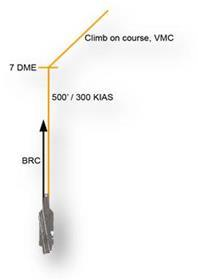
Şekilde: altta gemi simgesi ve düz ileriyi gösteren siyah BRC oku. Kalkış izi (turuncu çizgi) gemiden BRC'ye paralel düz ileri uzanır ve "500' / 300 KIAS" olarak etiketlidir. Düz bölümün sonundaki işaret "7 DME"dir; iz burada döner (çizimde sağ-ileri doğru). Dönüşten sonraki bölümün etiketi "Climb on course, VMC"dir (rotasına VMC tırmanış).
- 2-10.01Figure 2-1 Case I Departure
- 2-10.F1[Figure 2-1] Ship symbol at the bottom of the drawing with a black arrow labeled "BRC" pointing straight ahead (up the page).
- 2-10.F2[Figure 2-1] The departure track (orange line) runs straight ahead from the ship, parallel to the BRC arrow; this segment is labeled "500' / 300 KIAS".
- 2-10.F3[Figure 2-1] A cross-mark on the track at the end of the straight segment is labeled "7 DME"; at this point the track turns (drawn toward the upper right).
- 2-10.F4[Figure 2-1] The segment after the turn at 7 DME is labeled "Climb on course, VMC".
b. Case II
Case II kalkışları, gemide görsel koşullar bulunduğu ama kontrollü tırmanış (controlled climb) gerektiği durumlarda uçulur (WX 3.000-5'ten az ama 1.000-5'ten fazla). Kalkışta Departure Control frekansı kullanılır. Clearing turn'den sonra 500 ft ve 300 KIAS'te, BRC'ye paralel düz ileri devam edin. 7 DME'de 10 DME arc'ı kesmek (intercept) için dönün; departure radial üzerine oturana kadar görsel koşulları koruyun (Şekil 2-2).
- 2-10.02(b) Case II. Case II departures are flown when visual conditions are present at the ship, but a controlled climb is required (WX less than 3000-5, but greater than 1000-5).
- 2-10.03Departure Control frequency will be used for the launch.
- 2-10.04After the clearing turn, proceed straight ahead at 500 feet and 300 KIAS paralleling BRC.
- 2-10.05At 7 DME, turn to intercept the 10 DME arc, maintaining visual conditions until established on the departure radial (Figure 2-2).
500 ft irtifa kısıtlaması 7 DME'den sonra kalkar, ancak tırmanış VMC'de sürdürülebiliyorsa. VMC on top'a kadar 300 KIAS koruyun. 18.000 ft'i geçerken hâlâ IMC iseniz talimat almak için "Popeye" bildirin (Ek A sözlüğüne göre Popeye, uçağın IMC'de uçtuğunu belirten kod kelimedir).
- 2-10.06The 500-foot altitude restriction is lifted after 7 DME, if the climb can be continued in VMC.
- 2-10.07Maintain 300 KIAS until VMC on top.
- 2-10.08If you are still IMC passing 18,000 feet, report “Popeye” to receive instructions.
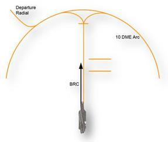
Şekilde: altta gemi simgesi ve siyah BRC oku; kalkış izi gemiden BRC'ye paralel düz ileri uzanır. Bu düz bölümde irtifa, hız ya da mesafe etiketi yoktur; yanında (sağında) etiketsiz iki kısa yatay çizgi vardır ve anlamları belgede açıklanmaz. Düz bölümün sonunda etiketsiz bir işaret bulunur; iz buradan hem sola hem sağa kıvrılarak "10 DME Arc" etiketli büyük yaya katılır. Sol üstte "Departure Radial" etiketli çizgi yaydan dışarı doğru ayrılır.
- 2-10.09Figure 2-2 Case II Departure
- 2-10.F5[Figure 2-2] Ship symbol at the bottom of the drawing with a black arrow labeled "BRC" pointing straight ahead; the departure track (orange line) runs straight ahead from the ship parallel to BRC. No altitude, airspeed or distance label is printed on this straight segment.
- 2-10.F6[Figure 2-2] Two short horizontal orange lines are drawn beside (to the right of) the straight segment; they carry no label.
- 2-10.F7[Figure 2-2] At the end of the straight segment there is an unlabeled cross-mark; from it the track splits and curves both left and right to join a large arc labeled "10 DME Arc".
- 2-10.F8[Figure 2-2] At the upper left, a line labeled "Departure Radial" leaves the 10 DME arc outbound.
c. Case III
Case III kalkışları gece ve hava koşulları IMC olduğunda (WX 1.000-5'in altında) ve kontrollü tırmanış gerektiğinde uçulur. Uçak Departure Control frekansında kalkar; uçaklar arasında en az 30 saniyelik kalkış aralığı bulunur. Kalkıştan sonra 300 kts ile düz ileri tırmanın; 5 NM'yi 1.500 ft AGL veya üstünde geçin; 7 NM'de 10 NM arc'ı kesmek için dönün. Tırmanmaya devam edin ve departure radial'a katılın.
- 2-11.01(c) Case III. Case III departures are flown at night and when weather conditions are IMC (WX below 1000-5), and a controlled climb is required.
- 2-11.02The aircraft will launch on Departure Control frequency, with a minimum launch interval of 30 seconds between aircraft.
- 2-11.03Following the launch, climb straight ahead at 300 kts, crossing 5 NM at 1500 AGL or above; at 7 NM, turn to intercept the 10 NM arc.
- 2-11.04Continue climbing and join the departure radial.
Case III kalkışlarında yaygın kullanılan telsiz raporları ve örnekleri (örneklerdeki çağrı adı 405; sözlüğe göre Angels = bin ft cinsinden irtifa):
| Rapor | Ne zaman | Örnek çağrı |
|---|---|---|
| Airborne | Havalanınca | "Departure, 405, airborne" |
| Passing 2,500 feet | 2.500 ft'i geçerken | "Departure, 405, passing 2.5" |
| Arcing | 10 NM arc'a dönerken (turning onto the 10 NM arc) | "Departure, 405, Arcing" |
| Established outbound | Atanan radial üzerinde dışa doğru (on assigned radial) | "Departure, 405, Established outbound" |
| Popeye (irtifayla) | Popeye bildirilirken irtifa da söylenir (bkz. Case II: 18.000 ft'i geçerken hâlâ IMC) | "Departure, 405, Popeye, Angels eighteen" |
| On top (irtifayla) | On top bildirilirken irtifa da söylenir | "Departure, 405, On top, Angels twelve" |
| Kilo | Uçak göreve hazır (mission-ready) | "Departure, 405, Kilo" |
- 2-11.05The following voice reports and examples are commonly used during Case III departures:
- 2-11.06(i) Airborne - “Departure, 405, airborne”
- 2-11.07(ii) Passing 2,500 feet - “Departure, 405, passing 2.5”
- 2-11.08(iii) Arcing (turning onto the 10 NM arc) - “Departure, 405, Arcing”
- 2-11.09(iv) Established outbound (on assigned radial) - “Departure, 405, Established outbound”
- 2-11.10(v) Popeye, with altitude - “Departure, 405, Popeye, Angels eighteen”
- 2-11.11(vi) On top, with altitude - “Departure, 405, On top, Angels twelve”
- 2-11.12(vii) Kilo (indicates the aircraft is mission-ready) - “Departure, 405, Kilo”
Kalkış metninde Case II "WX less than 3000-5, but greater than 1000-5", Case III "WX below 1000-5" olarak tanımlanıyor; bu iki tanıma göre tam 1.000-5 hiçbir Case'e girmiyor. 203.1'deki (s. 2-4) genel tanımda ise Case II için tavan "1,000 feet or above" ve 5 NM görüş deniyor. Sınır değerin hangi Case'e ait olduğunu güncel bir kaynaktan doğrulayın.
- 2-10.02(b) Case II. Case II departures are flown when visual conditions are present at the ship, but a controlled climb is required (WX less than 3000-5, but greater than 1000-5).
- 2-11.01(c) Case III. Case III departures are flown at night and when weather conditions are IMC (WX below 1000-5), and a controlled climb is required.
Üç Case'in karşılaştırması
| Case I | Case II | Case III | |
|---|---|---|---|
| Ne zaman | Gündüz VMC, WX 3.000-5 veya daha iyi | Gemide görsel koşul var, kontrollü tırmanış gerekli; WX 3.000-5'ten az, 1.000-5'ten fazla | Gece ve IMC (WX 1.000-5 altı), kontrollü tırmanış gerekli |
| Frekans / aralık | Belgede belirtilmemiş | Departure Control | Departure Control; uçaklar arası en az 30 s |
| İlk bacak | Clearing turn, 500 ft, 300 KIAS, BRC'ye paralel | Clearing turn, sonra düz ileri 500 ft, 300 KIAS, BRC'ye paralel | Düz ileri tırmanış, 300 kts; 5 NM'yi 1.500 ft AGL veya üstünde geç |
| Dönüş | Talimatla ya da 7 DME'de | 7 DME | 7 NM |
| Sonrası | VMC on course tırmanış | 10 DME arc'ı kes, departure radial'a oturana kadar görsel koşulları koru | 10 NM arc'ı kes, tırmanmaya devam et, departure radial'a katıl |
| Diğer | 500 ft / 300 KIAS 7 DME'ye kadar | 500 ft kısıtı 7 DME'den sonra kalkar (VMC'de tırmanış sürebiliyorsa); VMC on top'a kadar 300 KIAS; 18.000 ft'i geçerken hâlâ IMC ise "Popeye" | Telsiz raporları: airborne, passing 2.5, arcing, established outbound, Popeye / On top (irtifayla), Kilo |
- 2-9.22(a) Case I. Case I departures are flown during day VMC conditions (WX 3,000-5 or better).
- 2-9.23Once the aircraft clears the catapult and a positive rate of climb is established, the pilot will execute a clearing turn, climb to 500’ and parallel base recovery course (BRC).
- 2-9.24The Case I departure is flown at 500’ and 300 KIAS paralleling BRC until 7 DME.
- 2-9.25When directed, or at 7 DME, the aircraft shall climb VMC on course (Figure 2-1).
- 2-10.02(b) Case II. Case II departures are flown when visual conditions are present at the ship, but a controlled climb is required (WX less than 3000-5, but greater than 1000-5).
- 2-10.03Departure Control frequency will be used for the launch.
- 2-10.04After the clearing turn, proceed straight ahead at 500 feet and 300 KIAS paralleling BRC.
- 2-10.05At 7 DME, turn to intercept the 10 DME arc, maintaining visual conditions until established on the departure radial (Figure 2-2).
- 2-10.06The 500-foot altitude restriction is lifted after 7 DME, if the climb can be continued in VMC.
- 2-10.07Maintain 300 KIAS until VMC on top.
- 2-10.08If you are still IMC passing 18,000 feet, report “Popeye” to receive instructions.
- 2-11.01(c) Case III. Case III departures are flown at night and when weather conditions are IMC (WX below 1000-5), and a controlled climb is required.
- 2-11.02The aircraft will launch on Departure Control frequency, with a minimum launch interval of 30 seconds between aircraft.
- 2-11.03Following the launch, climb straight ahead at 300 kts, crossing 5 NM at 1500 AGL or above; at 7 NM, turn to intercept the 10 NM arc.
- 2-11.04Continue climbing and join the departure radial.
- 2-11.05The following voice reports and examples are commonly used during Case III departures:
- 2-11.06(i) Airborne - “Departure, 405, airborne”
- 2-11.07(ii) Passing 2,500 feet - “Departure, 405, passing 2.5”
- 2-11.08(iii) Arcing (turning onto the 10 NM arc) - “Departure, 405, Arcing”
- 2-11.09(iv) Established outbound (on assigned radial) - “Departure, 405, Established outbound”
- 2-11.10(v) Popeye, with altitude - “Departure, 405, Popeye, Angels eighteen”
- 2-11.11(vi) On top, with altitude - “Departure, 405, On top, Angels twelve”
- 2-11.12(vii) Kilo (indicates the aircraft is mission-ready) - “Departure, 405, Kilo”
Şema ölçeksizdir. Case I ve II çizimleri Şekil 2-1 ve 2-2'yi izler (clearing turn şekillerde gösterilmez). Case III için belgede şekil yoktur; çizim metne göre Case II şeklinden uyarlanmıştır. Case I'deki rota yönü ve departure radial'ın yönü yalnızca örnektir.
- 2-9.22(a) Case I. Case I departures are flown during day VMC conditions (WX 3,000-5 or better).
- 2-9.23Once the aircraft clears the catapult and a positive rate of climb is established, the pilot will execute a clearing turn, climb to 500’ and parallel base recovery course (BRC).
- 2-9.24The Case I departure is flown at 500’ and 300 KIAS paralleling BRC until 7 DME.
- 2-9.25When directed, or at 7 DME, the aircraft shall climb VMC on course (Figure 2-1).
- 2-10.02(b) Case II. Case II departures are flown when visual conditions are present at the ship, but a controlled climb is required (WX less than 3000-5, but greater than 1000-5).
- 2-10.03Departure Control frequency will be used for the launch.
- 2-10.04After the clearing turn, proceed straight ahead at 500 feet and 300 KIAS paralleling BRC.
- 2-10.05At 7 DME, turn to intercept the 10 DME arc, maintaining visual conditions until established on the departure radial (Figure 2-2).
- 2-10.06The 500-foot altitude restriction is lifted after 7 DME, if the climb can be continued in VMC.
- 2-10.07Maintain 300 KIAS until VMC on top.
- 2-10.08If you are still IMC passing 18,000 feet, report “Popeye” to receive instructions.
- 2-11.01(c) Case III. Case III departures are flown at night and when weather conditions are IMC (WX below 1000-5), and a controlled climb is required.
- 2-11.02The aircraft will launch on Departure Control frequency, with a minimum launch interval of 30 seconds between aircraft.
- 2-11.03Following the launch, climb straight ahead at 300 kts, crossing 5 NM at 1500 AGL or above; at 7 NM, turn to intercept the 10 NM arc.
- 2-11.04Continue climbing and join the departure radial.
- 2-11.05The following voice reports and examples are commonly used during Case III departures:
- 2-11.06(i) Airborne - “Departure, 405, airborne”
- 2-11.07(ii) Passing 2,500 feet - “Departure, 405, passing 2.5”
- 2-11.08(iii) Arcing (turning onto the 10 NM arc) - “Departure, 405, Arcing”
- 2-11.09(iv) Established outbound (on assigned radial) - “Departure, 405, Established outbound”
- 2-11.10(v) Popeye, with altitude - “Departure, 405, Popeye, Angels eighteen”
- 2-11.11(vi) On top, with altitude - “Departure, 405, On top, Angels twelve”
- 2-11.12(vii) Kilo (indicates the aircraft is mission-ready) - “Departure, 405, Kilo”
Bölüm soruları
0 / 17Kalkış sonrası (departure) prosedürleri neye dayanır?
"Departure procedures are predicated on case operations."
Kaynak: s. 2-9 (2-9.21)
Case I kalkışı hangi koşullarda uçulur?
Kontrollü tırmanış gerektiren durumlar Case II ve Case III'tür.
Kaynak: s. 2-9 (2-9.22)
Case I kalkışının ilk bacağı nasıl uçulur?
Pozitif tırmanma oranı kurulduktan sonra clearing turn yapılır, 500 ft'e tırmanılır.
Kaynak: s. 2-9, 2-10 (2-9.23, 2-9.24, 2-10.F2)
Case I'de uçak ne zaman VMC olarak rotasına tırmanır?
Şekil 2-1'de 7 DME'den sonraki bacak "Climb on course, VMC" olarak etiketlidir.
Kaynak: s. 2-9, 2-10 (2-9.25, 2-10.F3, 2-10.F4)
Case II kalkışı hangi hava koşullarında uçulur?
Belgedeki sınırlarla tam 1.000-5 değeri hiçbir tanıma girmiyor (kaynak notu).
Kaynak: s. 2-10 (2-10.02)
Case II'de 7 DME'de ne yapılır?
Şekil 2-2'de iz 10 DME Arc üzerinden "Departure Radial"a geçer.
Kaynak: s. 2-10 (2-10.05, 2-10.F7, 2-10.F8)
Case II'de 500 ft irtifa kısıtlaması ne zaman kalkar?
Clearing turn'den sonra 7 DME'ye kadar 500 ft ve 300 KIAS'te BRC'ye paralel düz ileri uçulur.
Kaynak: s. 2-10 (2-10.04, 2-10.06)
Case II'de 300 KIAS ne zamana kadar korunur?
"Maintain 300 KIAS until VMC on top."
Kaynak: s. 2-10 (2-10.07)
Case II'de 18.000 ft'i geçerken hâlâ IMC iseniz ne yaparsınız?
Örnek: "Departure, 405, Popeye, Angels eighteen".
Kaynak: s. 2-10, 2-11 (2-10.08, 2-11.10)
Hangi Case'lerde kalkış Departure Control frekansında yapılır?
Case I için frekans belirtilmemiştir.
Kaynak: s. 2-10, 2-11 (2-10.03, 2-11.02)
Case III kalkışında uçaklar arasındaki minimum kalkış aralığı nedir?
Case III gece ve IMC'de (WX 1.000-5'in altında), kontrollü tırmanış gerektiğinde uçulur.
Kaynak: s. 2-11 (2-11.01, 2-11.02)
Case III'te 5 NM hangi irtifada geçilir?
Kalkıştan sonra 300 kts ile düz ileri tırmanılır.
Kaynak: s. 2-11 (2-11.03)
Case III'te 10 NM arc'ı kesmek için nerede dönülür?
Sonra tırmanmaya devam edilir ve departure radial'a katılınır.
Kaynak: s. 2-11 (2-11.03, 2-11.04)
"Departure, 405, passing 2.5" raporu ne zaman verilir?
Case III'te yaygın kullanılan raporlardan biridir.
Kaynak: s. 2-11 (2-11.05, 2-11.07)
"Arcing" raporu ne zaman verilir?
Atanan radial üzerinde ise "Established outbound" bildirilir.
Kaynak: s. 2-11 (2-11.08, 2-11.09)
"Kilo" raporu neyi belirtir?
"Departure, 405, Kilo". IMC için "Popeye" kullanılır.
Kaynak: s. 2-11 (2-11.12)
Şekil 2-2'de kalkış izi düz bölümden sonra nereye bağlanır?
Şekildeki düz bölümde irtifa/hız etiketi yoktur; yanında etiketsiz iki kısa yatay çizgi vardır.
Kaynak: s. 2-10 (2-10.F5, 2-10.F6, 2-10.F7, 2-10.F8)
204Varış ve recovery: genel
Görevden dönüş: Red Crown ve Strike
Görevden sonra uçaklar, planlanmış döngüsel iniş zamanlarına (scheduled cyclic land time) yetişecek şekilde Mother'a döner. Görev frekansından çıkış (check out) yapıldıktan sonra CSG hava savunma kontrolörü Red Crown aranır; çağrı adı (call sign), konum ve irtifa bildirilir. Red Crown talimatlarını verir, ardından uçağı Strike Control'e devreder (hand off). Bu devir 50 NM'lik Carrier Control Area (CCA)'ya girmeden önce gerçekleşmelidir.
- 2-11.14Following the mission, aircraft will proceed back to Mother to arrive at their scheduled cyclic land time.
- 2-11.15After checking out on the mission frequency, contact the CSG air defense controller (Red Crown) with your call sign, position and altitude.
- 2-11.16Red Crown will pass instructions, and then hand you off to Strike Control.
- 2-11.17This hand off should occur prior to entering the 50 NM Carrier Control Area (CCA).
Strike'a yapılan check-in Red Crown'a yapılanla aynıdır; tek farkı, koldaki (flight) en düşük yakıt durumunun (low fuel state) da bildirilmesidir. Koldaki herhangi bir uçağın bakım arızası ("alibis") varsa bunlar Strike kontrolörüne bildirilir; Strike da bunları ready room'a aktarır. Zaman elverirse Strike güncel hava durumunu, beklenen recovery Case'ini ve recovery ile ilgili diğer genel bilgileri verir.
- 2-11.18The check in with Strike will be the same as for Red Crown except you will also include the low fuel state in your flight.
- 2-11.19If any aircraft in the flight have maintenance discrepancies (“alibis”), pass them to the Strike controller who will then relay them to the ready room.
- 2-11.20Time permitting; Strike will give the current weather, anticipated Case recovery and any other general information for the recovery.
Gemi–kara geçişi: HAIL-R kontrol listesi
Gemiden karaya ya da karadan gemiye uçuluyorsa uçağın o recovery'nin özelliklerine göre ayarlandığından emin olmak önemlidir. Bunu sağlamak için ship-to-shore checklist (HAIL-R) uygulanır:
| Harf | Kontrol maddeleri |
|---|---|
| H | Hook / Heats |
| A | Anti-Skid / Altimeter |
| I | Instruments |
| L | Landing Weight / Lights |
| R | Radios / RADALT |
Bu listeden bir maddeyi atlamanın nasıl gerçek bir soruna yol açabileceği kolayca görülür: pistte lastik patlaması, gemiye fazla ağır (overweight) iniş ya da karada (on the beach) istemeden tele takılma (trap).
- 2-11.21If flying from the ship to shore, or vice versa, it is important to ensure that the aircraft is setup for the particulars of that recovery.
- 2-11.22Go through the ship -to-shore checklist (HAIL-R) to ensure this is done.
- 2-11.23• H: Hook / Heats
- 2-11.24• A: Anti-Skid / Altimeter
- 2-11.25• I: Instruments
- 2-11.26• L: Landing Weight / Lights
- 2-12.01• R: Radios / RADALT
- 2-12.02It is easy to see how missing an item on this checklist could result in a real problem; blown tires on the runway, landing overweight at the ship, or inadvertently taking a trap on the beach.
Marshal'a check-in
CCA'nın içine girildikten sonra Strike uçakları Marshal kontrolörüne devreder. Marshal frekansında çağrı adı, konum, irtifa ve low state ile check-in yapılır. Marshal, recovery Case'ine göre holding talimatlarını (atanmış irtifa dahil) verir; geminin hava durumunu, altimetre ayarını, BRC'yi ve bingo bilgisini iletir. BRC, recovery sırasında geminin heading'idir (the ship's heading during the recovery).
- 2-12.03Once inside the CCA, Strike will hand aircraft off to the Marshal controller.
- 2-12.04Check in on Marshal Frequency with call sign, position, altitude and low state.
- 2-12.05Marshal will assign case recovery holding instructions (including assigned altitude) and pass the ship’s weather, altimeter setting, BRC and bingo information.
- 2-12.06BRC is the ship’s heading during the recovery.
- Case I: Marshal uçakları overhead holding paternine gönderir (clear) ve gemiden 10 NM'de "see me" çağrısı yapılmasını ister. Bu çağrı, Mother ile görsel temas kurulduğunu gösterir.
- Case II ve III: Marshal holding talimatlarını ve beklenen yaklaşma zamanını (expected approach time, "push time") verir.
- 2-12.07For Case I recoveries, Marshal will clear aircraft to the overhead holding pattern and instruct you to call “see me” at 10NM from the ship.
- 2-12.08This call indicates you have visual contact with Mother.
- 2-12.09For Case II and III recoveries, Marshal will give holding instructions and an expected approach time (push time).
Özetle, dönüşteki üç kontrolör:
| Kontrolör | Ne zaman | Check-in'de bildirilenler | Kontrolörün verdikleri |
|---|---|---|---|
| Red Crown (CSG hava savunma kontrolörü) | Görev frekansından çıkınca | Çağrı adı, konum, irtifa | Talimatlar; ardından Strike'a devir (50 NM CCA'ya girmeden önce) |
| Strike (Strike Control) | CCA'ya girmeden önce devralır | Red Crown ile aynı + koldaki low fuel state; varsa alibis | Zaman elverirse güncel hava, beklenen Case, genel bilgi; CCA içinde Marshal'a devir |
| Marshal | CCA içinde | Çağrı adı, konum, irtifa, low state | Holding talimatı (irtifa dahil), hava, altimetre, BRC, bingo · Case I: overhead holding + 10 NM'de "see me" · Case II/III: holding + push time |
- 2-11.15After checking out on the mission frequency, contact the CSG air defense controller (Red Crown) with your call sign, position and altitude.
- 2-11.16Red Crown will pass instructions, and then hand you off to Strike Control.
- 2-11.17This hand off should occur prior to entering the 50 NM Carrier Control Area (CCA).
- 2-11.18The check in with Strike will be the same as for Red Crown except you will also include the low fuel state in your flight.
- 2-11.19If any aircraft in the flight have maintenance discrepancies (“alibis”), pass them to the Strike controller who will then relay them to the ready room.
- 2-11.20Time permitting; Strike will give the current weather, anticipated Case recovery and any other general information for the recovery.
- 2-12.03Once inside the CCA, Strike will hand aircraft off to the Marshal controller.
- 2-12.04Check in on Marshal Frequency with call sign, position, altitude and low state.
- 2-12.05Marshal will assign case recovery holding instructions (including assigned altitude) and pass the ship’s weather, altimeter setting, BRC and bingo information.
- 2-12.06BRC is the ship’s heading during the recovery.
- 2-12.07For Case I recoveries, Marshal will clear aircraft to the overhead holding pattern and instruct you to call “see me” at 10NM from the ship.
- 2-12.08This call indicates you have visual contact with Mother.
- 2-12.09For Case II and III recoveries, Marshal will give holding instructions and an expected approach time (push time).
Örnek telsiz konuşmaları
Belgedeki örnek konuşmalar (405 = uçağın çağrı adı):
| Konuşan | Çağrı | İçerik |
|---|---|---|
| 405 | "Red Crown, 405, Mother's 250 for 75, Angels 17" | Çağrı adı, konum (Mother'ın 250 radyalinde 75 mil), irtifa (Angels 17) |
| Red Crown | "405, sweet/sweet, contact Strike" | Strike'a devir |
| 405 | "Strike, 405, Mother's 250 for 55, Angels 12, State 2.4. No alibis" | Aynı bilgiler + yakıt durumu (State 2.4) + bakım arızası yok (No alibis) |
| Strike | "405, sweet/sweet, Mother is VFR, Case I. Contact Marshal" | Gemide hava VFR, Case I; Marshal'a devir |
| 405 | "Marshal, 405, 250 for 52, Angels 9, State 2.4" | Çağrı adı, konum, irtifa, low state |
| Marshal (Case I) | "405, Case I. BRC is 015, Expected Charlie time 22. Report see me" | Case, BRC (015), beklenen Charlie time (22), "see me" talimatı |
| Marshal (Case II ya da III) | "405, Case II (or III). BRC is 015. Marshal on the 245 radial at 25 DME, Angels 10. Expected approach time 22, Approach button 17, altimeter 29.94" | Case, BRC, holding fix (245 radyali, 25 DME, Angels 10), beklenen yaklaşma zamanı (22), Approach button (17), altimetre (29.94) |
- 2-12.10Example radio calls:
- 2-12.11405 - “Red Crown, 405, Mother’s 250 for 75, Angels 17” Red Crown - “405, sweet/sweet, contact Strike” 405 - “Strike, 405, Mother’s 250 for 55, Angels 12, State 2.4.
- 2-12.12No alibis” Strike - “405, sweet/sweet, Mother is VFR, Case I.
- 2-12.13Contact Marshal” 405 - “Marshal, 405, 250 for 52, Angels 9, State 2.4” Marshal - “405, Case I.
- 2-12.14BRC is 015, Expected Charlie time 22.
- 2-12.15Report see me” Or “405, Case II (or III).
- 2-12.16BRC is 015.
- 2-12.17Marshal on the 245 radial at 25 DME, Angels 10.
- 2-12.18Expected approach time 22, Approach button 17, altimeter 29.94”
Metin, Strike'ın uçakları Marshal'a "Once inside the CCA" devrettiğini söyler; CCA 50 NM'dir. Bu örnekte ise 405, Marshal'a "250 for 52" konumundan, yani CCA'nın dışından check-in yapıyor. (Strike'a "250 for 55" ile CCA dışında check-in yapılması metne uygundur; s. 2-17'deki örnekte Marshal check-in'i "250 for 42" ile CCA içindedir.)
- 2-12.03Once inside the CCA, Strike will hand aircraft off to the Marshal controller.
- 2-12.11405 - “Red Crown, 405, Mother’s 250 for 75, Angels 17” Red Crown - “405, sweet/sweet, contact Strike” 405 - “Strike, 405, Mother’s 250 for 55, Angels 12, State 2.4.
- 2-12.13Contact Marshal” 405 - “Marshal, 405, 250 for 52, Angels 9, State 2.4” Marshal - “405, Case I.
- 2-17.26(i) 405 - “Marshal, 405, 250 for 42, Angels 9, State 2.4”
s. 2-12'de Marshal'ın pilota 10 NM'de "see me" çağrısı yapmasını söyleyeceği yazılıdır ("instruct you to call 'see me'"). s. 2-13'te ise pilotun Marshal'ı "see you" çağrısıyla bilgilendireceği yazılıdır. Örnek konuşmalarda Marshal'ın talimatı "Report see me", pilotun çağrısı "405, See you at 10" şeklindedir.
- 2-12.07For Case I recoveries, Marshal will clear aircraft to the overhead holding pattern and instruct you to call “see me” at 10NM from the ship.
- 2-13.04When in visual contact with Mother, notify Marshal with the “see you” call.
- 2-17.27(ii) Marshal - “405, Case I. BRC is 015, Report, see me”
- 2-18.03(iv) 405 - “405, See you at 10”
Bölüm soruları
0 / 12Görevden dönüşte, görev frekansından çıkış yapıldıktan sonra ilk hangi kontrolör aranır?
Red Crown'a çağrı adı, konum ve irtifa bildirilir; Red Crown talimat verip uçağı Strike Control'e devreder.
Kaynak: s. 2-11 (2-11.15, 2-11.16)
Red Crown'dan Strike'a devir ne zaman gerçekleşmelidir?
"This hand off should occur prior to entering the 50 NM Carrier Control Area (CCA)."
Kaynak: s. 2-11 (2-11.17)
Strike'a yapılan check-in'in Red Crown check-in'inden farkı nedir?
Check-in aynıdır; yalnızca koldaki low fuel state eklenir.
Kaynak: s. 2-11 (2-11.18)
"Alibis" nedir ve ne yapılır?
"If any aircraft in the flight have maintenance discrepancies ("alibis"), pass them to the Strike controller who will then relay them to the ready room."
Kaynak: s. 2-11 (2-11.19)
HAIL-R kontrol listesi ne zaman uygulanır?
Amaç uçağın o recovery'nin özelliklerine göre ayarlandığından emin olmaktır (ship-to-shore checklist).
Kaynak: s. 2-11 (2-11.21, 2-11.22)
HAIL-R'de "L" harfi neyi ifade eder?
H: Hook / Heats · A: Anti-Skid / Altimeter · I: Instruments · L: Landing Weight / Lights · R: Radios / RADALT.
Kaynak: s. 2-11, 2-12 (2-11.23, 2-11.24, 2-11.25, 2-11.26, 2-12.01)
Belgeye göre HAIL-R'de madde atlamanın olası sonuçlarından biri hangisidir?
Sayılan sonuçlar: pistte lastik patlaması, gemiye fazla ağır iniş, karada istemeden tele takılma.
Kaynak: s. 2-12 (2-12.02)
Strike uçakları Marshal'a ne zaman devreder?
"Once inside the CCA, Strike will hand aircraft off to the Marshal controller."
Kaynak: s. 2-12 (2-12.03)
Marshal frekansındaki check-in'de neler bildirilir?
BRC, altimetre, hava ve bingo bilgisini Marshal verir.
Kaynak: s. 2-12 (2-12.04, 2-12.05)
BRC nedir?
"BRC is the ship's heading during the recovery."
Kaynak: s. 2-12 (2-12.06)
Case I recovery'de Marshal ne yapar?
Bu çağrı Mother ile görsel temas kurulduğunu gösterir. Push time Case II ve III'te verilir.
Kaynak: s. 2-12 (2-12.07, 2-12.08, 2-12.09)
Örnek konuşmada Case II/III için Marshal'ın verdiği holding fix hangisidir?
"Marshal on the 245 radial at 25 DME, Angels 10. Expected approach time 22, Approach button 17, altimeter 29.94"
Kaynak: s. 2-12 (2-12.15, 2-12.16, 2-12.17, 2-12.18)
204.1Case I recovery
Ne zaman Case I?
Case I recovery, hava 3.000/5'ten iyi olduğu sürece mümkün olan en geniş ölçüde kullanılır.
- 2-13.02Case I recoveries are used to the maximum extent possible, provided the weather is better than 3,000/5.
Burada Case I için "better than 3,000/5" deniyor. s. 2-4'te Case I havası "ceiling ... no lower than 3,000 feet and not less than 5 NM visibility", s. 2-9'da "WX 3,000-5 or better" olarak, yani 3.000/5 dahil verilir. Tam sınır değerde hangi ifadenin geçerli olduğu belgeden anlaşılmaz.
- 2-13.02Case I recoveries are used to the maximum extent possible, provided the weather is better than 3,000/5.
a. Overhead (port) holding
Marshal'a ilk check-in'den sonra doğrudan Mother'a gidilir ve filonun holding irtifasında overhead holding'e girilir. Mother ile görsel temas kurulunca Marshal "see you" çağrısıyla bilgilendirilir. Case I recovery için dönen uçaklar kendi holding irtifalarına en geç 10 NM'de yerleşmiş (established) olmalıdır. Overhead holding'e gidilir ve paterne teğet (tangentially) girilir (Şekil 2-3).
- 2-13.03(a) Overhead (Port) Holding. After the initial check in with Marshal, proceed directly to Mother and enter overhead holding at your squadron’s holding altitude.
- 2-13.04When in visual contact with Mother, notify Marshal with the “see you” call.
- 2-13.05Aircraft returning for Case I recoveries must be established at their respective holding altitudes no later than 10 NM.
- 2-13.06Proceed to overhead holding, and enter the pattern tangentially (Figure 2-3).
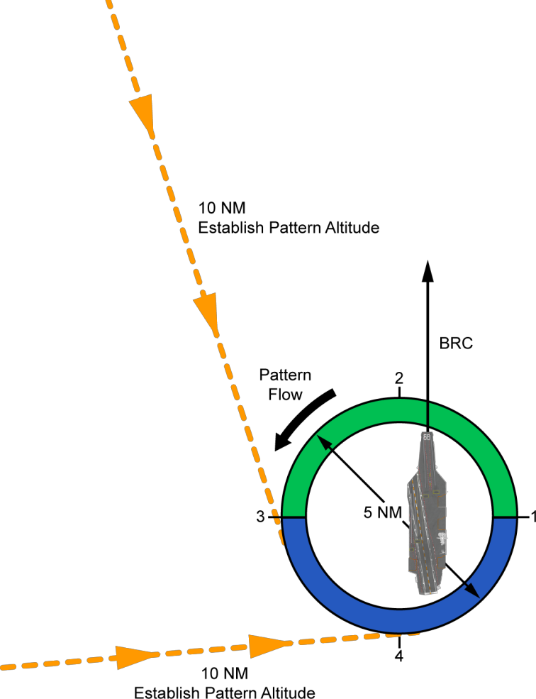
Şekilde:
- Halka biçiminde bir holding paterni; halkada 1 (sağda), 2 (üstte, BRC tarafında), 3 (solda) ve 4 (altta) noktaları işaretli. "Pattern Flow" oku akışın saat yönünün tersine (sol el) olduğunu gösterir.
- Gemi halkanın içinde, pruvası yukarıda, halka merkezi ile 1 noktası arasında çizilmiştir; pruvadan yukarı doğru "BRC" oku uzanır.
- Halkanın merkezinden geçip bir kenarından öbür kenarına çizilmiş çift başlı ok "5 NM" etiketlidir.
- Halkanın üst yarısı (3'ten 2 üzerinden 1'e) yeşil, alt yarısı (3'ten 4 üzerinden 1'e) mavi boyalıdır; bu şekilde renklerin açıklaması yoktur.
- İki kesik çizgili giriş hattı halkaya akış yönünde teğet olarak katılır: biri sol üstten gelip 3 noktasında, diğeri soldan gelip altta 4 noktası yakınında. İkisi de "10 NM Establish Pattern Altitude" (10 NM'de patern irtifasına yerleş) etiketlidir.
- 2-13.07Figure 2-3 Case I Port Holding Pattern Entry
- 2-13.F1[Figure 2-3] Circular holding pattern (ring) with points marked 1 (right side), 2 (top, BRC side), 3 (left side) and 4 (bottom); a 'Pattern Flow' arrow shows counterclockwise (left-hand) flow.
- 2-13.F2[Figure 2-3] The carrier is drawn inside the ring, bow toward the top, between the ring center and point 1; a 'BRC' arrow extends from the bow toward the top of the figure.
- 2-13.F3[Figure 2-3] A double-headed arrow drawn across the ring through its center is labelled '5 NM'.
- 2-13.F4[Figure 2-3] The upper half of the ring (from point 3 through 2 to 1) is shaded green and the lower half (from point 3 through 4 to 1) blue; this figure has no legend for the colors.
- 2-13.F5[Figure 2-3] Two dashed entry tracks join the ring tangentially in the direction of pattern flow: one from the upper left joining at point 3, one from the left joining at the bottom near point 4; each is labelled '10 NM Establish Pattern Altitude'.
Overhead holding paterni sol el (left-hand) bir paterndir; Point 1 geminin tam üstündedir (directly overhead the carrier). Point 2, 3 ve 4 sırayla 90°'lik aralıklarla gelir (Şekil 2-4). Bu holding paterni genellikle "stack" diye anılır; tüm uçaklar 5 NM içinde ve 2.000 ft AGL'nin altına inmeden kalmalıdır. Holding sırasında kol, aksi brief edilmedikçe max conserve yakıt akışında (fuel flow) kalır.
- 2-13.08The overhead holding pattern is a left-hand pattern, with Point 1 located directly overhead the carrier.
- 2-13.09Points 2, 3 and 4 sequentially follow in 90-degree increments (Figure 2-4).
- 2-13.10This holding pattern is often referred to as the “stack,” and all aircraft must remain within 5 NM and no lower than 2,000 feet AGL.
- 2-13.11While holding, the flight will remain at max conserve fuel flow unless briefed otherwise.
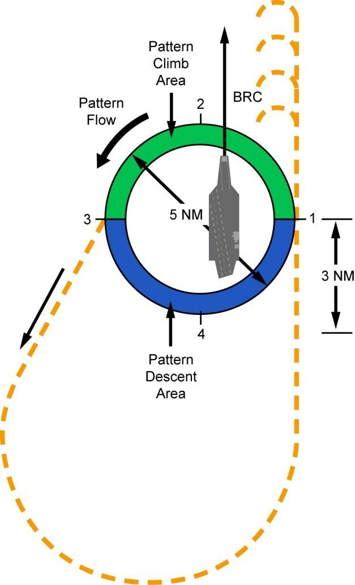
Şekilde:
- Şekil 2-3'teki halka: 1 (sağ), 2 (üst), 3 (sol), 4 (alt) noktaları, saat yönünün tersine "Pattern Flow", halkanın içinde gemi ve yukarı doğru "BRC" oku, halkayı boydan boya kesen çift başlı "5 NM" oku.
- Halkanın 1–2–3 arasındaki üst (yeşil) yarısı "Pattern Climb Area" (tırmanma bölgesi), 3–4–1 arasındaki alt (mavi) yarısı "Pattern Descent Area" (alçalma bölgesi) olarak etiketlidir.
- Kesik çizgili ayrılış hattı halkadan 3 noktasında sol alta doğru (okla) ayrılır, geminin kıç tarafında dönerek geri gelir ve geminin sancak tarafı boyunca içeri doğru, 1 noktasından geçerek BRC'ye paralel uzanır.
- Sağ taraftaki "3 NM" ölçüsü, 1 noktasının hizasından içeri uçuş hattı üzerinde kıç taraftaki bir noktaya kadar olan mesafeyi gösterir.
- Geminin önünde, içeri uçuş hattından art arda noktalarda sola kıvrılan dört etiketsiz kesik çizgili yay vardır.
- 2-14.01Figure 2-4 Case I Overhead Holding Pattern
- 2-14.F1[Figure 2-4] Same ring as Figure 2-3: points 1 (right), 2 (top), 3 (left), 4 (bottom); 'Pattern Flow' arrow counterclockwise; carrier inside the ring with a 'BRC' arrow toward the top; a '5 NM' double-headed arrow across the ring.
- 2-14.F2[Figure 2-4] The upper (green) half of the ring, between points 1-2-3, is labelled 'Pattern Climb Area'; the lower (blue) half, between points 3-4-1, is labelled 'Pattern Descent Area'.
- 2-14.F3[Figure 2-4] A dashed departure track leaves the ring at point 3 toward the lower left (arrow), loops around astern of the ship and comes back inbound along the starboard side, passing point 1 and paralleling BRC.
- 2-14.F4[Figure 2-4] A '3 NM' dimension on the right side measures from the level of point 1 to a point astern on the inbound track.
- 2-14.F5[Figure 2-4] Ahead of the ship, four unlabelled dashed arcs turn left off the inbound track at successive points.
- Metin Point 1'i "directly overhead the carrier" diye tanımlar ve ayrıca "point 1 (Mother)" diye anar. Şekil 2-3 ve 2-4'te ise 1 işareti halkanın sağ (sancak) kenarındadır; gemi halkanın içinde, merkez ile 1 noktası arasında çizilmiştir.
- Metin uçakların "within 5 NM" kalmasını söyler; şekillerde ise "5 NM" etiketli çift başlı ok halkanın bir kenarından öbür kenarına (çap boyunca) çizilmiştir. 5 NM'nin yarıçap mı çap mı olduğu belgeden kesin anlaşılmaz. Şekiller ölçeksizdir.
- 2-13.08The overhead holding pattern is a left-hand pattern, with Point 1 located directly overhead the carrier.
- 2-13.10This holding pattern is often referred to as the “stack,” and all aircraft must remain within 5 NM and no lower than 2,000 feet AGL.
- 2-15.09This ensures aircraft are crossing point 1 (Mother) at regular intervals.
- 2-13.F2[Figure 2-3] The carrier is drawn inside the ring, bow toward the top, between the ring center and point 1; a 'BRC' arrow extends from the bow toward the top of the figure.
- 2-13.F3[Figure 2-3] A double-headed arrow drawn across the ring through its center is labelled '5 NM'.
- 2-14.F1[Figure 2-4] Same ring as Figure 2-3: points 1 (right), 2 (top), 3 (left), 4 (bottom); 'Pattern Flow' arrow counterclockwise; carrier inside the ring with a 'BRC' arrow toward the top; a '5 NM' double-headed arrow across the ring.
Stack'teki irtifalar
Her filonun stack'te atanmış bir holding irtifası vardır; bu irtifalar 2.000 ft AGL'den başlar. Atanmış irtifalar arasında dikeyde en az 1.000 ft ayrım vardır ve irtifaları CVW SOP belirler. Holding'e yerleştikten sonra patern içindeki tüm irtifa değişiklikleri şöyle yapılır:
- Tırmanmalar (climbs): Point 1 ile 3 arasında yapılır.
- Alçalmalar (descents): Point 3 ile 1 arasında yapılır.
Şekil 2-4'te bu bölgeler, halkanın 1–2–3 arasındaki yarısında "Pattern Climb Area", 3–4–1 arasındaki yarısında "Pattern Descent Area" olarak gösterilir.
- 2-14.02Each squadron has an assigned holding altitude in the stack, beginning at 2,000 feet AGL.
- 2-14.03These assigned altitudes are separated vertically by a minimum of 1,000 feet and are assigned by the CVW SOP.
- 2-14.04Once established in holding, any altitude changes within the pattern are accomplished as follows:
- 2-14.05(i) Climbs: Performed between points 1 and 3.
- 2-14.06(ii) Descents: Performed between points 3 and 1.
- 2-14.F2[Figure 2-4] The upper (green) half of the ring, between points 1-2-3, is labelled 'Pattern Climb Area'; the lower (blue) half, between points 3-4-1, is labelled 'Pattern Descent Area'.
Holding'den ayrılma
Stack'teki en alçak uçak, beklenen ramp time'da groove'a varabilmek için kalkışları (launch) yakından izlemelidir. Son uçak kalkarken ya da Tower'dan "Signal Charlie" çağrısı alındığında kol, holding paterninden BRC'ye göre yaklaşık 210° heading ile ayrılır. Stack'teki irtifalar boşaldıkça bir üst irtifadaki uçaklar bir alttaki boşalan irtifaya iner.
- 2-14.07The lowest aircraft in the stack must closely monitor the launch so as to arrive in the groove at the expected ramp time.
- 2-14.08When the last aircraft is launching, or when given a “Signal Charlie” call from Tower, the flight will depart the holding pattern on a heading of approximately 210 degrees relative to BRC.
- 2-14.09As altitudes in the stack are vacated, aircraft at the next highest altitude will descend to the next lower vacated altitude.
b. Breaking the deck
Case I operasyonlarının çoğu Zip Lip koşullarında yapılır: telsiz konuşmaları en aza indirilir (CQ, düşük görüş ya da uçuş emniyeti durumları hariç). Bu durumda Boss telsizden "99, Charlie" çağrısı yapmaz; bu yüzden holding'den ne zaman ayrılacağına, initial'e uçup ne zaman break yapacağına overhead'de bekleyen uçakların kendisi karar vermelidir. Amaç, uçuş güvertesi recovery operasyonlarına hazır hâle getirildiği anda (ready deck) groove'a varmaktır. Buna "breaking the deck" denir; recovery operasyonlarının verimini en üst düzeye çıkarmak için ustalaşılması gereken bir beceridir.
- 2-15.01(b) Breaking the Deck. The majority of Case I operations are conducted under Zip Lip conditions, meaning that radio communications are minimized (unless CQ, low visibility, or safety of flight).
- 2-15.02In this situation, the Boss will not make a “99, Charlie” call on the radio; therefore, it is incumbent on aircraft holding overhead to determine when to depart holding, fly to the initial and break.
- 2-15.03The goal is to arrive in the groove just as the flight deck is made ready for recovery operations (ready deck).
- 2-15.04This is called breaking the deck and is a skill that must be mastered in order to maximize the efficiency of recovery operations.
Deck'i etkin biçimde "break" etmek için overhead holding'deki uçaklar, aynı irtifadaki tüm kollarla eşit aralık sağlayacak şekilde aralıklarını kaydırır (stagger):
| Aynı irtifadaki toplam kol sayısı | Kollar arasındaki açı |
|---|---|
| 2 | 180° |
| 3 | 120° |
| 4 | 90° |
Böylece uçaklar Point 1 (Mother) üzerinden düzenli aralıklarla geçer. Her kol kalkış (departure) operasyonlarını izler ve break için holding'den Point 3'te ayrılıp ayrılmayacağına kendisi karar verir.
- 2-15.05To effectively break the deck, aircraft in overhead holding will stagger their intervals to ensure equal spacing from all flights at the same altitude.
- 2-15.06If there are two total flights, then they should be 180-degrees apart.
- 2-15.07Three flights should be 120-degrees apart.
- 2-15.08Four flights will be 90-degrees apart.
- 2-15.09This ensures aircraft are crossing point 1 (Mother) at regular intervals.
- 2-15.10Each flight will observe the departure operations and determine whether or not to depart holding for the break at point 3.
Şematik ve ölçeksizdir. Gemi çizilmemiştir: metin Point 1'i geminin tam üstü ("point 1 (Mother)") olarak tanımlar, Şekil 2-3 ve 2-4 ise gemiyi halkanın içinde gösterir (kaynak notuna bakın). Holding'den ayrılış heading'i metne göre BRC'ye göre yaklaşık 210°'dir; animasyon hızı temsilidir.
- 2-13.08The overhead holding pattern is a left-hand pattern, with Point 1 located directly overhead the carrier.
- 2-13.09Points 2, 3 and 4 sequentially follow in 90-degree increments (Figure 2-4).
- 2-13.10This holding pattern is often referred to as the “stack,” and all aircraft must remain within 5 NM and no lower than 2,000 feet AGL.
- 2-14.02Each squadron has an assigned holding altitude in the stack, beginning at 2,000 feet AGL.
- 2-14.03These assigned altitudes are separated vertically by a minimum of 1,000 feet and are assigned by the CVW SOP.
- 2-14.05(i) Climbs: Performed between points 1 and 3.
- 2-14.06(ii) Descents: Performed between points 3 and 1.
- 2-14.08When the last aircraft is launching, or when given a “Signal Charlie” call from Tower, the flight will depart the holding pattern on a heading of approximately 210 degrees relative to BRC.
- 2-14.09As altitudes in the stack are vacated, aircraft at the next highest altitude will descend to the next lower vacated altitude.
- 2-15.05To effectively break the deck, aircraft in overhead holding will stagger their intervals to ensure equal spacing from all flights at the same altitude.
- 2-15.06If there are two total flights, then they should be 180-degrees apart.
- 2-15.07Three flights should be 120-degrees apart.
- 2-15.08Four flights will be 90-degrees apart.
- 2-15.09This ensures aircraft are crossing point 1 (Mother) at regular intervals.
- 2-15.10Each flight will observe the departure operations and determine whether or not to depart holding for the break at point 3.
- 2-14.F2[Figure 2-4] The upper (green) half of the ring, between points 1-2-3, is labelled 'Pattern Climb Area'; the lower (blue) half, between points 3-4-1, is labelled 'Pattern Descent Area'.
- 2-14.F3[Figure 2-4] A dashed departure track leaves the ring at point 3 toward the lower left (arrow), loops around astern of the ship and comes back inbound along the starboard side, passing point 1 and paralleling BRC.
c. Break
Holding'den ayrılırken kol Point 3'ün dışında 800 ft'e alçalır ve geminin 3 NM gerisindeki (astern) initial'e gider. Kol içeri doğru devam eder ve 800 ft'te, geminin sancak tarafının hemen dışından, BRC'ye paralel uçar. Break irtifası 800 ft'tir ve tüm break'ler yatay (level) yapılır. Break aralığını iniş paternindeki son uçak belirler. 15–20 saniyelik break aralığı 40–60 saniyelik iniş aralığına karşılık gelir.
- 2-15.11(c) Break. When departing holding, the flight will descend outside of point 3 to 800 feet and proceed to the initial 3NM astern of the ship.
- 2-15.12The flight will continue inbound and fly just outboard the starboard side of the ship at 800 feet, paralleling BRC.
- 2-15.13Break altitude is 800 feet, and all breaks will be level.
- 2-15.14The break interval is determined by the last aircraft in the landing pattern.
- 2-15.15A 15-20 second break interval will correspond to a 40- 60 second landing interval.
Geminin 4 NM'den daha ilerisinde break yapılmaz. 4 NM'den önce break yapamazsanız paterni terk edip yeniden girmeniz gerekir: 5 NM'ye kadar 800 ft'i koruyun, sonra 1.200 ft'e tırmanın ve initial'e geri dönmek için sola doğru bir yay (left-hand arc) uçun. Niyetinizi Tower'a bildirmeniz gerekir.
- 2-15.16No breaks will be performed more than 4 NM ahead of the ship.
- 2-15.17If you are unable to break before 4 NM, you will have to depart and reenter the pattern.
- 2-15.18To accomplish this, maintain 800 feet until 5 NM, then climb to 1,200 feet and execute a left-hand arc back to the initial.
- 2-15.19Tower must be notified of your intentions.
d. Spin prosedürleri
Kol fantail'e (geminin kıçına) vardığında patern doluysa (paternde altıdan fazla uçak varsa) kol "spin it" yapmak zorundadır. Spin için kol aynı anda 1.200 ft'e tırmanır ve 3 DME içinde kalarak sola döner. 270° döndükten sonra (abeam'in gerisinde, aft of abeam) 800 ft'e alçalır ve break için içeri gider. Spin paterninden break'e yeniden giren uçakların break'te önceliği vardır.
- 2-15.20(d) Spin Procedures. If the pattern is full (more than six aircraft in the pattern) when the flight arrives at the fantail, the flight will have to “spin it.
- 2-15.21To perform a spin, the flight will simultaneously climb to 1,200 feet and perform a left-hand turn remaining within 3 DME.
- 2-15.22After 270 degrees of turn (aft of abeam), the flight will descend to 800 feet and proceed inbound for the break.
- 2-15.23Aircraft reentering the break from the spin pattern have priority in the break.
Upwind aralığı "first to the bow" (pruvaya ilk varan) kuralıyla belirlenir; pruvaya ilk varan break trafiği, waveoff, touch-and-go ya da bolter olabilir. Ancak initial'e yeniden girerken, break için içeri gelen diğer uçaklarla çakışmamak için dikkatli olunmalıdır.
- 2-15.24Upwind interval is determined by “first to the bow,” whether that is break traffic, waveoff, touch-and-go, or bolter.
- 2-15.25However, caution must be exercised when reentering the initial so as to avoid conflict with other aircraft inbound for the break.
e. Gemi iniş paterni (Carrier Landing Pattern)
Gemi iniş paterni sahadaki iniş paternine çok benzer. En büyük fark, gemide 180 ve Abeam pozisyonlarının aynı yerde olmasıdır. Ayrıca gemide downwind heading'i BRC'nin tersidir (reciprocal); landing heading'in tersi değildir. Landing heading, açılı güverte nedeniyle BRC'den yaklaşık 10° az olur. Downwind'e yerleşince her uçak 600 ft patern irtifasına alçalır, landing checks'i yapar ve abeam mesafesini yakından izler. Gemi iniş paterni Şekil 2-5'te gösterilmiştir.
- 2-15.26(e) Carrier Landing Pattern. The carrier landing pattern is nearly identical to the landing pattern at the field.
- 2-15.27The biggest difference is that the 180 and Abeam positions are co- located at the carrier.
- 2-15.28Additionally, the downwind heading at the ship is the reciprocal of the BRC vice the landing heading (which will be approximately 10 degrees less than BRC due to the angled deck).
- 2-15.29When established on downwind, individual aircraft will descend to pattern altitude of 600 feet, perform landing checks and closely monitor the abeam distance.
- 2-15.30The carrier landing pattern is illustrated in Figure 2-5.
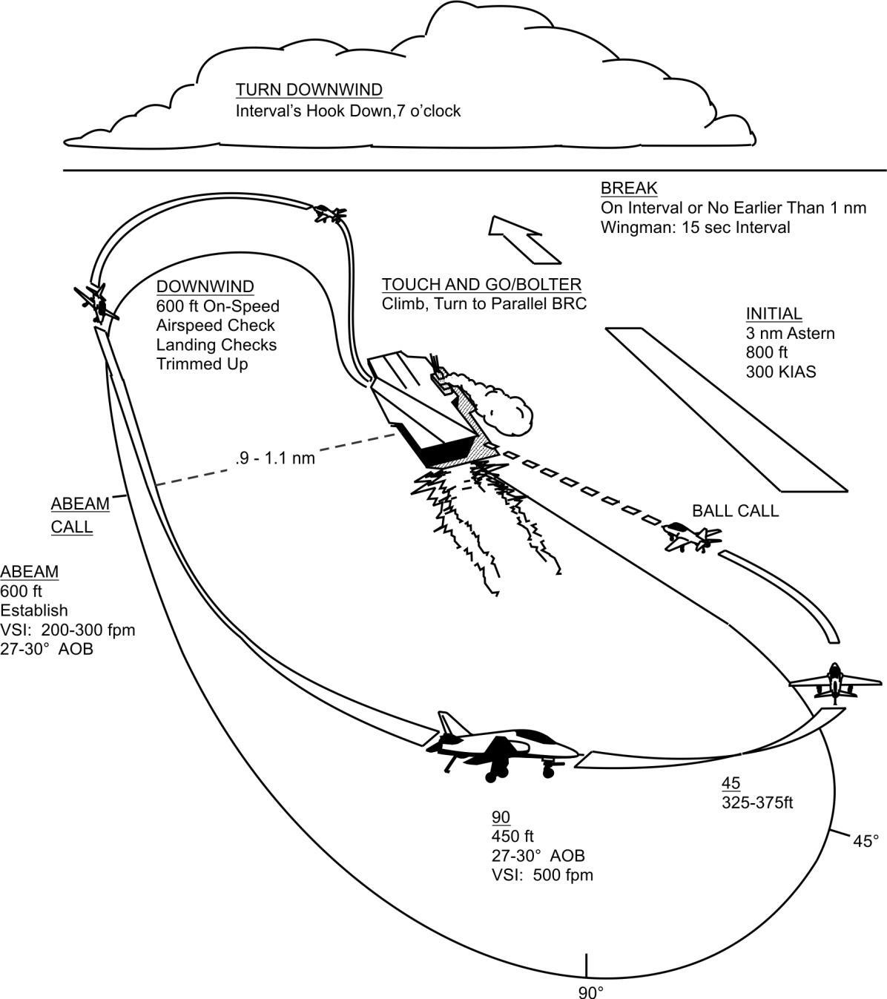
Şekildeki etiketler, paterndeki sırayla:
| Pozisyon | Şekildeki bilgi |
|---|---|
| INITIAL | 3 nm astern · 800 ft · 300 KIAS |
| BREAK | "On Interval or No Earlier Than 1 nm" (aralıkta ya da 1 nm'den önce değil) · "Wingman: 15 sec Interval" (wingman: 15 saniye aralık); etiketin yanında büyük, içi boş bir ok |
| TURN DOWNWIND | "Interval's Hook Down, 7 o'clock" |
| DOWNWIND | 600 ft on-speed · Airspeed Check (hız kontrolü) · Landing Checks · Trimmed Up (trimli) |
| ABEAM | 600 ft · Establish VSI: 200–300 fpm, 27–30° AOB · abeam noktasında "ABEAM CALL" işareti |
| Abeam mesafesi | Abeam noktasından gemiye kesik çizgi: ".9 - 1.1 nm" (0,9–1,1 NM) |
| 90 | 450 ft · 27–30° AOB · VSI: 500 fpm |
| 45 | 325–375 ft |
| BALL CALL | Finalde, iniş alanı hizasındaki uçakta; uçaktan geminin kıçına kesik çizgi |
| TOUCH AND GO/BOLTER | "Climb, Turn to Parallel BRC" (tırman, BRC'ye paralel dön) |
Ayrıca abeam noktasından finale doğru dışta uzanan ince bir eğri üzerinde "90°" (altta) ve "45°" (sağda) işaretleri vardır.
- 2-16.01Figure 2-5 Carrier Landing Pattern
- 2-16.F1[Figure 2-5] INITIAL: 3 nm Astern; 800 ft; 300 KIAS.
- 2-16.F2[Figure 2-5] BREAK: On Interval or No Earlier Than 1 nm; Wingman: 15 sec Interval (a large hollow arrow is drawn next to the label).
- 2-16.F3[Figure 2-5] TURN DOWNWIND: Interval's Hook Down, 7 o'clock.
- 2-16.F4[Figure 2-5] DOWNWIND: 600 ft On-Speed; Airspeed Check; Landing Checks; Trimmed Up.
- 2-16.F5[Figure 2-5] ABEAM: 600 ft; Establish VSI: 200-300 fpm, 27-30° AOB. 'ABEAM CALL' is marked at the abeam position.
- 2-16.F6[Figure 2-5] A dashed line from the abeam position to the ship is labelled '.9 - 1.1 nm'.
- 2-16.F7[Figure 2-5] 90: 450 ft; 27-30° AOB; VSI: 500 fpm.
- 2-16.F8[Figure 2-5] 45: 325-375ft.
- 2-16.F9[Figure 2-5] BALL CALL: marked at the aircraft on final in line with the ship's landing area, with a dashed line from the aircraft to the ship's stern.
- 2-16.F10[Figure 2-5] TOUCH AND GO/BOLTER: Climb, Turn to Parallel BRC.
- 2-16.F11[Figure 2-5] An outer curve running from the abeam position around to the final approach carries tick marks labelled '90°' (bottom) and '45°' (right side).
Şematik ve ölçeksizdir; yalnızca metindeki ve Şekil 2-5'teki değerler kullanılmıştır. Çizimdeki uzaklıklar ve açılar gerçek oranları göstermez.
- 2-15.11(c) Break. When departing holding, the flight will descend outside of point 3 to 800 feet and proceed to the initial 3NM astern of the ship.
- 2-15.12The flight will continue inbound and fly just outboard the starboard side of the ship at 800 feet, paralleling BRC.
- 2-15.13Break altitude is 800 feet, and all breaks will be level.
- 2-15.14The break interval is determined by the last aircraft in the landing pattern.
- 2-15.15A 15-20 second break interval will correspond to a 40- 60 second landing interval.
- 2-15.16No breaks will be performed more than 4 NM ahead of the ship.
- 2-15.17If you are unable to break before 4 NM, you will have to depart and reenter the pattern.
- 2-15.18To accomplish this, maintain 800 feet until 5 NM, then climb to 1,200 feet and execute a left-hand arc back to the initial.
- 2-15.27The biggest difference is that the 180 and Abeam positions are co- located at the carrier.
- 2-15.28Additionally, the downwind heading at the ship is the reciprocal of the BRC vice the landing heading (which will be approximately 10 degrees less than BRC due to the angled deck).
- 2-15.29When established on downwind, individual aircraft will descend to pattern altitude of 600 feet, perform landing checks and closely monitor the abeam distance.
- 2-16.03Continue to fly the ball all the way to touchdown.
- 2-16.04Upon touchdown, simultaneously advance power to MRT, retract speed brakes, and rotate to optimum AOA.
- 2-16.05Maintain wings level and verify a positive rate of climb and maintain optimum AOA.
- 2-16.06Once a positive rate of climb is established and your aircraft is abeam the bow, use a shallow right turn to parallel the BRC.
- 2-16.07Take interval on any aircraft that reaches the bow prior to you, either entering the break or launching off the cat.
- 2-16.08Climb to pattern altitude (600 feet) and turn downwind with proper interval.
- 2-17.02To avoid interfering with aircraft off the cat or in the break, do not cross the ship’s bow.
- 2-17.07To perform a waveoff, simultaneously advance power to MRT, retract speed brakes, maintain landing attitude (not to exceed optimum AOA), level wings, and climb up the angled deck.
- 2-17.09Once you have established a positive rate of climb and you are abeam the bow, use a shallow right turn to parallel the ship’s BRC.
- 2-17.10Climb to 600 feet and turn downwind with proper interval.
- 2-18.10(ii) Initial (3 NM astern): “405, initial”
- 2-18.14(vi) Breaking: “405, breaking at X” where X is the DME
- 2-18.15(vii) Ball call, when rolling into the groove, and the pilot sees the ball: “405, Goshawk Ball, 2.2” where 2.2 is the fuel state
- 2-18.16(viii) Clara when the ball is not visible: “405, Clara”
- 2-18.17During Zip Lip operations, the ball call will not be made.
- 2-18.18The LSO will acknowledge an implied ball call with a momentary flash of the cut lights (same as a “roger ball” call from the LSO) as the aircraft rolls into the groove.
- 2-16.F1[Figure 2-5] INITIAL: 3 nm Astern; 800 ft; 300 KIAS.
- 2-16.F2[Figure 2-5] BREAK: On Interval or No Earlier Than 1 nm; Wingman: 15 sec Interval (a large hollow arrow is drawn next to the label).
- 2-16.F3[Figure 2-5] TURN DOWNWIND: Interval's Hook Down, 7 o'clock.
- 2-16.F4[Figure 2-5] DOWNWIND: 600 ft On-Speed; Airspeed Check; Landing Checks; Trimmed Up.
- 2-16.F5[Figure 2-5] ABEAM: 600 ft; Establish VSI: 200-300 fpm, 27-30° AOB. 'ABEAM CALL' is marked at the abeam position.
- 2-16.F6[Figure 2-5] A dashed line from the abeam position to the ship is labelled '.9 - 1.1 nm'.
- 2-16.F7[Figure 2-5] 90: 450 ft; 27-30° AOB; VSI: 500 fpm.
- 2-16.F8[Figure 2-5] 45: 325-375ft.
- 2-16.F9[Figure 2-5] BALL CALL: marked at the aircraft on final in line with the ship's landing area, with a dashed line from the aircraft to the ship's stern.
- 2-16.F10[Figure 2-5] TOUCH AND GO/BOLTER: Climb, Turn to Parallel BRC.
f. Touch and go / bolter
Touch and go inişleri ile bolter prosedürleri aynıdır:
- Top (ball) teker değene kadar uçulmaya devam edilir.
- Temas anında aynı anda: güç MRT'ye getirilir, speed brake'ler kapatılır (retract) ve optimum AOA'ya rotate edilir.
- Kanatlar düz tutulur, pozitif tırmanma oranı doğrulanır ve optimum AOA korunur.
- Pozitif tırmanma oranı sağlanıp uçak pruva hizasına (abeam the bow) gelince hafif bir sağ dönüşle BRC'ye paralel olunur.
- Pruvaya sizden önce varan her uçağa — ister break'e giriyor ister katapulttan kalkıyor olsun — aralık verilir (take interval).
- Patern irtifasına (600 ft) tırmanılır ve uygun aralıkla downwind'e dönülür.
- 2-16.02(f) Touch and Go/Bolter. The procedures for touch and go landings and bolters are identical.
- 2-16.03Continue to fly the ball all the way to touchdown.
- 2-16.04Upon touchdown, simultaneously advance power to MRT, retract speed brakes, and rotate to optimum AOA.
- 2-16.05Maintain wings level and verify a positive rate of climb and maintain optimum AOA.
- 2-16.06Once a positive rate of climb is established and your aircraft is abeam the bow, use a shallow right turn to parallel the BRC.
- 2-16.07Take interval on any aircraft that reaches the bow prior to you, either entering the break or launching off the cat.
- 2-16.08Climb to pattern altitude (600 feet) and turn downwind with proper interval.
Katapulttan kalkan ya da break'teki uçaklarla çakışmamak için geminin pruvasının önünden geçmeyin.
- 2-17.02To avoid interfering with aircraft off the cat or in the break, do not cross the ship’s bow.
g. Waveoff
Waveoff'lar ZORUNLUDUR (MANDATORY). LSO ya da tower aksini söylemedikçe (ör. "waveoff starboard side") tüm waveoff'lar açılı güverte boyunca (up the angled deck) yapılır. Waveoff işaretleri ister sözlü olsun ister yalnızca lens üzerindeki waveoff ışıklarıyla verilsin, tüm uçaklar bunlara uymak zorundadır. Waveoff'a yol açabilecek durumlar: fouled deck, limit dışı rüzgâr (winds out of limits) ya da uçağın emniyetli iniş için uygun durumda olmaması (not being set up for a safe landing).
- 2-17.03(g) Waveoff. Waveoffs are MANDATORY.
- 2-17.04All waveoffs are made up the angled deck unless otherwise directed by the LSO or the tower (i.e. “waveoff starboard side”).
- 2-17.05All aircraft must comply with waveoff signals, whether they are verbal or solely with the waveoff lights on the lens.
- 2-17.06Waveoffs may result from a fouled deck, winds out of limits, or aircraft not being set up for a safe landing.
Waveoff için aynı anda: güç MRT'ye getirilir, speed brake'ler kapatılır, iniş duruşu (landing attitude) korunur (optimum AOA aşılmadan), kanatlar düzlenir ve açılı güverte boyunca tırmanılır. Pozitif tırmanma oranı doğrulanır ve optimum AOA korunur. Pozitif tırmanma oranı sağlanıp pruva hizasına gelince hafif bir sağ dönüşle geminin BRC'sine paralel olunur. 600 ft'e tırmanılır ve uygun aralıkla downwind'e dönülür.
- 2-17.07To perform a waveoff, simultaneously advance power to MRT, retract speed brakes, maintain landing attitude (not to exceed optimum AOA), level wings, and climb up the angled deck.
- 2-17.08Verify a positive rate of climb and maintain optimum AOA.
- 2-17.09Once you have established a positive rate of climb and you are abeam the bow, use a shallow right turn to parallel the ship’s BRC.
- 2-17.10Climb to 600 feet and turn downwind with proper interval.
Touch and go / bolter ile waveoff karşılaştırması:
| Touch and go / bolter | Waveoff | |
|---|---|---|
| Güç ve speed brake | Temasta aynı anda MRT, speed brake'ler içeri | Aynı anda MRT, speed brake'ler içeri |
| Duruş | Optimum AOA'ya rotate | Landing attitude korunur (optimum AOA aşılmaz) |
| Tırmanma | Kanatlar düz, pozitif tırmanma, optimum AOA | Kanatlar düz, açılı güverte boyunca tırmanma, pozitif tırmanma, optimum AOA |
| Dönüş | Pozitif tırmanma + pruva hizası → hafif sağ dönüş, BRC'ye paralel | Aynı |
| Sonra | 600 ft'e tırman, uygun aralıkla downwind | Aynı |
- 2-16.04Upon touchdown, simultaneously advance power to MRT, retract speed brakes, and rotate to optimum AOA.
- 2-16.05Maintain wings level and verify a positive rate of climb and maintain optimum AOA.
- 2-16.06Once a positive rate of climb is established and your aircraft is abeam the bow, use a shallow right turn to parallel the BRC.
- 2-16.07Take interval on any aircraft that reaches the bow prior to you, either entering the break or launching off the cat.
- 2-16.08Climb to pattern altitude (600 feet) and turn downwind with proper interval.
- 2-17.07To perform a waveoff, simultaneously advance power to MRT, retract speed brakes, maintain landing attitude (not to exceed optimum AOA), level wings, and climb up the angled deck.
- 2-17.08Verify a positive rate of climb and maintain optimum AOA.
- 2-17.09Once you have established a positive rate of climb and you are abeam the bow, use a shallow right turn to parallel the ship’s BRC.
- 2-17.10Climb to 600 feet and turn downwind with proper interval.
h. Delta prosedürleri
Paterndeyken tower signal Delta verirse patern irtifası korunur ve aynı iniş paterni uçulur. Patern on-speed, iniş konfigürasyonunda ve speed brake'ler kapalıyken uçulur (Delta Easy). Delta clean ise 200 KIAS ve atanan irtifa demektir. Delta paterninden çıkış izni (cleared) verildiğinde 180 pozisyonuna ilk varan uçak normal yaklaşmaya devam eder.
- 2-17.11(h) Delta Procedures. If a signal Delta is given by the tower while in the pattern, maintain pattern altitude and fly the same landing pattern.
- 2-17.12Fly the pattern on-speed in the landing configuration with speed brakes retracted (Delta Easy).
- 2-17.13Delta clean equals 200 KIAS and altitude as assigned.
- 2-17.14When cleared from the Delta pattern, the first aircraft to reach the 180 position resumes the normal approach.
i. Gemiye durdurmalı iniş (Carrier Arrestment)
Yaklaşma tam olarak bir touch and go gibi yapılır; top teker değene kadar uçulur. Uçak temas edince güç MRT'ye getirilir ve speed brake'ler kapatılır. Durdurmalı inişi önceden beklemeyin (do not anticipate an arrested landing). Sonraki sıra:
- Uçak tamamen durana ve saat 1–2 yönündeki yellow shirt güç azaltma (power back) işareti verene kadar MRT korunur.
- Yellow shirt fren bırakma (brake release) ve geri çekilme (pull-back) işareti verir.
- Ardından stop işareti ve hook up işareti gelir.
Pull-back, telin kancadan kurtulmasını sağlar. Pilot bu sırada fren yaparsa uçak geriye yatar ve kuyruk bölümü hasar görebilir. Yellow shirt'ün talimatlarına / komutlarına uyun.
- 2-17.15(i) Carrier Arrestment. Execute the approach exactly as a touch and go, flying the ball all the way to touchdown.
- 2-17.16When the aircraft touches down, advance the power to MRT and retract the speed brakes.
- 2-17.17Do not anticipate an arrested landing.
- 2-17.18Maintain MRT until the aircraft comes to a complete stop and the yellow shirt located at the 1 to 2 o’clock position signals for power back.
- 2-17.19The yellow shirt will then signal for brake release and a pull-back, followed by a stop signal and hook up signal.
- 2-17.20The pull- back allows for the wire to clear the hook.
- 2-17.21If the pilot applies the brakes during the evolution, the aircraft will tilt back, potentially damaging the tail section.
- 2-17.22Follow the yellow shirt’s instructions/commands.
j. Haberleşme
Case I recovery'lerde Marshal ilk check-in'de recovery Case'ini, güncel BRC'yi ve beklenen "Charlie" zamanını verir. Charlie time, kalkış (launch) operasyonlarının bittiği ve recovery operasyonlarının başladığı zamandır. Ayrıca Marshal, gemi görüldüğünde — normalde 10 NM civarında — kendisine bildirilmesini ister. Örnek konuşmalar:
- 2-17.23(j) Communications. For Case I recoveries, Marshal will provide the case recovery, current BRC and expected “Charlie” time upon initial check in.
- 2-17.24Charlie time is the time at which launch operations are complete and recovery operations begin; additionally, Marshal will request notification when the carrier is in sight, normally around 10 NM.
- 2-17.25Sample communications are as follows:
| Sıra | Konuşan | Çağrı |
|---|---|---|
| i | 405 | "Marshal, 405, 250 for 42, Angels 9, State 2.4" |
| ii | Marshal | "405, Case I. BRC is 015, Report, see me" |
| iii | 405 | "405, Wilco" |
| 10 NM'de ya da gemi görülünce: | ||
| iv | 405 | "405, See you at 10" |
| v | Marshal | "405, Switch Tower" |
- 2-17.26(i) 405 - “Marshal, 405, 250 for 42, Angels 9, State 2.4”
- 2-17.27(ii) Marshal - “405, Case I. BRC is 015, Report, see me”
- 2-18.01(iii) 405 - “405, Wilco”
- 2-18.02At 10 NM or when visual with the ship:
- 2-18.03(iv) 405 - “405, See you at 10”
- 2-18.04(v) Marshal - “405, Switch Tower”
(j) metni Marshal'ın ilk check-in'de beklenen "Charlie" zamanını vereceğini söyler ("expected 'Charlie' time upon initial check in"). Hemen ardından gelen örnekte ise Marshal'ın çağrısında ("405, Case I. BRC is 015, Report, see me") Charlie time yoktur; s. 2-12'deki örnekte vardır ("Expected Charlie time 22").
- 2-17.23(j) Communications. For Case I recoveries, Marshal will provide the case recovery, current BRC and expected “Charlie” time upon initial check in.
- 2-17.27(ii) Marshal - “405, Case I. BRC is 015, Report, see me”
- 2-12.14BRC is 015, Expected Charlie time 22.
Tower frekansı ve Zip Lip
Tower frekansına geçildikten sonra frekans yalnızca dinlenir. Case I operasyonlarının çoğu "Zip Lip" yapılır: paternde telsiz çağrıları ne gereklidir ne de istenir. Ancak düşük görüş durumlarında şu çağrılar yapılır:
- 2-18.05Once switched to Tower frequency, just monitor the frequency.
- 2-18.06The majority of Case I operations are conducted “Zip Lip.
- 2-18.07This means that radio calls in the pattern are neither required nor desired.
- 2-18.08However, in low-visibility situations, the following calls will be made:
| Durum | Çağrı |
|---|---|
| Overhead holding'den initial'e alçalırken | "405, commencing" |
| Initial (3 NM astern) | "405, initial" |
| Spin paternine girerken (gerekiyorsa) | "405, spinning" |
| Spin yaparken initial'den 90° sonra | "405, spin 90" |
| Port holding'e yeniden girmek için iniş paterninden ayrılırken | "405, Departing _____ NM, upwind" |
| Break yaparken | "405, breaking at X" (X = DME) |
| Ball call: groove'a girerken pilot topu görünce | "405, Goshawk Ball, 2.2" (2.2 = yakıt durumu) |
| Clara: top görünmüyorsa | "405, Clara" |
- 2-18.09(i) Descending out of overhead holding to the initial: “405, commencing”
- 2-18.10(ii) Initial (3 NM astern): “405, initial”
- 2-18.11(iii) Entering the spin pattern (when applicable): “405, spinning”
- 2-18.12(iv) 90 degrees from initial when spinning: “405, spin 90”
- 2-18.13(v) Departing the landing pattern to re-enter port holding: “405, Departing _____ NM, upwind”
- 2-18.14(vi) Breaking: “405, breaking at X” where X is the DME
- 2-18.15(vii) Ball call, when rolling into the groove, and the pilot sees the ball: “405, Goshawk Ball, 2.2” where 2.2 is the fuel state
- 2-18.16(viii) Clara when the ball is not visible: “405, Clara”
Zip Lip operasyonlarında ball call yapılmaz. Uçak groove'a girerken LSO, söylenmemiş (örtük, implied) ball call'u cut ışıklarını kısa süre yakarak onaylar; bu, LSO'nun "roger ball" çağrısıyla aynıdır. Top görünmüyorsa "clara" çağrısı yapılır. Zip Lip operasyonları sırasında uçuş emniyetini ilgilendiren her durumda, her an telsiz çağrısı yapılır.
- 2-18.17During Zip Lip operations, the ball call will not be made.
- 2-18.18The LSO will acknowledge an implied ball call with a momentary flash of the cut lights (same as a “roger ball” call from the LSO) as the aircraft rolls into the groove.
- 2-18.19If the ball is not visible, a “clara” call will be made.
- 2-18.20At any time during Zip Lip operations, radio calls will be made for any safety of flight situations.
Başka bir uçak toptayken (on the ball), uçuş emniyeti gerektirmedikçe asla telsizde konuşmayın.
- 2-18.22Never transmit on the radio when another aircraft is on the ball, unless required for safety of flight.
Bölüm soruları
0 / 51Case I recovery hangi koşulda mümkün olan en geniş ölçüde kullanılır?
"Case I recoveries are used to the maximum extent possible, provided the weather is better than 3,000/5."
Kaynak: s. 2-13 (2-13.02)
Case I'e dönen uçaklar holding irtifalarına en geç nerede yerleşmiş olmalıdır?
Şekil 2-3'teki giriş hatları da "10 NM Establish Pattern Altitude" etiketlidir.
Kaynak: s. 2-13 (2-13.05, 2-13.F5)
Overhead holding paternine nasıl girilir?
"Proceed to overhead holding, and enter the pattern tangentially (Figure 2-3)."
Kaynak: s. 2-13 (2-13.06, 2-13.F5)
Overhead holding paterni için hangisi doğrudur?
Point 2, 3 ve 4 sırayla 90°'lik aralıklarla gelir.
Kaynak: s. 2-13 (2-13.08, 2-13.09)
Stack'teki tüm uçaklar hangi sınırlar içinde kalmalıdır?
"...all aircraft must remain within 5 NM and no lower than 2,000 feet AGL."
Kaynak: s. 2-13 (2-13.10)
Stack'teki filo holding irtifaları nasıl düzenlenir?
Her filonun stack'te atanmış bir holding irtifası vardır.
Kaynak: s. 2-14 (2-14.02, 2-14.03)
Holding'e yerleştikten sonra patern içinde tırmanma nerede yapılır?
Alçalmalar Point 3 ile 1 arasında yapılır. Şekil 2-4: "Pattern Climb Area" ve "Pattern Descent Area".
Kaynak: s. 2-14 (2-14.04, 2-14.05, 2-14.06, 2-14.F2)
Son uçak kalkarken ya da Tower'dan "Signal Charlie" alındığında kol holding'den hangi heading ile ayrılır?
"...the flight will depart the holding pattern on a heading of approximately 210 degrees relative to BRC."
Kaynak: s. 2-14 (2-14.08)
Zip Lip koşullarında Boss hangi çağrıyı yapmaz?
Bu yüzden holding'den ne zaman ayrılacağına ve break'e overhead'deki uçaklar kendileri karar verir.
Kaynak: s. 2-15 (2-15.01, 2-15.02)
"Breaking the deck"in amacı nedir?
Recovery operasyonlarının verimini en üst düzeye çıkarmak için ustalaşılması gereken bir beceridir.
Kaynak: s. 2-15 (2-15.03, 2-15.04)
Aynı irtifada toplam üç kol varsa aralarında kaç derece olmalıdır?
2 kol 180°, 3 kol 120°, 4 kol 90°; böylece Point 1 (Mother) düzenli aralıklarla geçilir.
Kaynak: s. 2-15 (2-15.05, 2-15.06, 2-15.07, 2-15.08, 2-15.09)
Break için holding'den hangi noktada ayrılınır?
Kol Point 3'ün dışında 800 ft'e alçalır ve initial'e gider. Şekil 2-4'te ayrılış hattı da 3 noktasından başlar.
Kaynak: s. 2-15, 2-14 (2-15.10, 2-15.11, 2-14.F3)
Initial nerededir ve hangi irtifada uçulur?
Şekil 2-5'e göre initial: 3 nm astern, 800 ft, 300 KIAS.
Kaynak: s. 2-15, 2-16 (2-15.11, 2-16.F1)
Initial'den sonra kol nereden uçar?
Şekil 2-4'te de içeri uçuş hattı sancak tarafından, 1 noktasından geçerek BRC'ye paralel uzanır.
Kaynak: s. 2-15, 2-14 (2-15.12, 2-14.F3)
Break için hangisi doğrudur?
"Break altitude is 800 feet, and all breaks will be level. The break interval is determined by the last aircraft in the landing pattern."
Kaynak: s. 2-15 (2-15.13, 2-15.14)
15–20 saniyelik break aralığı kaç saniyelik iniş aralığına karşılık gelir?
"A 15-20 second break interval will correspond to a 40-60 second landing interval."
Kaynak: s. 2-15 (2-15.15)
Geminin en fazla ne kadar önünde break yapılabilir?
"No breaks will be performed more than 4 NM ahead of the ship."
Kaynak: s. 2-15 (2-15.16)
4 NM'den önce break yapamayan uçak ne yapar?
"...maintain 800 feet until 5 NM, then climb to 1,200 feet and execute a left-hand arc back to the initial. Tower must be notified of your intentions."
Kaynak: s. 2-15 (2-15.17, 2-15.18, 2-15.19)
Kol hangi durumda "spin it" yapmak zorundadır?
"If the pattern is full (more than six aircraft in the pattern) when the flight arrives at the fantail..."
Kaynak: s. 2-15 (2-15.20)
Spin nasıl yapılır?
270° dönüş "aft of abeam" noktasına getirir; oradan break için içeri gidilir.
Kaynak: s. 2-15 (2-15.21, 2-15.22)
Break'te önceliği kim taşır?
"Aircraft reentering the break from the spin pattern have priority in the break."
Kaynak: s. 2-15 (2-15.23)
Upwind aralığı nasıl belirlenir?
Ancak initial'e yeniden girerken break için gelen diğer uçaklarla çakışmamaya dikkat edilmelidir.
Kaynak: s. 2-15 (2-15.24, 2-15.25)
Gemi iniş paterninin saha paterninden en büyük farkı nedir?
"The biggest difference is that the 180 and Abeam positions are co-located at the carrier."
Kaynak: s. 2-15 (2-15.26, 2-15.27)
Gemide downwind heading'i nedir?
Landing heading, açılı güverte nedeniyle BRC'den yaklaşık 10° azdır; downwind ise ona göre değil BRC'ye göre uçulur.
Kaynak: s. 2-15 (2-15.28)
Downwind'e yerleşince her uçak ne yapar?
"...descend to pattern altitude of 600 feet, perform landing checks and closely monitor the abeam distance."
Kaynak: s. 2-15 (2-15.29)
Şekil 2-5'e göre abeam mesafesi nedir?
Şekilde abeam noktasından gemiye çizilen kesik çizgi ".9 - 1.1 nm" etiketlidir.
Kaynak: s. 2-16 (2-16.F6)
Şekil 2-5'e göre abeam pozisyonunda hangi değerler verilir?
Abeam'de "ABEAM CALL" de işaretlidir.
Kaynak: s. 2-16 (2-16.F5)
Şekil 2-5'e göre 90 pozisyonunda irtifa nedir?
90: 450 ft, 27–30° AOB, VSI 500 fpm.
Kaynak: s. 2-16 (2-16.F7)
Şekil 2-5'e göre 45 pozisyonunda irtifa nedir?
45: 325–375 ft.
Kaynak: s. 2-16 (2-16.F8)
Şekil 2-5'e göre break için hangi kural yazılıdır?
Metindeki sınır ayrıca: geminin 4 NM'den ilerisinde break yapılmaz.
Kaynak: s. 2-16 (2-16.F2)
Touch and go / bolter'da temas anında aynı anda ne yapılır?
Touch and go ve bolter prosedürleri aynıdır; top teker değene kadar uçulur.
Kaynak: s. 2-16 (2-16.02, 2-16.03, 2-16.04)
Touch and go / bolter sonrası BRC'ye paralel dönüş ne zaman ve nasıl yapılır?
Sonra pruvaya önce varan uçağa aralık verilir, 600 ft'e tırmanılır ve uygun aralıkla downwind'e dönülür.
Kaynak: s. 2-16 (2-16.05, 2-16.06, 2-16.07, 2-16.08)
CAUTION: Katapulttan kalkan ya da break'teki uçaklarla çakışmamak için ne yapılmaz?
"To avoid interfering with aircraft off the cat or in the break, do not cross the ship's bow."
Kaynak: s. 2-17 (2-17.02)
Waveoff'lar normalde hangi yönde yapılır?
Waveoff'lar ZORUNLUDUR; ör. "waveoff starboard side" talimatı verilebilir.
Kaynak: s. 2-17 (2-17.03, 2-17.04)
Aşağıdakilerden hangisi belgede waveoff sebebi olarak sayılmaz?
Paternin dolu olması (altıdan fazla uçak) spin gerektirir, waveoff değil.
Kaynak: s. 2-17, 2-15 (2-17.06, 2-15.20)
Waveoff'ta uçağın duruşu nasıl olmalıdır?
Aynı anda MRT, speed brake'ler içeri, landing attitude, kanatlar düz ve açılı güverte boyunca tırmanma.
Kaynak: s. 2-17 (2-17.07, 2-17.08)
Paterndeyken tower signal Delta verirse (Delta Easy) ne yapılır?
200 KIAS ve atanan irtifa "Delta clean"dir.
Kaynak: s. 2-17 (2-17.11, 2-17.12)
"Delta clean" ne demektir?
"Delta clean equals 200 KIAS and altitude as assigned."
Kaynak: s. 2-17 (2-17.13)
Durdurmalı inişte (arrestment) temas anında ne yapılır?
Yaklaşma tam bir touch and go gibi yapılır, top teker değene kadar uçulur.
Kaynak: s. 2-17 (2-17.15, 2-17.16, 2-17.17)
Durdurmalı inişte MRT ne zamana kadar korunur?
"Maintain MRT until the aircraft comes to a complete stop and the yellow shirt located at the 1 to 2 o'clock position signals for power back."
Kaynak: s. 2-17 (2-17.18)
Power back'ten sonra yellow shirt'ün işaret sırası nedir?
Pull-back, telin kancadan kurtulmasını sağlar.
Kaynak: s. 2-17 (2-17.19, 2-17.20)
Pull-back sırasında pilot fren yaparsa ne olur?
Bu yüzden yellow shirt'ün talimatlarına / komutlarına uyulur.
Kaynak: s. 2-17 (2-17.21, 2-17.22)
"Charlie time" nedir?
Case I'de Marshal ilk check-in'de Case, güncel BRC ve beklenen Charlie time'ı verir.
Kaynak: s. 2-17 (2-17.23, 2-17.24)
Tower frekansına geçtikten sonra Zip Lip'te ne yapılır?
Düşük görüşte ise belirli çağrılar yapılır.
Kaynak: s. 2-18 (2-18.05, 2-18.06, 2-18.07)
Düşük görüşte, overhead holding'den initial'e alçalırken hangi çağrı yapılır?
Initial'de (3 NM astern) "405, initial" çağrısı yapılır.
Kaynak: s. 2-18 (2-18.08, 2-18.09, 2-18.10)
"405, breaking at X" çağrısında X nedir?
"Breaking: '405, breaking at X' where X is the DME".
Kaynak: s. 2-18 (2-18.14)
"405, Goshawk Ball, 2.2" çağrısında 2.2 neyi ifade eder?
Ball call, groove'a girerken pilot topu görünce yapılır.
Kaynak: s. 2-18 (2-18.15)
Zip Lip operasyonlarında ball call nasıl işler?
Cut ışıklarının kısa yanması, LSO'nun "roger ball" çağrısıyla aynıdır.
Kaynak: s. 2-18 (2-18.17, 2-18.18)
Top görünmüyorsa hangi çağrı yapılır?
"Clara when the ball is not visible: '405, Clara'"; Zip Lip'te de yapılır.
Kaynak: s. 2-18 (2-18.16, 2-18.19)
Zip Lip operasyonlarında hangi durumda her zaman telsiz çağrısı yapılır?
"At any time during Zip Lip operations, radio calls will be made for any safety of flight situations."
Kaynak: s. 2-18 (2-18.20)
NOTE: Başka bir uçak toptayken telsiz kullanımı için kural nedir?
"Never transmit on the radio when another aircraft is on the ball, unless required for safety of flight."
Kaynak: s. 2-18 (2-18.22)
204.2Case II recovery
Case II ne zaman kullanılır?
Case II recovery, hava koşulları uçuşun VFR paternine alçalırken IMC'ye girebileceği türden olduğunda kullanılır. Asgari hava şartları 1.000 ft tavan (ceiling) ve 5 NM görüştür. Case II recovery'lerde kol (formation) uçuşları iki uçakla sınırlıdır; ikiden büyük kollar daha küçük uçuşlara ayrılmak zorundadır.
- 2-19.02Case II recoveries will be used when weather conditions are such that a flight may encounter IMC during the descent to the VFR pattern.
- 2-19.03The minimum weather requirements are 1,000 feet ceiling and 5 NM visibility.
- 2-19.04During Case II recoveries, formation flights are limited to two aircraft.
- 2-19.05Formations larger than two aircraft will have to be separated into smaller flights.
Case II sırasında 10 NM dışında Case III, 10 NM içinde ya da "see you" bildirildikten sonra Case I prosedürleri kullanılır. Bu yaklaşma gemi görülene kadar uçulur; gemi görüldüğü anda uçuş Tower ile temas kurar ve Case I'deymiş gibi içeri (inbound) devam eder. Uçuş gemiyi 5 NM'ye kadar göremezse bolter/waveoff paternine vektörlenir ve Case III recovery için talimat verilir.
- 2-19.06During Case II, Case III procedures are used outside 10 NM and Case I procedures are used inside 10 NM, or after reporting “see you.
- 2-19.07This approach will be flown until the ship is in sight, at which point, the flight will contact tower and proceed inbound as if Case I.
- 2-19.08If the flight does not see the ship by 5 NM, the aircraft will be vectored into the bolter/waveoff pattern and instructions will be given for a Case III recovery.
(a) Marshal holding
Marshal bir Case II recovery yönlendirirse uçuş Case II/III marshal paterninin holding fix'ine gider. İdeal olarak holding fix BRC'ye göre 180 radyali üzerindedir; ancak hava ve hava sahası koşulları buna izin vermeyebilir. Holding radyali genellikle 180 radyalinin 30° içinde olur.
- 2-19.09(a) Marshal Holding. If Marshal directs a Case II recovery, the flight will proceed to Case II/III marshal pattern holding fix.
- 2-19.10Ideally, the holding fix will be on the 180 radial relative to BRC.
- 2-19.11Weather and airspace considerations may not allow for this.
- 2-19.12Generally, the holding radial will be within 30 degrees of the 180 radial.
Holding fix mesafesi = angels + 15. Uçak atanan radyalde, her 1.000 ft irtifa için 1 NM artı 15 mesafede bekler. Başka bir deyişle holding fix'in mesafesi, angels cinsinden atanan holding irtifasına 15 eklenerek bulunur. Örneğin 220 radyalinde, angels 8'de beklemeniz istendiyse fix şöyle bulunur:
| Adım | Hesap / sonuç |
|---|---|
| Mesafe | Distance = Angels + 15 = 8 + 15 = 23 |
| Sonuç | 220 radyalinde, 23 DME'de, 8.000 ft'te bekle |
- 2-19.13Aircraft will hold on the assigned radial at a distance equal to 1 NM for every 1,000 feet of altitude plus 15.
- 2-19.14In other words, the distance of the holding fix is determined by adding 15 to the assigned holding altitude in angels.
- 2-19.15For example, if instructed to hold on the 220 radial at angels 8, the fix would be determined as follows:
- 2-19.16(i) Distance = Angels + 15 = 8 +15 = 23
- 2-19.17Therefore, hold on the 220 radial at 23 DME at 8,000 feet.
Şekil 2-6 Case II/III Marshal paternini gösterir. Turboprop ve jet uçaklarına atanabilecek en düşük irtifa 6.000 ft'tir.
- 2-19.18Figure 2-6 illustrates the Case II/III Marshal pattern.
- 2-19.19The lowest altitude for assignment is 6,000 feet for turboprop and jet aircraft.
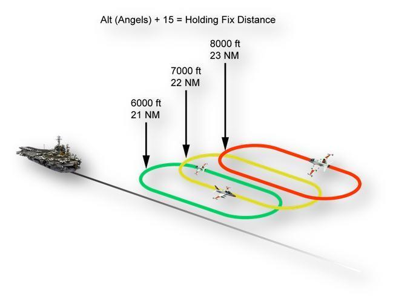
Şeklin üstündeki formül: "Alt (Angels) + 15 = Holding Fix Distance" (angels cinsinden irtifa + 15 = holding fix mesafesi). Gemiden uzanan bir çizgi boyunca, birbirine binen üç yarış pisti (racetrack) holding paterni çizilmiştir; irtifa arttıkça patern gemiden biraz daha uzaktadır:
- Yeşil patern: 6000 ft — 21 NM
- Sarı patern: 7000 ft — 22 NM
- Kırmızı patern: 8000 ft — 23 NM
Her paternin gemiye en yakın ucunu dikey bir ok gösterir; paternlerde T-45 uçakları çizilidir.
- 2-20.01Figure 2-6 Case II/III Marshal Holding
- 2-20.F1[Figure 2-6] Formula at the top of the figure: "Alt (Angels) + 15 = Holding Fix Distance".
- 2-20.F2[Figure 2-6] Green holding pattern labelled "6000 ft / 21 NM".
- 2-20.F3[Figure 2-6] Yellow holding pattern labelled "7000 ft / 22 NM".
- 2-20.F4[Figure 2-6] Red holding pattern labelled "8000 ft / 23 NM".
- 2-20.F5[Figure 2-6] Drawing: ship at the left with a line extending away from it; three overlapping racetrack holding patterns along this line, each higher pattern slightly farther from the ship; a vertical arrow points to the end of each pattern nearest the ship; T-45 aircraft drawn in the patterns.
Holding paterni ve zamanlama
Holding paterni 6 dakikalık, sola dönüşlü (left-hand) bir paterndir. Aksi brief edilmedikçe max conserve fuel flow ya da NATOPS holding airspeed ile uçulur. Paternde normalde 2 dakikalık dönüşler ve 1 dakikalık bacaklar (legs) kullanılır. Uçaklar Marshal "stack"'ine 10 NM kala atanan holding irtifalarında yerleşmiş (established) olmalıdır. Stack'teki uçaklar arasında 1.000 ft dikey ayrım vardır.
- 2-20.02The holding pattern is a six-minute left-hand pattern. Unless otherwise briefed, the pattern will be flown at max conserve fuel flow or NATOPS holding airspeed.
- 2-20.03Two- minute turns and one-minute legs are normally used for the pattern.
- 2-20.04Aircraft must be established at assigned holding altitudes by 10 NM from the Marshal “stack.
- 2-20.05Aircraft in the stack will be separated by 1,000 feet vertically.
Fix'e atanan yaklaşma zamanında (push time) varabilmek için holding paterni sıkı yönetilmelidir. Örneğin holding'e 16 dakikasında varılmışsa ve push time 27 ise bir 6 dakikalık ve bir 5 dakikalık patern kullanılabilir. Ancak patern nasıl yönetilirse yönetilsin uçak holding fix'e hızında (250 kts) ve yaklaşmaya başlamaya hazır olarak, Expected Approach Time (EAT) ± 10 saniye içinde varmalıdır. Bunu yapamayacaksanız, iniş aralığında zamanlama düzeltmesi yapılabilsin diye Marshal'a bildirin.
- 2-20.06Strict management of the holding pattern is required to arrive at the fix, at the assigned approach time (push time).
- 2-20.07For example, arriving in holding at time 16 with a push time of 27, one 6-minute pattern and one 5-minute pattern could be used.
- 2-20.08But regardless of how the pattern is managed, aircraft must arrive at the holding fix on airspeed (250 kts) and ready to commence the approach at the Expected Approach Time (EAT) plus or minus 10 seconds.
- 2-20.09If unable to do this, notify Marshal so that timing adjustments to the landing interval can be made.
Kural (s. 2-19): atanan radyalde, her 1.000 ft irtifa için 1 NM artı 15. Turboprop ve jet için en düşük atanabilir irtifa 6.000 ft; stack'te 1.000 ft dikey ayrım (s. 2-20). Emergency marshal mesafesi de angels + 15'tir, ancak radyali beklenen final bearing'e göre 150°'dir. Çizim şematiktir, angels 20'ye kadar gösterir.
- 2-19.13Aircraft will hold on the assigned radial at a distance equal to 1 NM for every 1,000 feet of altitude plus 15.
- 2-19.14In other words, the distance of the holding fix is determined by adding 15 to the assigned holding altitude in angels.
- 2-19.19The lowest altitude for assignment is 6,000 feet for turboprop and jet aircraft.
- 2-20.05Aircraft in the stack will be separated by 1,000 feet vertically.
- 2-20.F1[Figure 2-6] Formula at the top of the figure: "Alt (Angels) + 15 = Holding Fix Distance".
- 2-20.F2[Figure 2-6] Green holding pattern labelled "6000 ft / 21 NM".
- 2-20.F3[Figure 2-6] Yellow holding pattern labelled "7000 ft / 22 NM".
- 2-20.F4[Figure 2-6] Red holding pattern labelled "8000 ft / 23 NM".
(b) Emergency marshal fix'leri
Acil bir durumda sabit kanatlı uçaklara, beklenen final bearing'e göre 150° (relative) bir emergency marshal radyali verilir; mesafe her 1.000 ft irtifa için 1 mil artı 15 mildir (angels + 15). Normal Marshal paterninde olduğu gibi turboprop ve jet uçakları için atanabilecek en düşük irtifa 6.000 ft'tir. Holding sırası önce jetler, sonra turboproplardır. Acil durum holding paterni sağa dönüşlü (right-hand), 6 dakikalık racetrack paternidir.
- 2-20.10(b) Emergency Marshal Fixes. In the event of an emergency, fixed wing aircraft are issued an emergency marshal radial 150-degree relative to the expected final bearing at a distance of 1 mile for every 1,000 feet of altitude plus 15 miles (angels +15).
- 2-20.11As with the normal Marshal pattern, the lowest altitude for assignment is 6,000 feet for turboprop and jet aircraft.
- 2-20.12The holding sequence is jets, then turboprops.
- 2-20.13The emergency holding pattern is a right-hand, 6-minute racetrack patterns.
| Normal marshal | Emergency marshal | |
|---|---|---|
| Radyal | İdeal: BRC'ye göre 180; genellikle 180'in 30° içinde | Beklenen final bearing'e göre 150° |
| Mesafe | angels + 15 | angels + 15 |
| En düşük irtifa (turboprop ve jet) | 6.000 ft | 6.000 ft |
| Patern | 6 dakika, sola dönüşlü | 6 dakika, sağa dönüşlü racetrack |
| Holding sırası | belirtilmemiş | önce jetler, sonra turboproplar |
- 2-19.10Ideally, the holding fix will be on the 180 radial relative to BRC.
- 2-19.12Generally, the holding radial will be within 30 degrees of the 180 radial.
- 2-19.13Aircraft will hold on the assigned radial at a distance equal to 1 NM for every 1,000 feet of altitude plus 15.
- 2-19.19The lowest altitude for assignment is 6,000 feet for turboprop and jet aircraft.
- 2-20.02The holding pattern is a six-minute left-hand pattern. Unless otherwise briefed, the pattern will be flown at max conserve fuel flow or NATOPS holding airspeed.
- 2-20.10(b) Emergency Marshal Fixes. In the event of an emergency, fixed wing aircraft are issued an emergency marshal radial 150-degree relative to the expected final bearing at a distance of 1 mile for every 1,000 feet of altitude plus 15 miles (angels +15).
- 2-20.11As with the normal Marshal pattern, the lowest altitude for assignment is 6,000 feet for turboprop and jet aircraft.
- 2-20.12The holding sequence is jets, then turboprops.
- 2-20.13The emergency holding pattern is a right-hand, 6-minute racetrack patterns.
(c) Yaklaşma (Approach)
Uçakların push time'ları normalde 1 dakika arayla verilir. Yaklaşmaya başlarken uçak 250 KIAS'te dakikada 4.000 ft alçalma oranı kurar. 5.000 ft'te (platform) alçalma oranı dakikada 2.000 ft'e düşürülür ve bu oran 1.200 ft level-off irtifasına ulaşılana kadar korunur.
- 2-21.01(c) Approach. Aircraft push times will normally be separated by one minute.
- 2-21.02Upon commencing the approach, aircraft will establish a 4,000 feet per minute rate of descent at 250 KIAS.
- 2-21.03At 5,000 feet (platform), the rate of descent will be reduced to 2,000 feet per minute.
- 2-21.04This will be maintained until reaching the level-off altitude of 1,200 feet.
Uçak 1.200 ft'te içeri devam eder ve gemi görüldüğünde "see me" bildirir (çağrının adı için aşağıdaki kaynak notuna bakın). Marshal, normal bir Case I recovery için uçuşu Tower frekansına geçirir. Gemi 10 NM'ye kadar görülmezse 800 ft'e alçalmaya izin verilir. Gemi 5 NM'de hâlâ görülmüyorsa ek talimat için Marshal'a bildirin; aletli yaklaşma için bolter/waveoff paternine vektör verilir. Case II yaklaşma profili Şekil 2-7'dedir.
- 2-21.05Aircraft will proceed inbound at 1,200 feet and report a “see me” when the ship is in sight.
- 2-21.06Marshal will switch the flight to Tower frequency for a normal Case I recovery.
- 2-21.07If the ship is not in sight by 10 NM, a descent to 800 feet is authorized.
- 2-21.08If the ship is still not in sight at 5 NM, notify Marshal for further instructions and vectors into the bolter/waveoff pattern for an instrument approach.
- 2-21.09The Case II approach profile is shown in Figure 2-7.
| Nokta | Case II'de ne yapılır? |
|---|---|
| Push | 250 KIAS, dakikada 4.000 ft alçalma |
| Platform (5.000 ft) | Alçalma oranı dakikada 2.000 ft'e düşer |
| 1.200 ft | Level-off; 1.200 ft'te içeri devam |
| Gemi görülünce | Çağrı yapılır; Marshal uçuşu Tower'a geçirir; normal Case I |
| 10 NM'de gemi görülmüyorsa | 800 ft'e alçalmaya izin var |
| 5 NM'de gemi hâlâ görülmüyorsa | Marshal'a bildir; aletli yaklaşma için bolter/waveoff paternine vektör |
- 2-21.02Upon commencing the approach, aircraft will establish a 4,000 feet per minute rate of descent at 250 KIAS.
- 2-21.03At 5,000 feet (platform), the rate of descent will be reduced to 2,000 feet per minute.
- 2-21.04This will be maintained until reaching the level-off altitude of 1,200 feet.
- 2-21.05Aircraft will proceed inbound at 1,200 feet and report a “see me” when the ship is in sight.
- 2-21.06Marshal will switch the flight to Tower frequency for a normal Case I recovery.
- 2-21.07If the ship is not in sight by 10 NM, a descent to 800 feet is authorized.
- 2-21.08If the ship is still not in sight at 5 NM, notify Marshal for further instructions and vectors into the bolter/waveoff pattern for an instrument approach.
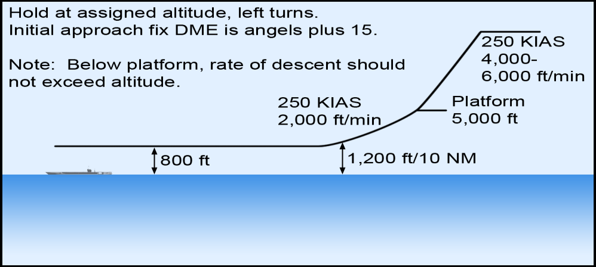
Şekildeki notlar:
- "Hold at assigned altitude, left turns." — Atanan irtifada, sola dönüşlerle bekle.
- "Initial approach fix DME is angels plus 15." — İlk yaklaşma fix'inin DME'si angels artı 15'tir.
- "Note: Below platform, rate of descent should not exceed altitude." — Not: Platformun altında alçalma oranı irtifayı aşmamalıdır.
Profil (holding'den gemiye doğru): 250 KIAS, 4.000–6.000 ft/min alçalma → Platform 5.000 ft → 250 KIAS, 2.000 ft/min → 1.200 ft/10 NM işaretinde level-off → gemiye daha yakın bölümde 800 ft seviyesi.
- 2-21.10Figure 2-7 Case II Approach Profile
- 2-21.F1[Figure 2-7] "Hold at assigned altitude, left turns."
- 2-21.F2[Figure 2-7] "Initial approach fix DME is angels plus 15."
- 2-21.F3[Figure 2-7] "Note: Below platform, rate of descent should not exceed altitude."
- 2-21.F4[Figure 2-7] First descent segment from the holding altitude labelled "250 KIAS 4,000-6,000 ft/min".
- 2-21.F5[Figure 2-7] "Platform 5,000 ft"; descent segment below platform labelled "250 KIAS 2,000 ft/min".
- 2-21.F6[Figure 2-7] Level-off point marked "1,200 ft/10 NM".
- 2-21.F7[Figure 2-7] Level segment nearer the ship marked "800 ft".
Metin, yaklaşmaya başlarken dakikada 4.000 ft alçalma oranı kurulacağını söyler ("establish a 4,000 feet per minute rate of descent at 250 KIAS"; Case II için s. 2-21, Case III için s. 2-23). Şekil 2-7 ise ilk alçalma bölümü için "4,000-6,000 ft/min" aralığını verir.
- 2-21.02Upon commencing the approach, aircraft will establish a 4,000 feet per minute rate of descent at 250 KIAS.
- 2-21.F4[Figure 2-7] First descent segment from the holding altitude labelled "250 KIAS 4,000-6,000 ft/min".
- 2-23.05Upon commencing the approach, aircraft will establish a 4,000 feet per minute rate of descent at 250 KIAS.
Yaklaşma paragrafı gemi görülünce "see me" bildirileceğini söyler ("report a 'see me' when the ship is in sight", s. 2-21). Aynı durum için Case II'nin diğer cümlelerinde "see you" geçer: "after reporting 'see you'" (s. 2-19), "aircrew will call 'see you'" (s. 2-21) ve örnek çağrı "405, see you at 12" (s. 2-22). Belge Case I kısmında da iki ifadeyi birlikte kullanır (s. 2-12 "see me", s. 2-13 "see you"); Ek A sözlüğü ise yalnızca "See You"'yu tanımlar: flight lead'in gemiyi gördüğünü bildiren çağrı.
- 2-21.05Aircraft will proceed inbound at 1,200 feet and report a “see me” when the ship is in sight.
- 2-19.06During Case II, Case III procedures are used outside 10 NM and Case I procedures are used inside 10 NM, or after reporting “see you.
- 2-21.21When the ship is in sight, aircrew will call “see you” and Marshal will switch them to Tower.
- 2-22.15(vii) 405 - “405, see you at 12”
(d) Haberleşme (Communications)
Case II recovery'lerde Marshal, check-in sırasında şu bilgileri verir:
- Güncel hava durumu ve altimetre (current weather and altimeter)
- Recovery Case'i (Case recovery)
- Marshal talimatları (Marshal instructions)
- Gerekiyorsa beklenen final approach button'u (frekans)
- Beklenen yaklaşma zamanı (EAT)
- Beklenen BRC
- Divert meydanı, yakıt verileri ve bingo bilgileri gibi ek bilgiler
- 2-21.11(d) Communications. For Case II recoveries, Marshal will provide the following information upon check in:
- 2-21.12(i) Current weather and altimeter
- 2-21.13(ii) Case recovery
- 2-21.14(iii) Marshal instructions
- 2-21.15(iv) Expected final approach button (frequency) if required
- 2-21.16(v) Expected approach time (EAT)
- 2-21.17(vi) Expected BRC
- 2-21.18(vii) Additional information such as divert field, fuel data and bingo information.
Holding'e yerleşince (established) Marshal'a bildirin; Marshal hava durumunu ve BRC'yi zaman zaman güncelleyebilir. Yaklaşmaya başlandığında (commenced) Marshal'a bildirin. Gemi görüldüğünde ekip "see you" der ve Marshal onları Tower'a geçirir. Telsiz trafiğini azaltmak için genel ya da ortak ilgi konuları Marshal veya approach control tarafından "99" yayını (broadcast) olarak iletilebilir.
- 2-21.19Notify Marshal when established in holding. Marshal may periodically update the weather and BRC.
- 2-21.20Notify Marshal when the approach is commenced.
- 2-21.21When the ship is in sight, aircrew will call “see you” and Marshal will switch them to Tower.
- 2-21.22To reduce radio traffic, items of general or collective interest may be transmitted as a “99” broadcast by Marshal or approach control.
Örnek haberleşme — Case II
Örnek uçağın çağrı adı 405'tir. Belge çağrılardaki öğeleri ayrıca açıklamaz; "Anlamı" sütunu çağrıyı bu bölümdeki kurallarla eşleştirir. Örnek haberleşme şöyledir:
| Ne zaman | Çağrı | Anlamı |
|---|---|---|
| Marshal'a ilk check-in | 405 — "Marshal, 405, 250 for 42, Angels 14, State 2.4" | Çağrı adı, gemiye göre konum (250 radyali, 42 mil), irtifa (Angels 14), yakıt durumu (State 2.4). |
| Marshal'ın talimatı | Marshal — "405, Mother's weather is 1,500 overcast, visibility 5 miles, altimeter 29.87. Case II recovery. Marshal on the 160, 22, angels 7. BRC is 015, Expected approach time 22." | Gemide 1.500 ft kapalı (overcast), görüş 5 mil, altimetre 29.87; Case II recovery; 160 radyalinde, 22 DME'de, angels 7'de marshal (7 + 15 = 22); BRC 015; EAT 22. |
| Geri okuma | 405 — "405, altimeter 29.87. Marshal on the 160, 22, angels 7. Expected approach time 22." | Altimetre, marshal talimatı ve EAT geri okunur. |
| Holding'e yerleşince | 405 — "405, established angels 7. State 2.3" | Angels 7'de holding'e yerleşildi; yakıt 2.3. |
| Holding sırasında | Marshal — "99, altimeter 29.88. BRC 020" | Tüm uçaklara "99" yayını: yeni altimetre 29.88, yeni BRC 020. |
| Penetrasyona başlarken | 405 — "405 commencing, 29.88, State 2.2" | Yaklaşmaya başlandı; yeni altimetre teyit edildi; yakıt 2.2. |
| Gemi görülünce | 405 — "405, see you at 12" | Gemi görüldü ("see you"), 12 mesafesinde. |
| Marshal — "405, switch Tower" | Tower frekansına geç. | |
| 405 — "405, switching Tower" | Tower'a geçiliyor. | |
| Initial'a yaklaşırken, topta (on the ball) kimse yokken | 405 — "Tower, 405 initial" | Tower'a initial bildirimi. |
| Tower — "405, roger" | Tower anlaşıldı der. |
- 2-21.23Sample communications are as follows:
- 2-22.01(i) 405 - “Marshal, 405, 250 for 42, Angels 14, State 2.4”
- 2-22.02(ii) Marshal - “405, Mother’s weather is 1,500 overcast, visibility 5 miles, altimeter 29.87.
- 2-22.03Case II recovery.
- 2-22.04Marshal on the 160, 22, angels 7.
- 2-22.05BRC is 015, Expected approach time 22.”
- 2-22.06(iii) 405 - “405, altimeter 29.87. Marshal on the 160, 22, angels 7.
- 2-22.07Expected approach time 22.”
- 2-22.08When established in holding:
- 2-22.09(iv) 405 - “405, established angels 7. State 2.3”
- 2-22.10While holding:
- 2-22.11(v) Marshal - “99, altimeter 29.88. BRC 020”
- 2-22.12When beginning the penetration:
- 2-22.13(vi) 405 - “405 commencing, 29.88, State 2.2”
- 2-22.14When visual with the ship:
- 2-22.15(vii) 405 - “405, see you at 12”
- 2-22.16(viii) Marshal - “405, switch Tower”
- 2-22.17(ix) 405 - “405, switching Tower”
- 2-22.18Approaching the initial with nobody on the ball:
- 2-22.19(x) 405 - “Tower, 405 initial”
- 2-22.20(xi) Tower - “405, roger”
İniş paterninde normal Case I çağrıları yapılır.
- 2-22.21Normal Case I calls will be made in the landing pattern.
Metne göre holding fix ideal olarak BRC'ye göre 180 radyalinde, genellikle de bu radyalin 30° içindedir (s. 2-19). Örnekte BRC 015 iken (BRC'ye göre 180 radyali = 195) Marshal 160 radyalini veriyor; fark 35°. Metin "generally" dediği için bu kesin bir çelişki değildir, ancak örnek genel kuralın dışında kalıyor.
- 2-19.10Ideally, the holding fix will be on the 180 radial relative to BRC.
- 2-19.12Generally, the holding radial will be within 30 degrees of the 180 radial.
- 2-22.04Marshal on the 160, 22, angels 7.
- 2-22.05BRC is 015, Expected approach time 22.”
Bölüm soruları
0 / 25Case II recovery hangi hava koşullarında kullanılır?
Gece operasyonları ve gündüz Case II minimumlarının altı Case III'ün konusudur.
Kaynak: s. 2-19, 2-22 (2-19.02, 2-22.23)
Case II'nin asgari hava şartları (s. 2-19) nelerdir?
"The minimum weather requirements are 1,000 feet ceiling and 5 NM visibility." Case III paragrafı ise "1,000-3" yazar (kaynak notu).
Kaynak: s. 2-19 (2-19.03)
Case II recovery'de bir kol en fazla kaç uçaktan oluşabilir?
İkiden büyük kollar daha küçük uçuşlara ayrılmalıdır. Case III'te yalnızca tek uçak vardır.
Kaynak: s. 2-19 (2-19.04, 2-19.05)
Case II sırasında hangi prosedürler nerede uygulanır?
Gemi görülünce uçuş Tower ile temas kurar ve Case I'deymiş gibi içeri devam eder.
Kaynak: s. 2-19 (2-19.06, 2-19.07)
Case II'de uçuş gemiyi 5 NM'ye kadar göremezse ne olur?
800 ft'e alçalma izni, gemi 10 NM'ye kadar görülmezse verilir.
Kaynak: s. 2-19, 2-21 (2-19.08, 2-21.07, 2-21.08)
Case II/III holding fix'i ideal olarak nerededir?
Hava ve hava sahası buna izin vermeyebilir; holding radyali genellikle 180'in 30° içindedir. Final bearing'e göre 150°, emergency marshal radyalidir.
Kaynak: s. 2-19 (2-19.10, 2-19.11, 2-19.12)
Holding fix'in mesafesi nasıl bulunur?
Her 1.000 ft irtifa için 1 NM artı 15.
Kaynak: s. 2-19 (2-19.13, 2-19.14)
"220 radyalinde, angels 8"de beklemeniz istendi. Holding fix nerededir?
Distance = Angels + 15 = 8 + 15 = 23.
Kaynak: s. 2-19 (2-19.15, 2-19.16, 2-19.17)
Turboprop ve jet uçaklarına atanabilecek en düşük marshal irtifası nedir?
Bu sınır emergency marshal için de aynıdır.
Kaynak: s. 2-19, 2-20 (2-19.19, 2-20.11)
Normal Case II/III holding paterni nasıldır?
Sağa dönüşlü 6 dakikalık racetrack, emergency holding paternidir.
Kaynak: s. 2-20 (2-20.02, 2-20.03, 2-20.13)
Uçaklar atanan holding irtifasına en geç ne zaman yerleşmiş olmalıdır?
"Aircraft must be established at assigned holding altitudes by 10 NM from the Marshal stack."
Kaynak: s. 2-20 (2-20.04)
Marshal stack'indeki uçaklar arasında dikey ayrım ne kadardır?
Şekil 2-6'da da her 1.000 ft için fix 1 NM uzaklaşır: 6000 ft–21 NM, 7000 ft–22 NM, 8000 ft–23 NM.
Kaynak: s. 2-20 (2-20.05, 2-20.F2, 2-20.F3, 2-20.F4)
Holding'e 16'da vardınız, push time 27. Belgedeki örneğe göre holding nasıl yönetilebilir?
Fix'e atanan yaklaşma zamanında (push time) varmak için holding sıkı yönetilmelidir.
Kaynak: s. 2-20 (2-20.06, 2-20.07)
Uçak holding fix'e hangi koşulda varmalıdır?
Bunu yapamayacaksanız iniş aralığında zamanlama düzeltmesi için Marshal'a bildirin.
Kaynak: s. 2-20 (2-20.08, 2-20.09)
Acil durumda sabit kanatlı uçaklara verilen emergency marshal radyali nasıl belirlenir?
Mesafe yine angels + 15; en düşük irtifa 6.000 ft.
Kaynak: s. 2-20 (2-20.10, 2-20.11)
Emergency marshal'da holding sırası ve paterni nasıldır?
Normal holding paterni sola dönüşlüdür.
Kaynak: s. 2-20 (2-20.12, 2-20.13)
Case II yaklaşmasına başlarken hangi alçalma kurulur (metne göre)?
Push time'lar normalde 1 dakika arayla verilir. Şekil 2-7 bu bölüm için "4,000-6,000 ft/min" yazar (kaynak notu).
Kaynak: s. 2-21 (2-21.01, 2-21.02, 2-21.F4)
"Platform" hangi irtifadır ve orada ne yapılır?
Dakikada 2.000 ft, 1.200 ft level-off irtifasına kadar korunur (Şekil 2-7: "250 KIAS 2,000 ft/min").
Kaynak: s. 2-21 (2-21.03, 2-21.04, 2-21.F5)
Case II yaklaşmasında gemi 10 NM'ye kadar görülmezse ne yapılabilir?
Şekil 2-7: level-off "1,200 ft/10 NM", gemiye yakın bölüm "800 ft". 5 NM'de hâlâ görülmüyorsa Marshal'a bildirilir.
Kaynak: s. 2-21 (2-21.07, 2-21.F6, 2-21.F7)
Şekil 2-7'deki nota göre platformun altında hangi kural geçerlidir?
Şekil ayrıca "Hold at assigned altitude, left turns" ve "Initial approach fix DME is angels plus 15" der.
Kaynak: s. 2-21 (2-21.F3, 2-21.F1, 2-21.F2)
Hangisi Case II check-in'inde Marshal'ın verdiği bilgiler arasında DEĞİLDİR?
Liste: hava ve altimetre, Case, marshal talimatları, gerekiyorsa final approach button, EAT, beklenen BRC, divert / yakıt / bingo bilgileri.
Kaynak: s. 2-21 (2-21.11, 2-21.12, 2-21.13, 2-21.14, 2-21.15, 2-21.16, 2-21.17, 2-21.18)
"99" yayını (broadcast) ne için kullanılır?
Marshal ya da approach control yapabilir. Örnek: "99, altimeter 29.88. BRC 020".
Kaynak: s. 2-21, 2-22 (2-21.22, 2-22.10, 2-22.11)
Case II örneğinde Marshal "Marshal on the 160, 22, angels 7" der. Buradaki "22" neyi ifade eder?
EAT ayrıca "Expected approach time 22" diye verilir; BRC 015'tir.
Kaynak: s. 2-22, 2-19 (2-22.04, 2-22.05, 2-19.14)
Case II'de gemi görüldüğünde çağrılar ve frekans değişimi nasıl olur?
Gemi görülünce ekip "see you" der ve Marshal onları Tower'a geçirir.
Kaynak: s. 2-21, 2-22 (2-21.21, 2-22.14, 2-22.15, 2-22.16, 2-22.17)
Case II'de initial'a yaklaşırken topta (on the ball) kimse yoksa hangi çağrı yapılır?
Tower "405, roger" der; iniş paterninde normal Case I çağrıları yapılır.
Kaynak: s. 2-22 (2-22.18, 2-22.19, 2-22.20, 2-22.21)
204.3Case III recovery
Case III ne zaman kullanılır?
Case III recovery tüm gece operasyonlarında ve gündüz de hava Case II minimumlarının altında olduğunda (1,000-3'ten az) kullanılır. Case III recovery'ler yalnızca tek uçakla yapılır. Section yaklaşmaları yalnızca bir uçakta acil durum varsa onaylanır. Farklı tip uçakların (dissimilar aircraft) kol hâlinde penetrasyon/yaklaşma yapması, recovery için daha emniyetli seçenek kalmadığı aşırı durumlar dışında denenmez.
- 2-22.23The Case III recovery is used for all night operations, as well as during the day when the weather is below Case II minimums (less than 1,000-3).
- 2-22.24Case III recoveries are limited to single aircraft only.
- 2-22.25Section approaches will be approved only when an aircraft emergency situation exists.
- 2-22.26Formation penetrations/approaches by dissimilar aircraft shall not be attempted except in extreme circumstances when no safer options are available for recovery.
Case II için asgari hava şartları "1,000 feet ceiling and 5 NM visibility" olarak verilir (s. 2-19). Case III paragrafı ise Case II minimumlarını "less than 1,000-3" diye anar (s. 2-22). Görüş değeri tutarsızdır (5 NM / 3). Belgenin Ek A sözlüğü Case III için "weather less than 1,000/5, or at night" der.
- 2-19.03The minimum weather requirements are 1,000 feet ceiling and 5 NM visibility.
- 2-22.23The Case III recovery is used for all night operations, as well as during the day when the weather is below Case II minimums (less than 1,000-3).
| Case II | Case III | |
|---|---|---|
| Ne zaman | VFR paternine alçalırken IMC'ye girilebilecek hava | Tüm gece operasyonları; gündüz Case II minimumlarının altı |
| Asgari hava | 1.000 ft tavan, 5 NM görüş | (Case II minimumlarının altı) |
| Kol | En fazla 2 uçak | Yalnızca tek uçak; section yaklaşması yalnızca acil durumda |
| Yaklaşma | 10 NM dışında Case III, 10 NM içinde ya da "see you" sonrası Case I | Marshal stack'inden CV-1 Approach |
- 2-19.02Case II recoveries will be used when weather conditions are such that a flight may encounter IMC during the descent to the VFR pattern.
- 2-19.03The minimum weather requirements are 1,000 feet ceiling and 5 NM visibility.
- 2-19.04During Case II recoveries, formation flights are limited to two aircraft.
- 2-19.05Formations larger than two aircraft will have to be separated into smaller flights.
- 2-19.06During Case II, Case III procedures are used outside 10 NM and Case I procedures are used inside 10 NM, or after reporting “see you.
- 2-22.23The Case III recovery is used for all night operations, as well as during the day when the weather is below Case II minimums (less than 1,000-3).
- 2-22.24Case III recoveries are limited to single aircraft only.
- 2-22.25Section approaches will be approved only when an aircraft emergency situation exists.
- 2-23.02During Case III recoveries, aircraft will commence from the Marshal stack and fly the CV-1 Approach.
(a) Holding
Case III marshal holding paterni Case II ile aynıdır. Case III recovery'lerde uçaklar yaklaşmaya Marshal stack'inden başlar ve CV-1 Approach'u uçar.
- 2-23.01(a) Holding. The Case III marshal holding pattern is identical to Case II.
- 2-23.02During Case III recoveries, aircraft will commence from the Marshal stack and fly the CV-1 Approach.
(b) CV-1 yaklaşması (Approach)
CV-1 Approach Şekil 2-8'de gösterilmiştir. Push time'lar normalde 1 dakika arayla verilir. Yaklaşmaya başlarken uçak 250 KIAS'te dakikada 4.000 ft alçalma oranı kurar.
- 2-23.03(b) Approach. The CV-1 Approach is illustrated in Figure 2-8.
- 2-23.04Aircraft push times will normally be separated by one minute.
- 2-23.05Upon commencing the approach, aircraft will establish a 4,000 feet per minute rate of descent at 250 KIAS.
Final bearing'e düzeltme: Marshal radyali final bearing'in karşıtı (reciprocal) değilse 20 DME'de final bearing'e şöyle bir düzeltme gerekir:
| Durum | Düzeltme |
|---|---|
| Final bearing, marshal radyalinin karşıtına 10° içinde | Kademeli (gradual) düzeltme yapılır |
| Final bearing, marshal radyalinin karşıtından 10°'den fazla farklı | 20 DME'de 30° düzeltme kullanılır |
12 mil'e kadar final bearing'e oturulamazsa (not established), final bearing kesilene kadar 12 millik yay (12-mile arc) uçulur.
- 2-23.06If the Marshal radial is not the reciprocal of the final bearing, a correction to final bearing will be required at 20 DME as follows:
- 2-23.07(i) A gradual correction shall be made when the final bearing is within 10° of the reciprocal of the marshal radial.
- 2-23.08(ii) A 30° correction at 20 DME will be used when the final bearing is greater than 10° from the reciprocal of the marshal radial.
- 2-23.09If not established on the final bearing by 12 miles, fly the 12-mile arc until intercepting final bearing.
Case III örnek haberleşmesinde marshal radyali 160, beklenen final bearing 015'tir. 160'ın karşıtı 340'tır; 015 ile 340 arasındaki fark 35° olduğundan (10°'den fazla) 20 DME'de 30° düzeltme gerekir. Örnekte final bearing sonradan 020 ve 017 olarak güncellendiğinde de fark 10°'den fazladır (40° ve 37°).
- 2-23.07(i) A gradual correction shall be made when the final bearing is within 10° of the reciprocal of the marshal radial.
- 2-23.08(ii) A 30° correction at 20 DME will be used when the final bearing is greater than 10° from the reciprocal of the marshal radial.
- 2-26.22Marshal on the 160, 22, angels 7.
- 2-26.23Expected final bearing 015, expected approach time 22.
Platform ve level-off: 5.000 ft'te (platform) alçalma oranı dakikada 2.000 ft'e düşürülür ve 1.200 ft level-off irtifasına kadar korunur. Penetrasyon ya da level-off sırasında bir noktada Marshal ekibi final approach control frekansına geçirir; ekip bu frekansta irtifasıyla check-in yapar.
- 2-23.10At 5,000 feet (platform), the rate of descent will be reduced to 2,000 feet per minute.
- 2-23.11This will be maintained until reaching the level-off altitude of 1,200 feet.
- 2-23.12At some point during the penetration or level off, Marshal will switch the aircrew to the final approach control frequency and they will check in with altitude.
Yavaşlama ve iniş konfigürasyonu: İniş kontrolleri (landing checks) 10 DME'de başlatılır ve uçak 6 DME'yi 150 kts'te geçecek şekilde yavaşlar. İniş takımı en geç 8 DME'de inmiş olmalıdır. 6 DME'de uçak final yaklaşma hızına (final approach speed) yavaşlar.
- 2-23.13Landing checks will be initiated at 10 DME, and aircraft will reduce speed to cross 6 DME at 150 kts.
- 2-23.14Landing gear should be down no later than 8 DME.
- 2-23.15At 6 DME, aircraft will slow to final approach speed.
ACLS lock-on ve "say needles": ACLS lock-on 8 DME ile 4 DME arasında bir noktada gerçekleşir. Lock-on'da kilidin iyi olduğundan emin olmak için iğneler bullseye ile karşılaştırılır (ACLS'e karşı ICLS; "bullseye" = ICLS, bkz. 102.3). Approach ekipten "say needles" ister. Pilot hem glideslope iğnesinin hem de azimut iğnesinin göreli konumunu söyler; örneğin "fly up, fly right" ya da "fly up, on". Bu, approach radar ekranındaki okumayla uyuşuyorsa kontrolör "fly the needles" talimatını verir. Uyuşmazlık varsa kontrolör kilidi bozar (break lock) ve yeni bir kilit dener; bu durumda yeni ACLS kilidi alınana kadar "fly the bullseye" (ICLS) der.
- 2-23.16ACLS lock-on will occur sometime between 8 DME and 4 DME.
- 2-23.17At lock-on, compare the needles with bullseye (ACLS to ICLS) to ensure a good lock.
- 2-23.18Approach will ask the crew to “say needles.
- 2-23.19The pilot will reply with the relative position of both the glideslope needle and the azimuth needle, such as “fly up, fly right” or “fly up, on.
- 2-23.20If this concurs with the readout on the approach radar scope, the controller will direct, “fly the needles.
- 2-23.21If there is a disagreement, the controller will break lock and attempt a new lock.
- 2-23.22In this case, he will say “fly the bullseye” (ICLS) until he acquires a new ACLS lock.
| Durum | Kontrolör | Pilot |
|---|---|---|
| Lock-on (8–4 DME) | "say needles" | İki iğnenin konumunu söyler: ör. "fly up, fly right" ya da "fly up, on" |
| Pilotun okuması radar ekranıyla uyuşuyor | "fly the needles" | İyi kilit teyit edildi: ACLS iğnelerini uçar |
| Uyuşmuyor | Kilidi bozar, yeni kilit dener: "fly the bullseye" | Yeni ACLS kilidine kadar ICLS'i (bullseye) uçar |
- 2-23.17At lock-on, compare the needles with bullseye (ACLS to ICLS) to ensure a good lock.
- 2-23.18Approach will ask the crew to “say needles.
- 2-23.19The pilot will reply with the relative position of both the glideslope needle and the azimuth needle, such as “fly up, fly right” or “fly up, on.
- 2-23.20If this concurs with the readout on the approach radar scope, the controller will direct, “fly the needles.
- 2-23.21If there is a disagreement, the controller will break lock and attempt a new lock.
- 2-23.22In this case, he will say “fly the bullseye” (ICLS) until he acquires a new ACLS lock.
- 2-25.01Once a good ACLS lock has been confirmed, the pilot will fly the needles.
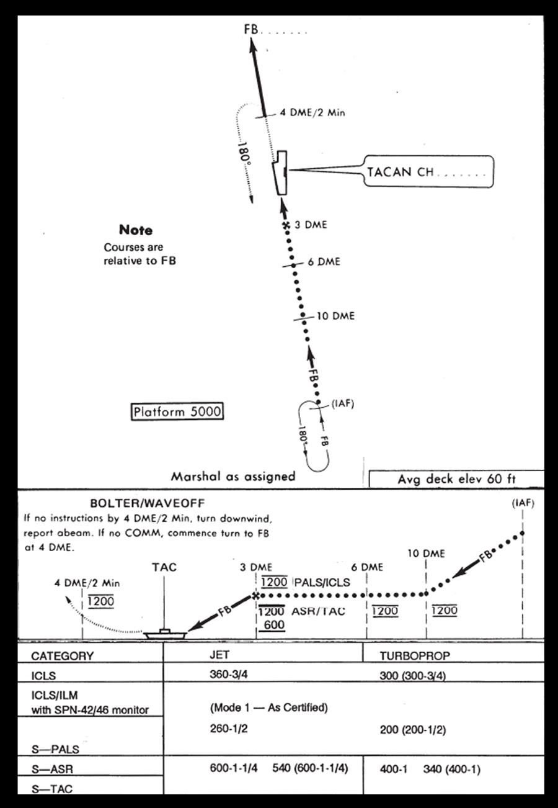
Üstten görünüş:
- "Marshal as assigned": holding paterni (IAF)'dedir; içeri bacak FB (final bearing) üzerinde, dışarı bacak 180°; dönüşler sola çizilmiştir.
- (IAF)'den sonra rota FB üzerinde içeri doğru 10 DME, 6 DME ve 3 DME (X ile işaretli) noktalarından geçerek gemiye gelir.
- Gemi sembolünde "TACAN CH ......." etiketi, geminin ötesindeki final bearing okunda "FB ......." yazar (değerler boş bırakılmıştır).
- Geminin ötesinde FB hattı "4 DME/2 Min" işaretine kadar uzanır; buradan geri doğru noktalı bir 180° dönüş çizilmiştir (çizimde FB hattının solunda).
- "Note: Courses are relative to FB" (rotalar FB'ye göredir); "Platform 5000"; "Avg deck elev 60 ft" (ortalama güverte yüksekliği 60 ft).
Yandan görünüş (profil):
- BOLTER/WAVEOFF kutusu: "If no instructions by 4 DME/2 Min, turn downwind, report abeam. If no COMM, commence turn to FB at 4 DME." — 4 DME/2 dakikaya kadar talimat gelmezse downwind'e dön ve abeam bildir; iletişim (COMM) yoksa 4 DME'de FB'ye dönüşe başla.
- (IAF)'den FB boyunca 10 DME'ye alçalma; 10 DME'den 3 DME'ye düz uçuş; 10 DME ve 6 DME'de 1200 yazar.
- 3 DME'de (X): yolun üstünde "1200 PALS/ICLS", altında "1200 ASR/TAC" ve onun altında "600". 3 DME'den sonra yol FB boyunca gemiye (TAC) iner.
- Geminin ötesinde "4 DME/2 Min" noktasına noktalı bir tırmanış ve dönüş çizilmiştir; orada da 1200 yazar.
- Profildeki irtifa rakamlarının üstünde ve/veya altında yatay çizgiler vardır; belge bu çizgilerin anlamını açıklamaz.
Şeklin altındaki minimumlar tablosu aşağıda ayrıca verilmiştir.
- 2-24.01Figure 2-8 CV 1 Approach
- 2-24.F1[Figure 2-8 plan view] "Marshal as assigned": holding pattern at the (IAF) with the inbound leg labelled FB and the outbound leg labelled 180°, drawn with left turns.
- 2-24.F2[Figure 2-8 plan view] From the (IAF) the track runs inbound on FB past 10 DME, 6 DME and 3 DME (3 DME marked with an X) to the ship.
- 2-24.F3[Figure 2-8 plan view] Ship symbol with callout "TACAN CH ......."; final bearing arrow beyond the ship labelled "FB ......." (values left blank).
- 2-24.F4[Figure 2-8 plan view] Beyond the ship the FB line continues to a mark "4 DME/2 Min"; from there a dotted 180° turn is drawn back toward the ship (on the left of the FB line in the drawing).
- 2-24.F5[Figure 2-8] "Note: Courses are relative to FB".
- 2-24.F6[Figure 2-8] "Platform 5000".
- 2-24.F7[Figure 2-8] "Avg deck elev 60 ft".
- 2-24.F8[Figure 2-8 profile] BOLTER/WAVEOFF: "If no instructions by 4 DME/2 Min, turn downwind, report abeam. If no COMM, commence turn to FB at 4 DME."
- 2-24.F9[Figure 2-8 profile] From the (IAF) the path descends along FB to 10 DME, then is level to 3 DME; "1200" is shown at 10 DME and at 6 DME (altitude figures in the profile are drawn with horizontal bars above and/or below them).
- 2-24.F10[Figure 2-8 profile] At 3 DME (X): "1200 PALS/ICLS" above the path; "1200 ASR/TAC" with "600" beneath it below the path; from 3 DME the path descends along FB to the ship (TAC).
- 2-24.F11[Figure 2-8 profile] Past the ship a dotted climbing turn is drawn to "4 DME/2 Min", marked "1200".
Yaklaşma minimumları (Şekil 2-8 tablosu)
Şekil 2-8'in altındaki tablo, yaklaşma kategorisine göre jet ve turboprop minimumlarını verir. Değerler şekilden aynen aktarılmıştır; belge bu gösterimi (ör. "360-3/4" ya da parantez içindeki değerler) metinde açıklamaz.
| CATEGORY | JET | TURBOPROP |
|---|---|---|
| ICLS | 360-3/4 | 300 (300-3/4) |
| ICLS/ILM with SPN-42/46 monitor | (Mode 1 — As Certified), iki sütuna yayılı | (Mode 1 — As Certified) |
| S—PALS | 260-1/2 | 200 (200-1/2) |
| S—ASR / S—TAC | 600-1-1/4 ve 540 (600-1-1/4) | 400-1 ve 340 (400-1) |
- 2-24.F12[Figure 2-8 minimums table] Columns CATEGORY / JET / TURBOPROP. Row ICLS: JET 360-3/4; TURBOPROP 300 (300-3/4).
- 2-24.F13[Figure 2-8 minimums table] Rows "ICLS/ILM with SPN-42/46 monitor" and "S—PALS" share one undivided value area: "(Mode 1 — As Certified)" spanning both columns at the ICLS/ILM row; JET 260-1/2 and TURBOPROP 200 (200-1/2) at the S—PALS row.
- 2-24.F14[Figure 2-8 minimums table] Rows "S—ASR" and "S—TAC" share one value area: JET 600-1-1/4 and 540 (600-1-1/4); TURBOPROP 400-1 and 340 (400-1); values aligned with the S—ASR row; the S—TAC row is cut off at the bottom edge of the image.
Tabloda "ICLS/ILM with SPN-42/46 monitor" ile "S—PALS" satırlarının değer alanı ve "S—ASR" ile "S—TAC" satırlarının değer alanı çizgiyle ayrılmamıştır; değerler bulundukları hizaya göre satırlara yerleştirilmiştir. Tablonun alt kenarı görselde kesiktir ("S—TAC" satırı yarım görünür). Orijinal basılı nüshadan kontrol edilmesi önerilir.
- 2-24.F13[Figure 2-8 minimums table] Rows "ICLS/ILM with SPN-42/46 monitor" and "S—PALS" share one undivided value area: "(Mode 1 — As Certified)" spanning both columns at the ICLS/ILM row; JET 260-1/2 and TURBOPROP 200 (200-1/2) at the S—PALS row.
- 2-24.F14[Figure 2-8 minimums table] Rows "S—ASR" and "S—TAC" share one value area: JET 600-1-1/4 and 540 (600-1-1/4); TURBOPROP 400-1 and 340 (400-1); values aligned with the S—ASR row; the S—TAC row is cut off at the bottom edge of the image.
Self-contained GCA ve ball çağrısı
İyi bir ACLS kilidi teyit edildikten sonra pilot iğneleri uçar. Yedek olarak her zaman bir self-contained GCA yapılır: gerçek irtifa, aşağıdaki hesaplanan irtifayla karşılaştırılır:
| Mesafe | Hesaplanan irtifa |
|---|---|
| 3 NM | 1.200 ft |
| 2 NM | 800 ft |
| 1 NM | 400 ft |
| 0,5 NM | 200 ft |
- 2-25.01Once a good ACLS lock has been confirmed, the pilot will fly the needles.
- 2-25.02As a backup, always perform a self-contained GCA, comparing actual altitude with calculated altitude as follows:
- 2-25.03(i) 3 NM 1,200 feet
- 2-25.04(ii) 2 NM 800 feet
- 2-25.05(iii) 1 NM 400 feet
- 2-25.06(iv) 0.5 NM 200 feet
¾ mil'de final kontrolörü ekibe topu çağırmasını (call the ball) söyler. LSO'lar ball çağrısını "roger"lar. Pilot iç taramadan (inside scan) dış taramaya (outside scan) geçerken yaklaşmayı izlemeye devam edin.
- 2-25.07At 3/4-mile, the final controller will instruct aircrew to call the ball.
- 2-25.08The LSOs will roger the ball call.
- 2-25.09Continue to monitor the approach as the pilot transitions from an inside to outside scan.
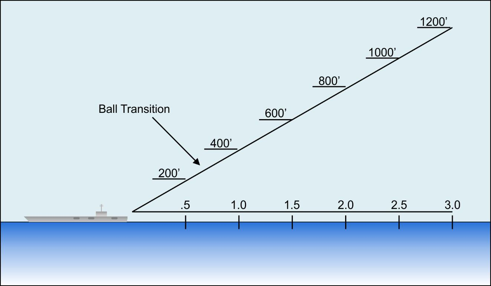
Şekilde gemiden başlayan düz bir süzülüş yolu ve altında .5, 1.0, 1.5, 2.0, 2.5, 3.0 mesafe işaretleri vardır (birim yazılmamıştır). Süzülüş yolu üzerindeki irtifalar: 200' (.5), 400' (1.0), 600' (1.5), 800' (2.0), 1000' (2.5), 1200' (3.0). "Ball Transition" (topa geçiş) oku süzülüş yolunda .5 ile 1.0 arasını gösterir. Şekil, metindeki dört noktaya ek olarak 1,5 → 600' ve 2,5 → 1000' değerlerini de verir.
- 2-25.10Figure 2-9 Self-Contained GCA
- 2-25.F1[Figure 2-9] Straight glidepath drawn from the ship, with a distance scale marked .5, 1.0, 1.5, 2.0, 2.5, 3.0 (no unit printed).
- 2-25.F2[Figure 2-9] Altitudes on the glidepath: 200' at .5; 400' at 1.0; 600' at 1.5; 800' at 2.0; 1000' at 2.5; 1200' at 3.0.
- 2-25.F3[Figure 2-9] "Ball Transition" arrow pointing to the glidepath between the .5 and 1.0 marks.
Değerler s. 2-20 – 2-27 ve Şekil 2-8 / 2-9'dan alınmıştır; telsiz çağrıları belgedeki Case III örneğidir. Çizim şematiktir: platform ve 1.200 ft level-off'un hangi DME'de gerçekleşeceği holding irtifasına bağlıdır ve metinde verilmez (Şekil 2-8 profilinde 1200, 10 DME'de gösterilir). ¾ mil noktasında belge irtifa vermez.
- 2-23.04Aircraft push times will normally be separated by one minute.
- 2-23.05Upon commencing the approach, aircraft will establish a 4,000 feet per minute rate of descent at 250 KIAS.
- 2-23.10At 5,000 feet (platform), the rate of descent will be reduced to 2,000 feet per minute.
- 2-23.13Landing checks will be initiated at 10 DME, and aircraft will reduce speed to cross 6 DME at 150 kts.
- 2-23.14Landing gear should be down no later than 8 DME.
- 2-23.15At 6 DME, aircraft will slow to final approach speed.
- 2-23.16ACLS lock-on will occur sometime between 8 DME and 4 DME.
- 2-25.03(i) 3 NM 1,200 feet
- 2-25.04(ii) 2 NM 800 feet
- 2-25.05(iii) 1 NM 400 feet
- 2-25.06(iv) 0.5 NM 200 feet
- 2-25.07At 3/4-mile, the final controller will instruct aircrew to call the ball.
- 2-24.F9[Figure 2-8 profile] From the (IAF) the path descends along FB to 10 DME, then is level to 3 DME; "1200" is shown at 10 DME and at 6 DME (altitude figures in the profile are drawn with horizontal bars above and/or below them).
- 2-24.F10[Figure 2-8 profile] At 3 DME (X): "1200 PALS/ICLS" above the path; "1200 ASR/TAC" with "600" beneath it below the path; from 3 DME the path descends along FB to the ship (TAC).
(c) Bolter/waveoff paterni
Waveoff ya da bolter durumunda 150 kts'te 1.200 ft'e tırmanılır ve yakıt tasarrufu için iniş takımı toplanır, flaplar aşağıda bırakılır. Approach talimat verdiğinde downwind'e dönülür. İniş kontrolleri downwind'de yapılır; gemi abeam'ındayken approach'a yakıt durumu bildirilir. Yeni bir yaklaşma için abeam'i 4–8 NM geçtikten sonra finale geri dönüş beklenir; finale bu dönüşe başlarken iniş takımı indirilir.
- 2-25.11(c) Bolter/Waveoff Pattern. In the event of a waveoff or bolter, climb to 1,200 feet at 150 kts and raise the gear to save fuel, leaving flaps down.
- 2-25.12When instructed by approach, turn downwind.
- 2-25.13Perform the landing checks on downwind, and notify approach with fuel state when abeam the ship.
- 2-25.14Expect a turn back to final 4-8 NM past abeam for another approach, lowering the landing gear as you start this turn to final.
Talimat gelmezse: Upwind'de 4 DME'ye kadar talimat alınmazsa approach ile temas kurmayı deneyin. Approach ile temas kurulamazsa downwind'e dönün ve normal kontrolleri yapın. Abeam çağrısını yapın; abeam'i 4 NM (2 dakika) geçene kadar approach ile temas yeniden kurulamazsa finale dönün. ICLS'i yakalayın (intercept) ve normal bir yaklaşma uçun. Topu ¾ mil'de çağırın. Bu çağrı onaylanmazsa cut ışıklarına bakın (cut ışıkları için bkz. 102.4).
- 2-26.01If no instructions are received by 4 DME upwind, attempt to contact approach.
- 2-26.02If unable to contact approach, turn downwind and perform the normal checks.
- 2-26.03Make the abeam call, and if contact has not been reestablished with approach by 4 NM (2 minutes) past abeam, turn final.
- 2-26.04Intercept the ICLS and fly a normal approach.
- 2-26.05Call the ball at 3/4-mile.
- 2-26.06If this call is not acknowledged, look for the cut lights.
| Metin (s. 2-25 – 2-26) | Şekil 2-8 BOLTER/WAVEOFF notu | |
|---|---|---|
| Talimat gelmezse | 4 DME upwind'e kadar talimat yoksa approach ile temas dene; kurulamazsa downwind'e dön, normal kontrolleri yap, abeam çağrısı yap | 4 DME/2 Min'e kadar talimat yoksa downwind'e dön, abeam bildir |
| Finale dönüş | Normalde abeam'den 4–8 NM sonra beklenir; temas kurulamazsa abeam'den 4 NM (2 dakika) sonra | COMM yoksa 4 DME'de FB'ye dönüşe başla |
- 2-25.14Expect a turn back to final 4-8 NM past abeam for another approach, lowering the landing gear as you start this turn to final.
- 2-26.01If no instructions are received by 4 DME upwind, attempt to contact approach.
- 2-26.02If unable to contact approach, turn downwind and perform the normal checks.
- 2-26.03Make the abeam call, and if contact has not been reestablished with approach by 4 NM (2 minutes) past abeam, turn final.
- 2-24.F8[Figure 2-8 profile] BOLTER/WAVEOFF: "If no instructions by 4 DME/2 Min, turn downwind, report abeam. If no COMM, commence turn to FB at 4 DME."
(d) Haberleşme (Communications)
Case III recovery'lerde Marshal check-in sırasında şu bilgileri verir:
- Güncel hava durumu ve altimetre
- Recovery Case'i
- Marshal talimatları
- Beklenen final approach button'u (frekans)
- Beklenen yaklaşma zamanı (EAT)
- Beklenen final bearing
- Divert meydanı, yakıt verileri ve bingo bilgileri gibi ek bilgiler
- 2-26.07(d) Communications. For Case III recoveries, Marshal will provide the following information upon check in:
- 2-26.08(i) Current weather and altimeter
- 2-26.09(ii) Case recovery
- 2-26.10(iii) Marshal instructions
- 2-26.11(iv) Expected final approach button (frequency)
- 2-26.12(v) Expected approach time (EAT)
- 2-26.13(vi) Expected final bearing
- 2-26.14(vii) Additional information such as divert field, fuel data and bingo information.
Case II listesinden iki fark vardır: final approach button'u Case II'de "gerekiyorsa" verilir, Case III listesinde bu kayıt yoktur; Case II'de beklenen BRC, Case III'te beklenen final bearing verilir.
- 2-21.15(iv) Expected final approach button (frequency) if required
- 2-21.17(vi) Expected BRC
- 2-26.11(iv) Expected final approach button (frequency)
- 2-26.13(vi) Expected final bearing
Holding'e yerleşince Marshal'a bildirin; Marshal holding sırasında hava durumunu ve BRC'yi zaman zaman güncelleyebilir. Yaklaşmaya başlandığında Marshal'a bildirin. Marshal uçağı penetrasyon sırasında, ideal olarak platforma varmadan önce, final kontrolörüne devreder (hand off).
- 2-26.15Notify Marshal when established in holding. Marshal may periodically update the weather and BRC while in holding.
- 2-26.16Notify Marshal when the approach is commenced.
- 2-26.17Marshal will hand aircraft off to the final controller during the penetration, ideally before reaching platform.
Örnek haberleşme — Case III
Örnek haberleşme şöyledir (çağrı adı yine 405):
| Ne zaman | Çağrı | Anlamı |
|---|---|---|
| Marshal'a ilk check-in | 405 — "Marshal, 405, 250 for 42, Angels 14, State 2.4" | Case II örneğiyle aynı: konum, irtifa, yakıt durumu. |
| Marshal'ın talimatı | Marshal — "405, Mother's weather is 600 overcast, visibility 3 miles, altimeter 29.87. Case III recovery, CV-1 approach. Marshal on the 160, 22, angels 7. Expected final bearing 015, expected approach time 22. Approach button 18." | Gemide 600 ft kapalı, görüş 3 mil, altimetre 29.87; Case III recovery, CV-1 approach; 160 radyalinde, 22 DME'de, angels 7'de marshal; beklenen final bearing 015; EAT 22; approach frekansı button 18. |
| Geri okuma | 405 — "405, altimeter 29.87. Marshal on the 160, 22, angels 7. Expected approach time 22." | Altimetre, marshal talimatı ve EAT geri okunur. |
| Holding'e yerleşince | 405 — "405, established angels 7. State 2.3" | Angels 7'de holding'e yerleşildi; yakıt 2.3. |
| Holding sırasında | Marshal — "99, altimeter 29.88. New final bearing 020" | Tüm uçaklara "99" yayını: yeni altimetre 29.88, yeni final bearing 020. |
| Penetrasyona başlarken | 405 — "405 commencing, 29.88, state 2.2" | Yaklaşmaya başlandı; altimetre teyidi; yakıt 2.2. |
| Marshal — "405, roger" | Marshal anlaşıldı der. | |
| Approach'a devir | Marshal — "405, switch Approach, button 18" | Approach frekansına (button 18) geç. |
| 405 — "405 switching button 18" | Button 18'e geçiliyor. | |
| Approach'a check-in | 405 — "405 checking in, state 1.5" | Approach frekansında check-in; yakıt 1.5. |
| Approach — "405, final bearing 017" | Approach final bearing'i 017 olarak verir. | |
| Platformda | 405 — "405 platform" | Platforma (5.000 ft) gelindi. |
| ACLS lock-on'da | Approach — "405, say needles" | İğnelerin konumunu söyle. |
| 405 — "405, fly up, on" | Glideslope iğnesi "fly up", azimut iğnesi "on". | |
| Approach — "405, fly your needles" | İğneleri uç (metindeki karşılığı "fly the needles"). | |
| ¾ mil'de | Approach — "405, ¾ mile, call the ball" | ¾ mil: topu çağır. |
| 405 — "405, Goshawk ball, 2.0" | Ball çağrısı: uçak tipi (Goshawk), "ball", yakıt durumu 2.0. | |
| LSO — "Roger ball" | LSO ball çağrısını onaylar. |
- 2-26.18Sample communications are as follows:
- 2-26.19(i) 405 - “Marshal, 405, 250 for 42, Angels 14, State 2.4”
- 2-26.20(ii) Marshal - “405, Mother’s weather is 600 overcast, visibility 3 miles, altimeter 29.87.
- 2-26.21Case III recovery, CV-1 approach.
- 2-26.22Marshal on the 160, 22, angels 7.
- 2-26.23Expected final bearing 015, expected approach time 22.
- 2-26.24Approach button 18.”
- 2-26.25(iii) 405 - “405, altimeter 29.87. Marshal on the 160, 22, angels 7.
- 2-26.26Expected approach time 22.”
- 2-26.27When established in holding:
- 2-26.28(iv) 405 - “405, established angels 7. State 2.3”
- 2-27.01While holding:
- 2-27.02(v) Marshal - “99, altimeter 29.88. New final bearing 020”
- 2-27.03When beginning the penetration:
- 2-27.04(vi) 405 - “405 commencing, 29.88, state 2.2”
- 2-27.05(vii) Marshal - “405, roger”
- 2-27.06Handoff to approach:
- 2-27.07(viii) Marshal - “405, switch Approach, button 18”
- 2-27.08(ix) 405 - “405 switching button 18
- 2-27.09Check in with Approach:
- 2-27.10(x) 405 - “405 checking in, state 1.5”
- 2-27.11(xi) Approach - “405, final bearing 017”
- 2-27.12At platform:
- 2-27.13(xii) 405 - “405 platform”
- 2-27.14At ACLS lock-on:
- 2-27.15(xiii) Approach - “405, say needles”
- 2-27.16(xiv) 405 - “405, fly up, on”
- 2-27.17(xv) Approach - “405, fly your needles”
- 2-27.18At ¾ mile:
- 2-27.19(xvi) Approach - “405, ¾ mile, call the ball”
- 2-27.20(xvii) 405 - “405, Goshawk ball, 2.0”
- 2-27.21(xviii) LSO - “Roger ball”
- Metin, final approach frekansına geçen ekibin irtifasıyla check-in yapacağını söyler ("they will check in with altitude", s. 2-23); örnek check-in çağrısı ("405 checking in, state 1.5", s. 2-27) irtifa içermez, yakıt durumu verir.
- Yakıt durumu örnekte sırasıyla 2.4 → 2.3 → 2.2 → 1.5 (Approach check-in) → 2.0 (ball çağrısı) olarak geçer. Belge ball çağrısındaki sayıyı yakıt durumu olarak tanımlar (Case I, s. 2-18: "where 2.2 is the fuel state"); bu durumda örnekte yakıt artmış görünür.
- Metin holding sırasında hava durumu ve BRC güncellemesinden söz eder (s. 2-26); örnek "99" çağrısı ise yeni final bearing verir.
- 2-23.12At some point during the penetration or level off, Marshal will switch the aircrew to the final approach control frequency and they will check in with altitude.
- 2-27.10(x) 405 - “405 checking in, state 1.5”
- 2-27.04(vi) 405 - “405 commencing, 29.88, state 2.2”
- 2-27.20(xvii) 405 - “405, Goshawk ball, 2.0”
- 2-26.15Notify Marshal when established in holding. Marshal may periodically update the weather and BRC while in holding.
- 2-27.02(v) Marshal - “99, altimeter 29.88. New final bearing 020”
Bölüm soruları
0 / 27Case III recovery ne zaman kullanılır?
Belge Case II minimumlarının altını burada "less than 1,000-3" diye yazar (kaynak notu).
Kaynak: s. 2-22 (2-22.23)
Case III'te section yaklaşması ne zaman onaylanır?
Case III yalnızca tek uçakladır; farklı tip uçakların kol penetrasyonu yalnızca daha emniyetli seçenek kalmayan aşırı durumlarda denenir.
Kaynak: s. 2-22 (2-22.24, 2-22.25, 2-22.26)
Case III'te uçak yaklaşmaya nereden başlar ve hangi yaklaşmayı uçar?
Case III marshal holding paterni Case II ile aynıdır.
Kaynak: s. 2-23 (2-23.01, 2-23.02)
Final bearing, marshal radyalinin karşıtından 10°'den fazla farklıysa ne yapılır?
10° içindeyse kademeli (gradual) düzeltme yapılır. Marshal radyali final bearing'in karşıtıysa düzeltme gerekmez.
Kaynak: s. 2-23 (2-23.06, 2-23.07, 2-23.08)
Case III örneğinde marshal radyali 160, beklenen final bearing 015'tir. Kural uygulanırsa 20 DME'de hangi düzeltme gerekir?
160'ın karşıtı 340'tır; 015 ile 340 arasındaki fark 35°'dir. (Hesaplanmış uygulama örneği; belgede bu hesap yer almaz.)
Kaynak: s. 2-23, 2-26 (2-23.07, 2-23.08, 2-26.22, 2-26.23)
12 mile kadar final bearing'e oturulamazsa ne yapılır?
"If not established on the final bearing by 12 miles, fly the 12-mile arc until intercepting final bearing."
Kaynak: s. 2-23 (2-23.09)
CV-1 yaklaşmasında iniş kontrolleri nerede başlar ve 6 DME hangi hızda geçilir?
6 DME'de uçak final yaklaşma hızına yavaşlar.
Kaynak: s. 2-23 (2-23.13, 2-23.15)
CV-1 yaklaşmasında iniş takımı en geç nerede inmiş olmalıdır?
"Landing gear should be down no later than 8 DME."
Kaynak: s. 2-23 (2-23.14)
ACLS lock-on hangi aralıkta gerçekleşir?
Lock-on'da kilidin iyi olduğundan emin olmak için iğneler bullseye (ICLS) ile karşılaştırılır.
Kaynak: s. 2-23 (2-23.16, 2-23.17)
Approach "say needles" dediğinde pilot ne söyler?
Örnekler: "fly up, fly right" ya da "fly up, on". Case III örneğinde 405 "405, fly up, on" der.
Kaynak: s. 2-23, 2-27 (2-23.18, 2-23.19, 2-27.15, 2-27.16)
Pilotun iğne okuması approach radar ekranıyla uyuşmazsa kontrolör ne yapar?
Uyuşuyorsa "fly the needles" der. Bullseye = ICLS.
Kaynak: s. 2-23 (2-23.20, 2-23.21, 2-23.22)
Self-contained GCA'ya göre 2 NM'de hesaplanan irtifa nedir?
3 NM 1.200 ft, 2 NM 800 ft, 1 NM 400 ft, 0,5 NM 200 ft (Şekil 2-9 ayrıca 1,5 → 600' ve 2,5 → 1000' gösterir).
Kaynak: s. 2-25 (2-25.03, 2-25.04, 2-25.05, 2-25.06, 2-25.F2)
Self-contained GCA ne zaman yapılır?
Gerçek irtifa, hesaplanan irtifayla karşılaştırılır; iyi kilit teyit edilince pilot iğneleri uçar.
Kaynak: s. 2-25 (2-25.01, 2-25.02)
CV-1 yaklaşmasında final kontrolörü ekibe topu çağırmasını ne zaman söyler?
LSO'lar ball çağrısını "roger"lar. Örnek: "405, ¾ mile, call the ball".
Kaynak: s. 2-25, 2-27 (2-25.07, 2-25.08, 2-27.18, 2-27.19)
Case III'te waveoff ya da bolter sonrası ne yapılır?
Takım yakıt tasarrufu için toplanır; approach talimat verince downwind'e dönülür.
Kaynak: s. 2-25 (2-25.11, 2-25.12)
Bolter/waveoff paterninde başka bir yaklaşma için finale dönüş ne zaman beklenir?
Dönüşe başlarken iniş takımı indirilir; abeam'de approach'a yakıt durumu bildirilir.
Kaynak: s. 2-25 (2-25.13, 2-25.14)
Bolter/waveoff sonrası upwind'de 4 DME'ye kadar talimat gelmezse ilk adım nedir?
Temas kurulamazsa downwind'e dönülür ve normal kontroller yapılır.
Kaynak: s. 2-26 (2-26.01, 2-26.02)
Approach ile temas yeniden kurulamazsa abeam çağrısından sonra ne zaman finale dönülür?
Ardından ICLS yakalanır, normal yaklaşma uçulur ve top ¾ mil'de çağrılır.
Kaynak: s. 2-26 (2-26.03, 2-26.04, 2-26.05)
İletişim kaybında ¾ mil'deki ball çağrısı onaylanmazsa ne yapılır?
"If this call is not acknowledged, look for the cut lights."
Kaynak: s. 2-26 (2-26.06)
Case III check-in'inde, Case II'den farklı olarak hangi bilgi verilir?
Case II'de beklenen BRC ve "gerekiyorsa" final approach button verilir.
Kaynak: s. 2-26, 2-21 (2-26.07, 2-26.13, 2-21.17)
Case III örneğinde Marshal'ın ilk talimatında olup Case II örneğinde olmayan ifade hangisidir?
Case III listesinde final approach button koşulsuz yer alır; Case II'de yalnızca gerekirse verilir.
Kaynak: s. 2-26, 2-21 (2-26.24, 2-26.11, 2-21.15)
Marshal uçağı final kontrolörüne ideal olarak ne zaman devreder?
Örnek: Marshal "405, switch Approach, button 18".
Kaynak: s. 2-26, 2-27 (2-26.17, 2-27.06, 2-27.07)
Case III örneğinde platforma gelindiğinde 405 ne çağırır?
Platform 5.000 ft'tir.
Kaynak: s. 2-27 (2-27.12, 2-27.13)
Şekil 2-8 minimum tablosuna göre ICLS için jet minimumu nedir?
300 (300-3/4) ICLS turboprop değeridir; 260-1/2 S—PALS jet değeridir.
Kaynak: s. 2-24 (2-24.F12, 2-24.F13)
Şekil 2-8 profilinde 3 DME'de ASR/TAC için hangi değerler yazılıdır?
PALS/ICLS için 3 DME'de yalnızca 1200 yazar.
Kaynak: s. 2-24 (2-24.F10)
Şekil 2-8'deki BOLTER/WAVEOFF notuna göre iletişim (COMM) yoksa FB'ye dönüşe nerede başlanır?
"If no instructions by 4 DME/2 Min, turn downwind, report abeam. If no COMM, commence turn to FB at 4 DME."
Kaynak: s. 2-24 (2-24.F8)
Şekil 2-8'e göre ortalama güverte yüksekliği nedir?
"Avg deck elev 60 ft"; şekilde ayrıca "Courses are relative to FB" ve "Platform 5000" yazar.
Kaynak: s. 2-24 (2-24.F7)
205.1Uçak acil durumları ve bingo
Bingo
Bingo bir acil durumdur. Uçağın minimum fuel seviyesinde değil, acil durum yakıt seviyesinde (emergency fuel level) olduğu anlamına gelir.
- 2-28.03(a) Bingo. Bingo is an emergency situation.
- 2-28.04It means the aircraft is at emergency fuel level, not minimum fuel.
Her uçağın yakıt durumu Air Ops ve Tower tarafından sürekli izlenir. Yakıt durumu Air Ops'un belirlediği hold-down seviyesine ulaştığında uçak yakıt ikmali için güvertede tutulur. Yakıtınız hold-down seviyesinde veya altındayken katapulta taxi yapmanız yönlendirilirse Tower'a çağrı yapın.
- 2-28.05The fuel state of every aircraft is constantly monitored by Air Ops and Tower.
- 2-28.06When the fuel state reaches hold-down, as set by Air Ops, the aircraft will be held on deck for refueling.
- 2-28.07If directed to taxi to the catapult with a fuel state at or below hold- down, make a call to Tower.
Temiz (clean) bingo profilinin hesaplanması
Temiz konfigürasyonda bingo profili şu adımlarla hesaplanır (Şekil 2-10):
Adım i — Üsse olan mesafeyi (distance to base) belirleyin.
- 2-28.08(b) Computing Bingo Profile (Clean). In a clean configuration, the computation of the bingo profile will be computed as follows (refer to Figure 2-10):
- 2-28.09(i) Determine the distance to base.
Uçaklar divert sahasına kerteriz / mesafe bilgisini (pigeons) ve bingo fuel durumunu ilk check-in'de Marshal'dan alır. Bu bilgi periyodik olarak güncellenir ve Marshal ve tower frekanslarında yayınlanır. Bingo ve pigeons bilgisini her zaman yazın.
- 2-28.11Aircraft will receive information on bearing/distance (pigeons) to the divert field and bingo fuel state from Marshal on initial check- in.
- 2-28.12This information is periodically updated and broadcast over Marshal and tower frequencies.
- 2-28.13Always write down bingo and pigeons information.
Adım ii — Doğru bingo bilgilerini belirlemek için PCL'ye bakın:
- (a) Gereken yakıt (fuel required)
- (b) Bingo için gereken süre (time required): tırmanışın başından inişe kadar geçen toplam süre
- (c) Tırmanış hızı (KIAS)
- (d) Seyir irtifası (cruise altitude)
- (e) Seyir irtifasındaki seyir hızı (KIAS / IMN)
- (f) Alçalma hızı (KIAS)
- (g) Alçalma noktası (descent point)
- 2-28.14(ii) Refer to the PCL to determine proper bingo information.
- 2-28.15(a). Fuel required
- 2-28.16(b). Time required for bingo (total time required from start of climb to landing)
- 2-28.17(c). Speed (KIAS) for climb
- 2-28.18(d). Cruise altitude
- 2-28.19(e). Cruise (KIAS/IMN) speed at cruise altitude
- 2-28.20(f). Descent (KIAS) speed
- 2-28.21(g). Descent point
Geminin bildirdiği bingo değerlerini her zaman, bingo sahasına olan mesafeye göre bingo fuel grafiğiyle doğrulayın. Güncel grafikler için PCL veya NATOPS'a bakın.
- 2-28.22Always verify the bingo figures passed by the ship with the bingo fuel chart based on the distance to the bingo field.
- 2-28.23Refer to the PCL or NATOPS for current charts.
Örnek problem: temiz bingo
Örnek bingo profili hesaplama problemi. Aşağıdaki verilerle doğru bingo bilgilerini belirleyin:
| Verilen | Değer |
|---|---|
| Uçak konfigürasyonu | gear up, flaps up |
| Zero fuel weight | 10.500 lb |
| Drag index | 0 |
| Bingo sahasına mesafe | 100 NM |
- 2-28.24Example bingo profile computation problem:
- 2-28.25(i) Determine proper bingo information given the following:
- 2-29.01(a). Aircraft configuration: gear up, flaps up
- 2-29.02(b). Zero fuel weight: 10,500 lb.
- 2-29.03(c). Drag index: 0
- 2-29.04(d). Distance to bingo field: 100 NM
Çözüm ve Şekil 2-10'daki karşılığı: değerler DRAG INDEX = 0 bloğunun 100 NM satırından okunur (aşağıdaki Türkçe tabloda kalın gösterilen satır). Tırmanış ve alçalma hızı bloğun tüm satırları için ortaktır.
| Kalem | Çözüm (metin) | Şekil 2-10, DRAG INDEX = 0, 100 NM |
|---|---|---|
| DIST TO BASE | 100 NM | DIST TO BASE 100 NM |
| FUEL REQD | 712 lb | FUEL REQD, rüzgârsız: 712 LB |
| CLIMB SPEED | 300 KIAS / 0,75 IMN | CLIMB SPEED: 300/0,75 (sütun birimi KCAS) |
| CRUISE ALT | 20.000 ft | CRUISE ALT: 20.000 FEET |
| CRUISE SPEED | 218 KIAS, 0,48 IMN | CRUISE SPEED: 218 KCAS |
| DESCENT SPEED | 180 KIAS | DESCEND SPEED: 180 KCAS |
| DESCENT DIST | 55 NM (bingo sahasından) | DESCEND DIST, rüzgârsız: 55 NM |
Aynı satırda 100 kt baş rüzgârı için gereken yakıt 921 lb, alçalma mesafesi 29 NM'dir.
- 2-29.05(ii) Solution:
- 2-29.06(a). DIST TO BASE = 100 NM
- 2-29.07(b). FUEL REQD = 712 lb.
- 2-29.08(c). CLIMB SPEED = 300 KIAS/.75 IMN
- 2-29.09(d). CRUISE ALT = 20,000 feet
- 2-29.10(e). CRUISE SPEED = 218 KIAS .48 IMN
- 2-29.11(f). DESCENT SPEED = 180 KIAS
- 2-29.12(g). DESCENT DIST = 55 NM (from bingo field)
- 2-30.F3[Figure 2-10] DRAG INDEX = 0 block: CLIMB SPEED 300/0.75 and DESCEND SPEED 180 KCAS (a single value printed for all distances of the block).
- 2-30.F7[Figure 2-10] DRAG INDEX = 0, DIST TO BASE 100 NM: FUEL REQD 712 LB (NO WIND) / 921 LB (100 KT HEAD WIND); CRUISE ALT 20,000 FEET, CRUISE SPEED 218 KCAS; DESCEND DIST 55 NM (NO WIND) / 29 NM (100 KT HEAD WIND); SEA LEVEL CRUISE FUEL REQD 820 LB (NO WIND) / 1,240 LB (100 KT HEAD WIND), SEA LEVEL CRUISE SPEED 222 KCAS.
Gereken yakıta (fuel required) şunlar dahildir: 300 lb yedek yakıt, belirtilen irtifaya maksimum thrust ile tırmanış ve deniz seviyesine idle thrust ile alçalma.
- 2-29.14Fuel required includes 300 pounds reserve fuel, maximum thrust climb to indicated altitude, and idle thrust descent to sea level.
- Adım ii'deki listede "(b). Time required for bingo" sayılıyor; ama Şekil 2-10'da süre sütunu yok, örnek çözüm de süre vermiyor.
- Metin hızları KIAS / IMN ile veriyor ("CLIMB SPEED = 300 KIAS/.75 IMN", "CRUISE SPEED = 218 KIAS .48 IMN"); grafiğin hız sütunları ise KCAS birimli. Grafikte tırmanış hızı yalnızca "300/0.75" olarak yazılı, 0,48 IMN değeri grafikte yok.
- 2-28.16(b). Time required for bingo (total time required from start of climb to landing)
- 2-29.08(c). CLIMB SPEED = 300 KIAS/.75 IMN
- 2-29.10(e). CRUISE SPEED = 218 KIAS .48 IMN
- 2-30.F2[Figure 2-10] Column headings: DIST TO BASE (NM); MAXIMUM RANGE CRUISE group: FUEL REQD - NO WIND (LB) and 100 KT HEAD WIND (LB), CLIMB SPEED (KCAS), CRUISE - ALT (FEET) and SPEED (KCAS), DESCEND - SPEED (KCAS) and DIST - NO WIND (NM) and 100 KT HEAD WIND (NM); SEA LEVEL CRUISE group: FUEL REQD - NO WIND (LB) and 100 KT HEAD WIND (LB), CRUISE SPEED (KCAS). Rows are grouped by DRAG INDEX = 0, 50 and 100, each with DIST TO BASE 25, 50, 75, 100, 125, 150, 175, 200, 225 and 250 NM.
- 2-30.F3[Figure 2-10] DRAG INDEX = 0 block: CLIMB SPEED 300/0.75 and DESCEND SPEED 180 KCAS (a single value printed for all distances of the block).
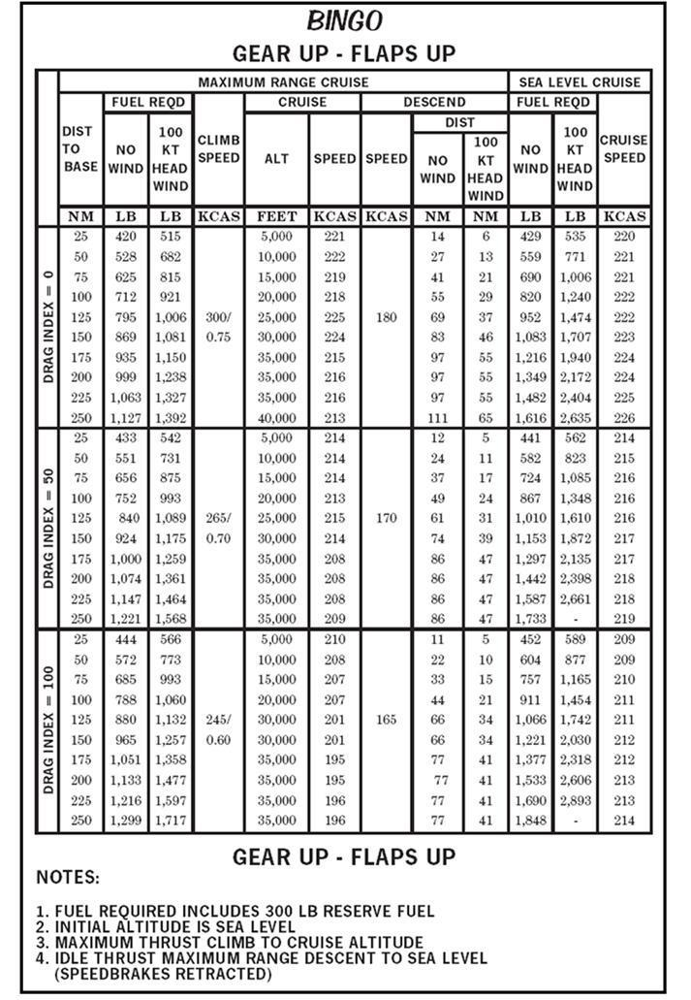
Grafik başlığı BINGO, konfigürasyon GEAR UP - FLAPS UP (bu etiket tablonun altında, notların üstünde tekrarlanır). Satırlar DRAG INDEX = 0, 50 ve 100 olmak üzere üç bloğa ayrılır; her blokta üsse mesafe (DIST TO BASE) 25'ten 250 NM'ye 25'er NM artar. Sütunlar: MAXIMUM RANGE CRUISE grubunda gereken yakıt (FUEL REQD: NO WIND ve 100 KT HEAD WIND, LB), tırmanış hızı (CLIMB SPEED, KCAS), seyir (CRUISE: ALT, FEET ve SPEED, KCAS), alçalma (DESCEND: SPEED, KCAS ve DIST: NO WIND ve 100 KT HEAD WIND, NM); SEA LEVEL CRUISE grubunda gereken yakıt (NO WIND ve 100 KT HEAD WIND, LB) ve seyir hızı (CRUISE SPEED, KCAS). Aşağıda "a / b" = rüzgârsız / 100 kt baş rüzgârı; "–" = grafikte değer yok.
DRAG INDEX = 0 — tırmanış hızı (CLIMB SPEED) 300/0,75, alçalma hızı (DESCEND SPEED) 180 KCAS (bloktaki tüm mesafeler için tek değer):
| Mesafe (NM) | Gereken yakıt (lb): rüzgârsız / 100 kt baş rüzgârı | Seyir irtifası (ft) | Seyir hızı (KCAS) | Alçalma mesafesi (NM): rüzgârsız / 100 kt baş rüzgârı | Deniz seviyesi seyri, yakıt (lb): rüzgârsız / 100 kt baş rüzgârı | Deniz seviyesi seyir hızı (KCAS) |
|---|---|---|---|---|---|---|
| 25 | 420 / 515 | 5.000 | 221 | 14 / 6 | 429 / 535 | 220 |
| 50 | 528 / 682 | 10.000 | 222 | 27 / 13 | 559 / 771 | 221 |
| 75 | 625 / 815 | 15.000 | 219 | 41 / 21 | 690 / 1.006 | 221 |
| 100 | 712 / 921 | 20.000 | 218 | 55 / 29 | 820 / 1.240 | 222 |
| 125 | 795 / 1.006 | 25.000 | 225 | 69 / 37 | 952 / 1.474 | 222 |
| 150 | 869 / 1.081 | 30.000 | 224 | 83 / 46 | 1.083 / 1.707 | 223 |
| 175 | 935 / 1.150 | 35.000 | 215 | 97 / 55 | 1.216 / 1.940 | 224 |
| 200 | 999 / 1.238 | 35.000 | 216 | 97 / 55 | 1.349 / 2.172 | 224 |
| 225 | 1.063 / 1.327 | 35.000 | 216 | 97 / 55 | 1.482 / 2.404 | 225 |
| 250 | 1.127 / 1.392 | 40.000 | 213 | 111 / 65 | 1.616 / 2.635 | 226 |
DRAG INDEX = 50 — tırmanış hızı (CLIMB SPEED) 265/0,70, alçalma hızı (DESCEND SPEED) 170 KCAS (bloktaki tüm mesafeler için tek değer):
| Mesafe (NM) | Gereken yakıt (lb): rüzgârsız / 100 kt baş rüzgârı | Seyir irtifası (ft) | Seyir hızı (KCAS) | Alçalma mesafesi (NM): rüzgârsız / 100 kt baş rüzgârı | Deniz seviyesi seyri, yakıt (lb): rüzgârsız / 100 kt baş rüzgârı | Deniz seviyesi seyir hızı (KCAS) |
|---|---|---|---|---|---|---|
| 25 | 433 / 542 | 5.000 | 214 | 12 / 5 | 441 / 562 | 214 |
| 50 | 551 / 731 | 10.000 | 214 | 24 / 11 | 582 / 823 | 215 |
| 75 | 656 / 875 | 15.000 | 214 | 37 / 17 | 724 / 1.085 | 216 |
| 100 | 752 / 993 | 20.000 | 213 | 49 / 24 | 867 / 1.348 | 216 |
| 125 | 840 / 1.089 | 25.000 | 215 | 61 / 31 | 1.010 / 1.610 | 216 |
| 150 | 924 / 1.175 | 30.000 | 214 | 74 / 39 | 1.153 / 1.872 | 217 |
| 175 | 1.000 / 1.259 | 35.000 | 208 | 86 / 47 | 1.297 / 2.135 | 217 |
| 200 | 1.074 / 1.361 | 35.000 | 208 | 86 / 47 | 1.442 / 2.398 | 218 |
| 225 | 1.147 / 1.464 | 35.000 | 208 | 86 / 47 | 1.587 / 2.661 | 218 |
| 250 | 1.221 / 1.568 | 35.000 | 209 | 86 / 47 | 1.733 / – | 219 |
DRAG INDEX = 100 — tırmanış hızı (CLIMB SPEED) 245/0,60, alçalma hızı (DESCEND SPEED) 165 KCAS (bloktaki tüm mesafeler için tek değer):
| Mesafe (NM) | Gereken yakıt (lb): rüzgârsız / 100 kt baş rüzgârı | Seyir irtifası (ft) | Seyir hızı (KCAS) | Alçalma mesafesi (NM): rüzgârsız / 100 kt baş rüzgârı | Deniz seviyesi seyri, yakıt (lb): rüzgârsız / 100 kt baş rüzgârı | Deniz seviyesi seyir hızı (KCAS) |
|---|---|---|---|---|---|---|
| 25 | 444 / 566 | 5.000 | 210 | 11 / 5 | 452 / 589 | 209 |
| 50 | 572 / 773 | 10.000 | 208 | 22 / 10 | 604 / 877 | 209 |
| 75 | 685 / 993 | 15.000 | 207 | 33 / 15 | 757 / 1.165 | 210 |
| 100 | 788 / 1.060 | 20.000 | 207 | 44 / 21 | 911 / 1.454 | 211 |
| 125 | 880 / 1.132 | 30.000 | 201 | 66 / 34 | 1.066 / 1.742 | 211 |
| 150 | 965 / 1.257 | 30.000 | 201 | 66 / 34 | 1.221 / 2.030 | 212 |
| 175 | 1.051 / 1.358 | 35.000 | 195 | 77 / 41 | 1.377 / 2.318 | 212 |
| 200 | 1.133 / 1.477 | 35.000 | 195 | 77 / 41 | 1.533 / 2.606 | 213 |
| 225 | 1.216 / 1.597 | 35.000 | 196 | 77 / 41 | 1.690 / 2.893 | 213 |
| 250 | 1.299 / 1.717 | 35.000 | 196 | 77 / 41 | 1.848 / – | 214 |
Grafik notları (NOTES):
- Gereken yakıta (fuel required) 300 lb yedek yakıt dahildir.
- Başlangıç irtifası deniz seviyesidir.
- Seyir irtifasına maksimum thrust ile tırmanış.
- Deniz seviyesine idle thrust ile maksimum menzil alçalması (speedbrake'ler kapalı).
- 2-30.01Figure 2-10 Clean Bingo Chart
- 2-30.F1[Figure 2-10] Chart title: BINGO; configuration label: GEAR UP - FLAPS UP (the label GEAR UP - FLAPS UP is repeated below the table, above the NOTES).
- 2-30.F2[Figure 2-10] Column headings: DIST TO BASE (NM); MAXIMUM RANGE CRUISE group: FUEL REQD - NO WIND (LB) and 100 KT HEAD WIND (LB), CLIMB SPEED (KCAS), CRUISE - ALT (FEET) and SPEED (KCAS), DESCEND - SPEED (KCAS) and DIST - NO WIND (NM) and 100 KT HEAD WIND (NM); SEA LEVEL CRUISE group: FUEL REQD - NO WIND (LB) and 100 KT HEAD WIND (LB), CRUISE SPEED (KCAS). Rows are grouped by DRAG INDEX = 0, 50 and 100, each with DIST TO BASE 25, 50, 75, 100, 125, 150, 175, 200, 225 and 250 NM.
- 2-30.F3[Figure 2-10] DRAG INDEX = 0 block: CLIMB SPEED 300/0.75 and DESCEND SPEED 180 KCAS (a single value printed for all distances of the block).
- 2-30.F4[Figure 2-10] DRAG INDEX = 0, DIST TO BASE 25 NM: FUEL REQD 420 LB (NO WIND) / 515 LB (100 KT HEAD WIND); CRUISE ALT 5,000 FEET, CRUISE SPEED 221 KCAS; DESCEND DIST 14 NM (NO WIND) / 6 NM (100 KT HEAD WIND); SEA LEVEL CRUISE FUEL REQD 429 LB (NO WIND) / 535 LB (100 KT HEAD WIND), SEA LEVEL CRUISE SPEED 220 KCAS.
- 2-30.F5[Figure 2-10] DRAG INDEX = 0, DIST TO BASE 50 NM: FUEL REQD 528 LB (NO WIND) / 682 LB (100 KT HEAD WIND); CRUISE ALT 10,000 FEET, CRUISE SPEED 222 KCAS; DESCEND DIST 27 NM (NO WIND) / 13 NM (100 KT HEAD WIND); SEA LEVEL CRUISE FUEL REQD 559 LB (NO WIND) / 771 LB (100 KT HEAD WIND), SEA LEVEL CRUISE SPEED 221 KCAS.
- 2-30.F6[Figure 2-10] DRAG INDEX = 0, DIST TO BASE 75 NM: FUEL REQD 625 LB (NO WIND) / 815 LB (100 KT HEAD WIND); CRUISE ALT 15,000 FEET, CRUISE SPEED 219 KCAS; DESCEND DIST 41 NM (NO WIND) / 21 NM (100 KT HEAD WIND); SEA LEVEL CRUISE FUEL REQD 690 LB (NO WIND) / 1,006 LB (100 KT HEAD WIND), SEA LEVEL CRUISE SPEED 221 KCAS.
- 2-30.F7[Figure 2-10] DRAG INDEX = 0, DIST TO BASE 100 NM: FUEL REQD 712 LB (NO WIND) / 921 LB (100 KT HEAD WIND); CRUISE ALT 20,000 FEET, CRUISE SPEED 218 KCAS; DESCEND DIST 55 NM (NO WIND) / 29 NM (100 KT HEAD WIND); SEA LEVEL CRUISE FUEL REQD 820 LB (NO WIND) / 1,240 LB (100 KT HEAD WIND), SEA LEVEL CRUISE SPEED 222 KCAS.
- 2-30.F8[Figure 2-10] DRAG INDEX = 0, DIST TO BASE 125 NM: FUEL REQD 795 LB (NO WIND) / 1,006 LB (100 KT HEAD WIND); CRUISE ALT 25,000 FEET, CRUISE SPEED 225 KCAS; DESCEND DIST 69 NM (NO WIND) / 37 NM (100 KT HEAD WIND); SEA LEVEL CRUISE FUEL REQD 952 LB (NO WIND) / 1,474 LB (100 KT HEAD WIND), SEA LEVEL CRUISE SPEED 222 KCAS.
- 2-30.F9[Figure 2-10] DRAG INDEX = 0, DIST TO BASE 150 NM: FUEL REQD 869 LB (NO WIND) / 1,081 LB (100 KT HEAD WIND); CRUISE ALT 30,000 FEET, CRUISE SPEED 224 KCAS; DESCEND DIST 83 NM (NO WIND) / 46 NM (100 KT HEAD WIND); SEA LEVEL CRUISE FUEL REQD 1,083 LB (NO WIND) / 1,707 LB (100 KT HEAD WIND), SEA LEVEL CRUISE SPEED 223 KCAS.
- 2-30.F10[Figure 2-10] DRAG INDEX = 0, DIST TO BASE 175 NM: FUEL REQD 935 LB (NO WIND) / 1,150 LB (100 KT HEAD WIND); CRUISE ALT 35,000 FEET, CRUISE SPEED 215 KCAS; DESCEND DIST 97 NM (NO WIND) / 55 NM (100 KT HEAD WIND); SEA LEVEL CRUISE FUEL REQD 1,216 LB (NO WIND) / 1,940 LB (100 KT HEAD WIND), SEA LEVEL CRUISE SPEED 224 KCAS.
- 2-30.F11[Figure 2-10] DRAG INDEX = 0, DIST TO BASE 200 NM: FUEL REQD 999 LB (NO WIND) / 1,238 LB (100 KT HEAD WIND); CRUISE ALT 35,000 FEET, CRUISE SPEED 216 KCAS; DESCEND DIST 97 NM (NO WIND) / 55 NM (100 KT HEAD WIND); SEA LEVEL CRUISE FUEL REQD 1,349 LB (NO WIND) / 2,172 LB (100 KT HEAD WIND), SEA LEVEL CRUISE SPEED 224 KCAS.
- 2-30.F12[Figure 2-10] DRAG INDEX = 0, DIST TO BASE 225 NM: FUEL REQD 1,063 LB (NO WIND) / 1,327 LB (100 KT HEAD WIND); CRUISE ALT 35,000 FEET, CRUISE SPEED 216 KCAS; DESCEND DIST 97 NM (NO WIND) / 55 NM (100 KT HEAD WIND); SEA LEVEL CRUISE FUEL REQD 1,482 LB (NO WIND) / 2,404 LB (100 KT HEAD WIND), SEA LEVEL CRUISE SPEED 225 KCAS.
- 2-30.F13[Figure 2-10] DRAG INDEX = 0, DIST TO BASE 250 NM: FUEL REQD 1,127 LB (NO WIND) / 1,392 LB (100 KT HEAD WIND); CRUISE ALT 40,000 FEET, CRUISE SPEED 213 KCAS; DESCEND DIST 111 NM (NO WIND) / 65 NM (100 KT HEAD WIND); SEA LEVEL CRUISE FUEL REQD 1,616 LB (NO WIND) / 2,635 LB (100 KT HEAD WIND), SEA LEVEL CRUISE SPEED 226 KCAS.
- 2-30.F14[Figure 2-10] DRAG INDEX = 50 block: CLIMB SPEED 265/0.70 and DESCEND SPEED 170 KCAS (a single value printed for all distances of the block).
- 2-30.F15[Figure 2-10] DRAG INDEX = 50, DIST TO BASE 25 NM: FUEL REQD 433 LB (NO WIND) / 542 LB (100 KT HEAD WIND); CRUISE ALT 5,000 FEET, CRUISE SPEED 214 KCAS; DESCEND DIST 12 NM (NO WIND) / 5 NM (100 KT HEAD WIND); SEA LEVEL CRUISE FUEL REQD 441 LB (NO WIND) / 562 LB (100 KT HEAD WIND), SEA LEVEL CRUISE SPEED 214 KCAS.
- 2-30.F16[Figure 2-10] DRAG INDEX = 50, DIST TO BASE 50 NM: FUEL REQD 551 LB (NO WIND) / 731 LB (100 KT HEAD WIND); CRUISE ALT 10,000 FEET, CRUISE SPEED 214 KCAS; DESCEND DIST 24 NM (NO WIND) / 11 NM (100 KT HEAD WIND); SEA LEVEL CRUISE FUEL REQD 582 LB (NO WIND) / 823 LB (100 KT HEAD WIND), SEA LEVEL CRUISE SPEED 215 KCAS.
- 2-30.F17[Figure 2-10] DRAG INDEX = 50, DIST TO BASE 75 NM: FUEL REQD 656 LB (NO WIND) / 875 LB (100 KT HEAD WIND); CRUISE ALT 15,000 FEET, CRUISE SPEED 214 KCAS; DESCEND DIST 37 NM (NO WIND) / 17 NM (100 KT HEAD WIND); SEA LEVEL CRUISE FUEL REQD 724 LB (NO WIND) / 1,085 LB (100 KT HEAD WIND), SEA LEVEL CRUISE SPEED 216 KCAS.
- 2-30.F18[Figure 2-10] DRAG INDEX = 50, DIST TO BASE 100 NM: FUEL REQD 752 LB (NO WIND) / 993 LB (100 KT HEAD WIND); CRUISE ALT 20,000 FEET, CRUISE SPEED 213 KCAS; DESCEND DIST 49 NM (NO WIND) / 24 NM (100 KT HEAD WIND); SEA LEVEL CRUISE FUEL REQD 867 LB (NO WIND) / 1,348 LB (100 KT HEAD WIND), SEA LEVEL CRUISE SPEED 216 KCAS.
- 2-30.F19[Figure 2-10] DRAG INDEX = 50, DIST TO BASE 125 NM: FUEL REQD 840 LB (NO WIND) / 1,089 LB (100 KT HEAD WIND); CRUISE ALT 25,000 FEET, CRUISE SPEED 215 KCAS; DESCEND DIST 61 NM (NO WIND) / 31 NM (100 KT HEAD WIND); SEA LEVEL CRUISE FUEL REQD 1,010 LB (NO WIND) / 1,610 LB (100 KT HEAD WIND), SEA LEVEL CRUISE SPEED 216 KCAS.
- 2-30.F20[Figure 2-10] DRAG INDEX = 50, DIST TO BASE 150 NM: FUEL REQD 924 LB (NO WIND) / 1,175 LB (100 KT HEAD WIND); CRUISE ALT 30,000 FEET, CRUISE SPEED 214 KCAS; DESCEND DIST 74 NM (NO WIND) / 39 NM (100 KT HEAD WIND); SEA LEVEL CRUISE FUEL REQD 1,153 LB (NO WIND) / 1,872 LB (100 KT HEAD WIND), SEA LEVEL CRUISE SPEED 217 KCAS.
- 2-30.F21[Figure 2-10] DRAG INDEX = 50, DIST TO BASE 175 NM: FUEL REQD 1,000 LB (NO WIND) / 1,259 LB (100 KT HEAD WIND); CRUISE ALT 35,000 FEET, CRUISE SPEED 208 KCAS; DESCEND DIST 86 NM (NO WIND) / 47 NM (100 KT HEAD WIND); SEA LEVEL CRUISE FUEL REQD 1,297 LB (NO WIND) / 2,135 LB (100 KT HEAD WIND), SEA LEVEL CRUISE SPEED 217 KCAS.
- 2-30.F22[Figure 2-10] DRAG INDEX = 50, DIST TO BASE 200 NM: FUEL REQD 1,074 LB (NO WIND) / 1,361 LB (100 KT HEAD WIND); CRUISE ALT 35,000 FEET, CRUISE SPEED 208 KCAS; DESCEND DIST 86 NM (NO WIND) / 47 NM (100 KT HEAD WIND); SEA LEVEL CRUISE FUEL REQD 1,442 LB (NO WIND) / 2,398 LB (100 KT HEAD WIND), SEA LEVEL CRUISE SPEED 218 KCAS.
- 2-30.F23[Figure 2-10] DRAG INDEX = 50, DIST TO BASE 225 NM: FUEL REQD 1,147 LB (NO WIND) / 1,464 LB (100 KT HEAD WIND); CRUISE ALT 35,000 FEET, CRUISE SPEED 208 KCAS; DESCEND DIST 86 NM (NO WIND) / 47 NM (100 KT HEAD WIND); SEA LEVEL CRUISE FUEL REQD 1,587 LB (NO WIND) / 2,661 LB (100 KT HEAD WIND), SEA LEVEL CRUISE SPEED 218 KCAS.
- 2-30.F24[Figure 2-10] DRAG INDEX = 50, DIST TO BASE 250 NM: FUEL REQD 1,221 LB (NO WIND) / 1,568 LB (100 KT HEAD WIND); CRUISE ALT 35,000 FEET, CRUISE SPEED 209 KCAS; DESCEND DIST 86 NM (NO WIND) / 47 NM (100 KT HEAD WIND); SEA LEVEL CRUISE FUEL REQD 1,733 LB (NO WIND) / - (100 KT HEAD WIND), SEA LEVEL CRUISE SPEED 219 KCAS.
- 2-30.F25[Figure 2-10] DRAG INDEX = 100 block: CLIMB SPEED 245/0.60 and DESCEND SPEED 165 KCAS (a single value printed for all distances of the block).
- 2-30.F26[Figure 2-10] DRAG INDEX = 100, DIST TO BASE 25 NM: FUEL REQD 444 LB (NO WIND) / 566 LB (100 KT HEAD WIND); CRUISE ALT 5,000 FEET, CRUISE SPEED 210 KCAS; DESCEND DIST 11 NM (NO WIND) / 5 NM (100 KT HEAD WIND); SEA LEVEL CRUISE FUEL REQD 452 LB (NO WIND) / 589 LB (100 KT HEAD WIND), SEA LEVEL CRUISE SPEED 209 KCAS.
- 2-30.F27[Figure 2-10] DRAG INDEX = 100, DIST TO BASE 50 NM: FUEL REQD 572 LB (NO WIND) / 773 LB (100 KT HEAD WIND); CRUISE ALT 10,000 FEET, CRUISE SPEED 208 KCAS; DESCEND DIST 22 NM (NO WIND) / 10 NM (100 KT HEAD WIND); SEA LEVEL CRUISE FUEL REQD 604 LB (NO WIND) / 877 LB (100 KT HEAD WIND), SEA LEVEL CRUISE SPEED 209 KCAS.
- 2-30.F28[Figure 2-10] DRAG INDEX = 100, DIST TO BASE 75 NM: FUEL REQD 685 LB (NO WIND) / 993 LB (100 KT HEAD WIND); CRUISE ALT 15,000 FEET, CRUISE SPEED 207 KCAS; DESCEND DIST 33 NM (NO WIND) / 15 NM (100 KT HEAD WIND); SEA LEVEL CRUISE FUEL REQD 757 LB (NO WIND) / 1,165 LB (100 KT HEAD WIND), SEA LEVEL CRUISE SPEED 210 KCAS.
- 2-30.F29[Figure 2-10] DRAG INDEX = 100, DIST TO BASE 100 NM: FUEL REQD 788 LB (NO WIND) / 1,060 LB (100 KT HEAD WIND); CRUISE ALT 20,000 FEET, CRUISE SPEED 207 KCAS; DESCEND DIST 44 NM (NO WIND) / 21 NM (100 KT HEAD WIND); SEA LEVEL CRUISE FUEL REQD 911 LB (NO WIND) / 1,454 LB (100 KT HEAD WIND), SEA LEVEL CRUISE SPEED 211 KCAS.
- 2-30.F30[Figure 2-10] DRAG INDEX = 100, DIST TO BASE 125 NM: FUEL REQD 880 LB (NO WIND) / 1,132 LB (100 KT HEAD WIND); CRUISE ALT 30,000 FEET, CRUISE SPEED 201 KCAS; DESCEND DIST 66 NM (NO WIND) / 34 NM (100 KT HEAD WIND); SEA LEVEL CRUISE FUEL REQD 1,066 LB (NO WIND) / 1,742 LB (100 KT HEAD WIND), SEA LEVEL CRUISE SPEED 211 KCAS.
- 2-30.F31[Figure 2-10] DRAG INDEX = 100, DIST TO BASE 150 NM: FUEL REQD 965 LB (NO WIND) / 1,257 LB (100 KT HEAD WIND); CRUISE ALT 30,000 FEET, CRUISE SPEED 201 KCAS; DESCEND DIST 66 NM (NO WIND) / 34 NM (100 KT HEAD WIND); SEA LEVEL CRUISE FUEL REQD 1,221 LB (NO WIND) / 2,030 LB (100 KT HEAD WIND), SEA LEVEL CRUISE SPEED 212 KCAS.
- 2-30.F32[Figure 2-10] DRAG INDEX = 100, DIST TO BASE 175 NM: FUEL REQD 1,051 LB (NO WIND) / 1,358 LB (100 KT HEAD WIND); CRUISE ALT 35,000 FEET, CRUISE SPEED 195 KCAS; DESCEND DIST 77 NM (NO WIND) / 41 NM (100 KT HEAD WIND); SEA LEVEL CRUISE FUEL REQD 1,377 LB (NO WIND) / 2,318 LB (100 KT HEAD WIND), SEA LEVEL CRUISE SPEED 212 KCAS.
- 2-30.F33[Figure 2-10] DRAG INDEX = 100, DIST TO BASE 200 NM: FUEL REQD 1,133 LB (NO WIND) / 1,477 LB (100 KT HEAD WIND); CRUISE ALT 35,000 FEET, CRUISE SPEED 195 KCAS; DESCEND DIST 77 NM (NO WIND) / 41 NM (100 KT HEAD WIND); SEA LEVEL CRUISE FUEL REQD 1,533 LB (NO WIND) / 2,606 LB (100 KT HEAD WIND), SEA LEVEL CRUISE SPEED 213 KCAS.
- 2-30.F34[Figure 2-10] DRAG INDEX = 100, DIST TO BASE 225 NM: FUEL REQD 1,216 LB (NO WIND) / 1,597 LB (100 KT HEAD WIND); CRUISE ALT 35,000 FEET, CRUISE SPEED 196 KCAS; DESCEND DIST 77 NM (NO WIND) / 41 NM (100 KT HEAD WIND); SEA LEVEL CRUISE FUEL REQD 1,690 LB (NO WIND) / 2,893 LB (100 KT HEAD WIND), SEA LEVEL CRUISE SPEED 213 KCAS.
- 2-30.F35[Figure 2-10] DRAG INDEX = 100, DIST TO BASE 250 NM: FUEL REQD 1,299 LB (NO WIND) / 1,717 LB (100 KT HEAD WIND); CRUISE ALT 35,000 FEET, CRUISE SPEED 196 KCAS; DESCEND DIST 77 NM (NO WIND) / 41 NM (100 KT HEAD WIND); SEA LEVEL CRUISE FUEL REQD 1,848 LB (NO WIND) / - (100 KT HEAD WIND), SEA LEVEL CRUISE SPEED 214 KCAS.
- 2-30.F36[Figure 2-10] NOTES: 1. FUEL REQUIRED INCLUDES 300 LB RESERVE FUEL
- 2-30.F37[Figure 2-10] NOTES: 2. INITIAL ALTITUDE IS SEA LEVEL
- 2-30.F38[Figure 2-10] NOTES: 3. MAXIMUM THRUST CLIMB TO CRUISE ALTITUDE
- 2-30.F39[Figure 2-10] NOTES: 4. IDLE THRUST MAXIMUM RANGE DESCENT TO SEA LEVEL (SPEEDBRAKES RETRACTED)
Temiz bingo uçuş prosedürleri
Bingo yakıt durumuna ulaşınca: bingo heading'ine dönün, temizlenin (clean up), 300 KIAS'a hızlanın ve bingo profilini uçun (tırmanış MRT ile). Dönüşü veya tırmanışı geciktirmeyin, ama geminin konumunun ve paterndeki diğer uçakların farkında olun. Niyetinizi gemiye bildirin. Tower'ın cevabını beklerken bingo profiline başlamayı geciktirmeyin. 7700 squawk edin ve uygun herhangi bir kontrol birimiyle (controlling agency) iletişim kurun.
- 2-31.01(c) Bingo Flight Procedures (Clean). Upon reaching bingo fuel status, turn to bingo heading, clean up, accelerate to 300 KIAS, and fly the bingo profile (climb at MRT).
- 2-31.02Do not delay performing the turn or climb, but be aware of the ship’s position and other aircraft in the pattern.
- 2-31.03Communicate intentions to the ship.
- 2-31.04Do not delay in executing a bingo profile while awaiting Tower reply.
- 2-31.05Squawk 7700 and communicate to any appropriate controlling agency.
Alçalma noktasında (descent point), alçalma hızında bingo sahasına idle alçalmaya başlayın.
- 2-31.06At the descent point, begin idle descent to the bingo field at the descent airspeed.
Bingo'ya yerleştikten sonra wet compass'ı (sıvılı pusula) her zaman çapraz kontrol edin.
- 2-31.08Always cross-check your wet compass once established on a bingo.
Bingo profili doğru uçulursa uçak sahanın üzerine 300–500 lb yakıtla varmalıdır. Bu, ilk denemede emniyetli bir yaklaşma yapamazsanız downwind'e bir dönüş ya da 360 derecelik bir dönüş yapmanıza yetecek yakıttır. Sağduyulu davranın (use good headwork).
- 2-31.10If the Bingo Profile is properly flown, aircraft should arrive overhead the field with 300-500 lbs. of fuel.
- 2-31.11This allows enough fuel to make a turn downwind or a 360-degree turn in the event you are unable to make a safe approach on the first try.
- 2-31.12Use good headwork.
Kirli (dirty) bingo profilinin hesaplanması
Bingo profilleri normalde temiz konfigürasyonda uçulduğu için gemiden (CV) hesaplanan bingo bilgisi temiz bingo içindir. Ancak uçakta iniş takımı (gear) ve/veya flap/slat arızası nedeniyle kirli konfigürasyon oluşmuşsa yakıt gereksinimi daha yüksektir. Kirli bingo bilgisi temiz bingo ile aynı yöntemle hesaplanır; tek fark başka bir grafik (Şekil 2-11) kullanılmasıdır. Güncel grafikler için PCL veya NATOPS'a bakın.
- 2-31.13(d) Computing Bingo Profile (Dirty). Since bingo profiles are normally flown in a clean configuration, bingo information calculated from the CV is for a clean bingo; however, if the aircraft has a gear and/or flap/slat malfunction resulting in a dirty configuration, the fuel requirements will be higher.
- 2-31.14Dirty bingo information is computed in the same manner as clean bingo except that a different chart is used (Figure 2-11).
- 2-31.15Refer to the PCL or NATOPS for current charts.
Kirli konfigürasyonda bingo profili şöyle hesaplanır:
Adım i — Üsse olan mesafeyi belirleyin. Adım ii — Doğru bingo bilgileri için PCL'ye bakın:
- (a) Gereken yakıt (fuel required)
- (b) Tırmanış hızı (KIAS)
- (c) Seyir irtifası (cruise altitude)
- (d) Seyir irtifasındaki seyir hızı (KIAS / IMN)
- (e) Alçalma hızı (KIAS)
- (f) Alçalma noktası (descent point)
Temiz bingo listesinden farkı: bu listede süre (time required) maddesi yoktur.
- 2-31.16When in a dirty configuration, compute the bingo profile as follows:
- 2-31.17(i) Determine the distance to base.
- 2-31.18(ii) Refer to the PCL to determine proper bingo information.
- 2-31.19(a). Fuel required
- 2-31.20(b). Speed (KIAS) for climb
- 2-31.21(c). Cruise altitude
- 2-31.22(d). Cruise (KIAS/IMN) speed at cruise altitude
- 2-31.23(e). Descent (KIAS) speed
- 2-31.24(f). Descent point
- 2-28.16(b). Time required for bingo (total time required from start of climb to landing)
Örnek problem: kirli bingo
Örnek bingo profili hesaplama problemi. Aşağıdaki verilerle doğru bingo bilgilerini belirleyin:
| Verilen | Değer |
|---|---|
| Uçak konfigürasyonu | gear down, flaps full |
| Zero fuel weight | 10.500 lb |
| Drag index | 0 (hızı hesaplamak için) |
| Bingo sahasına mesafe | 100 NM |
- 2-32.01Example bingo profile computation problem:
- 2-32.02(iii) Given the following information, determine proper bingo information:
- 2-32.03(a). Aircraft configuration: gear down, flaps full
- 2-32.04(b). Zero fuel weight: 10,500 lb.
- 2-32.05(c). Drag index: 0 to calculate speed
- 2-32.06(d). Distance to bingo field: 100 NM
Çözüm ve Şekil 2-11'deki karşılığı: değerler DRAG INDEX = 0 bloğunun 100 NM satırından okunur (aşağıdaki Türkçe tabloda kalın gösterilen satır).
| Kalem | Çözüm (metin) | Şekil 2-11, DRAG INDEX = 0, 100 NM |
|---|---|---|
| DIST TO BASE | 100 NM | DIST TO BASE 100 NM |
| FUEL REQD | 1.950 lb | FUEL REQD, rüzgârsız: 1.950 LB |
| CLIMB SPEED | 120 KIAS | CLIMB SPEED: 120 (sütun birimi KCAS) |
| CRUISE ALT | 15.000 ft | CRUISE ALT: 15.000 FEET |
| CRUISE SPEED | 118 KIAS / 0,24 IMN | CRUISE SPEED: 118 KCAS |
| DESCENT SPEED | 110 KIAS | DESCEND SPEED: 110 KCAS |
| DESCENT DIST | 15 NM (bingo sahasından) | DESCEND DIST, rüzgârsız: 15 NM |
Aynı satırda 50 kt baş rüzgârı için gereken yakıt 2.809 lb, alçalma mesafesi 9 NM'dir. Karşılaştırma: aynı 100 NM için temiz bingo (Şekil 2-10, DI 0) 712 lb, kirli bingo 1.950 lb gerektirir.
- 2-32.07(iv) Solution:
- 2-32.08(a). DIST TO BASE = 100 NM
- 2-32.09(b). FUEL REQD = 1,950 lb.
- 2-32.10(c). CLIMB SPEED = 120 KIAS
- 2-32.11(d). CRUISE ALT = 15,000 feet
- 2-32.12(e). CRUISE SPEED = 118 KIAS/.24 IMN
- 2-32.13(f). DESCENT SPEED = 110 KIAS
- 2-32.14(g). DESCENT DIST = 15 NM (from bingo field)
- 2-33.F3[Figure 2-11] DRAG INDEX = 0 block: CLIMB SPEED 120 and DESCEND SPEED 110 KCAS (a single value printed for all distances of the block).
- 2-33.F7[Figure 2-11] DRAG INDEX = 0, DIST TO BASE 100 NM: FUEL REQD 1,950 LB (NO WIND) / 2,809 LB (50 KT HEAD WIND); CRUISE ALT 15,000 FEET, CRUISE SPEED 118 KCAS; DESCEND DIST 15 NM (NO WIND) / 9 NM (50 KT HEAD WIND); SEA LEVEL CRUISE FUEL REQD 2,195 LB (NO WIND) / - (50 KT HEAD WIND), SEA LEVEL CRUISE SPEED 127 KCAS.
- 2-30.F7[Figure 2-10] DRAG INDEX = 0, DIST TO BASE 100 NM: FUEL REQD 712 LB (NO WIND) / 921 LB (100 KT HEAD WIND); CRUISE ALT 20,000 FEET, CRUISE SPEED 218 KCAS; DESCEND DIST 55 NM (NO WIND) / 29 NM (100 KT HEAD WIND); SEA LEVEL CRUISE FUEL REQD 820 LB (NO WIND) / 1,240 LB (100 KT HEAD WIND), SEA LEVEL CRUISE SPEED 222 KCAS.
Gereken yakıta şunlar dahildir: 300 lb yedek yakıt, belirtilen irtifaya maksimum thrust ile tırmanış ve deniz seviyesine idle thrust ile alçalma.
- 2-32.16Fuel required includes 300 pounds reserve fuel, maximum thrust climb to indicated altitude, and idle thrust descent to sea level.
Metin "CRUISE SPEED = 118 KIAS/.24 IMN" diyor; Şekil 2-11'in hız sütunları KCAS birimli ve 0,24 IMN değeri grafikte yer almıyor.
- 2-32.12(e). CRUISE SPEED = 118 KIAS/.24 IMN
- 2-33.F2[Figure 2-11] Column headings: DIST TO BASE (NM); MAXIMUM RANGE CRUISE group: FUEL REQD - NO WIND (LB) and 50 KT HEAD WIND (LB), CLIMB SPEED (KCAS), CRUISE - ALT (FEET) and SPEED (KCAS), DESCEND - SPEED (KCAS) and DIST - NO WIND (NM) and 50 KT HEAD WIND (NM); SEA LEVEL CRUISE group: FUEL REQD - NO WIND (LB) and 50 KT HEAD WIND (LB), CRUISE SPEED (KCAS). Rows are grouped by DRAG INDEX = 0, 50 and 100, each with DIST TO BASE 25, 50, 75, 100, 125, 150, 175, 200, 225 and 250 NM.
- 2-33.F7[Figure 2-11] DRAG INDEX = 0, DIST TO BASE 100 NM: FUEL REQD 1,950 LB (NO WIND) / 2,809 LB (50 KT HEAD WIND); CRUISE ALT 15,000 FEET, CRUISE SPEED 118 KCAS; DESCEND DIST 15 NM (NO WIND) / 9 NM (50 KT HEAD WIND); SEA LEVEL CRUISE FUEL REQD 2,195 LB (NO WIND) / - (50 KT HEAD WIND), SEA LEVEL CRUISE SPEED 127 KCAS.
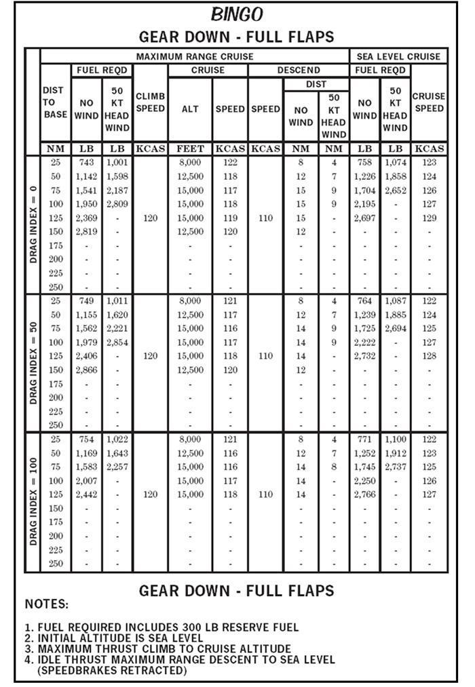
Grafik başlığı BINGO, konfigürasyon GEAR DOWN - FULL FLAPS (bu etiket tablonun altında, notların üstünde tekrarlanır). Sütun düzeni Şekil 2-10 ile aynıdır; tek fark baş rüzgârı sütunlarının 50 KT HEAD WIND olmasıdır. Satırlar yine DRAG INDEX = 0, 50 ve 100 bloklarına ayrılır ve DIST TO BASE 25–250 NM'dir, ama yüksek mesafelerin satırlarında değer yoktur ("-"). Üç blokta da tırmanış hızı 120, alçalma hızı 110 KCAS'tır. Aşağıda "a / b" = rüzgârsız / 50 kt baş rüzgârı; "–" = grafikte değer yok.
DRAG INDEX = 0 — tırmanış hızı (CLIMB SPEED) 120, alçalma hızı (DESCEND SPEED) 110 KCAS (bloktaki tüm mesafeler için tek değer):
| Mesafe (NM) | Gereken yakıt (lb): rüzgârsız / 50 kt baş rüzgârı | Seyir irtifası (ft) | Seyir hızı (KCAS) | Alçalma mesafesi (NM): rüzgârsız / 50 kt baş rüzgârı | Deniz seviyesi seyri, yakıt (lb): rüzgârsız / 50 kt baş rüzgârı | Deniz seviyesi seyir hızı (KCAS) |
|---|---|---|---|---|---|---|
| 25 | 743 / 1.001 | 8.000 | 122 | 8 / 4 | 758 / 1.074 | 123 |
| 50 | 1.142 / 1.598 | 12.500 | 118 | 12 / 7 | 1.226 / 1.858 | 124 |
| 75 | 1.541 / 2.187 | 15.000 | 117 | 15 / 9 | 1.704 / 2.652 | 126 |
| 100 | 1.950 / 2.809 | 15.000 | 118 | 15 / 9 | 2.195 / – | 127 |
| 125 | 2.369 / – | 15.000 | 119 | 15 / – | 2.697 / – | 129 |
| 150 | 2.819 / – | 12.500 | 120 | 12 / – | – / – | – |
| 175–250 | – | – | – | – | – | – |
DRAG INDEX = 50 — tırmanış hızı (CLIMB SPEED) 120, alçalma hızı (DESCEND SPEED) 110 KCAS (bloktaki tüm mesafeler için tek değer):
| Mesafe (NM) | Gereken yakıt (lb): rüzgârsız / 50 kt baş rüzgârı | Seyir irtifası (ft) | Seyir hızı (KCAS) | Alçalma mesafesi (NM): rüzgârsız / 50 kt baş rüzgârı | Deniz seviyesi seyri, yakıt (lb): rüzgârsız / 50 kt baş rüzgârı | Deniz seviyesi seyir hızı (KCAS) |
|---|---|---|---|---|---|---|
| 25 | 749 / 1.011 | 8.000 | 121 | 8 / 4 | 764 / 1.087 | 122 |
| 50 | 1.155 / 1.620 | 12.500 | 117 | 12 / 7 | 1.239 / 1.885 | 124 |
| 75 | 1.562 / 2.221 | 15.000 | 116 | 14 / 9 | 1.725 / 2.694 | 125 |
| 100 | 1.979 / 2.854 | 15.000 | 117 | 14 / 9 | 2.222 / – | 127 |
| 125 | 2.406 / – | 15.000 | 118 | 14 / – | 2.732 / – | 128 |
| 150 | 2.866 / – | 12.500 | 120 | 12 / – | – / – | – |
| 175–250 | – | – | – | – | – | – |
DRAG INDEX = 100 — tırmanış hızı (CLIMB SPEED) 120, alçalma hızı (DESCEND SPEED) 110 KCAS (bloktaki tüm mesafeler için tek değer):
| Mesafe (NM) | Gereken yakıt (lb): rüzgârsız / 50 kt baş rüzgârı | Seyir irtifası (ft) | Seyir hızı (KCAS) | Alçalma mesafesi (NM): rüzgârsız / 50 kt baş rüzgârı | Deniz seviyesi seyri, yakıt (lb): rüzgârsız / 50 kt baş rüzgârı | Deniz seviyesi seyir hızı (KCAS) |
|---|---|---|---|---|---|---|
| 25 | 754 / 1.022 | 8.000 | 121 | 8 / 4 | 771 / 1.100 | 122 |
| 50 | 1.169 / 1.643 | 12.500 | 116 | 12 / 7 | 1.252 / 1.912 | 123 |
| 75 | 1.583 / 2.257 | 15.000 | 116 | 14 / 8 | 1.745 / 2.737 | 125 |
| 100 | 2.007 / – | 15.000 | 117 | 14 / – | 2.250 / – | 126 |
| 125 | 2.442 / – | 15.000 | 118 | 14 / – | 2.766 / – | 127 |
| 150–250 | – | – | – | – | – | – |
Grafik notları (NOTES, Şekil 2-10 ile aynı):
- Gereken yakıta (fuel required) 300 lb yedek yakıt dahildir.
- Başlangıç irtifası deniz seviyesidir.
- Seyir irtifasına maksimum thrust ile tırmanış.
- Deniz seviyesine idle thrust ile maksimum menzil alçalması (speedbrake'ler kapalı).
- 2-33.01Figure 2-11 Dirty Bingo Chart
- 2-33.F1[Figure 2-11] Chart title: BINGO; configuration label: GEAR DOWN - FULL FLAPS (the label GEAR DOWN - FULL FLAPS is repeated below the table, above the NOTES).
- 2-33.F2[Figure 2-11] Column headings: DIST TO BASE (NM); MAXIMUM RANGE CRUISE group: FUEL REQD - NO WIND (LB) and 50 KT HEAD WIND (LB), CLIMB SPEED (KCAS), CRUISE - ALT (FEET) and SPEED (KCAS), DESCEND - SPEED (KCAS) and DIST - NO WIND (NM) and 50 KT HEAD WIND (NM); SEA LEVEL CRUISE group: FUEL REQD - NO WIND (LB) and 50 KT HEAD WIND (LB), CRUISE SPEED (KCAS). Rows are grouped by DRAG INDEX = 0, 50 and 100, each with DIST TO BASE 25, 50, 75, 100, 125, 150, 175, 200, 225 and 250 NM.
- 2-33.F3[Figure 2-11] DRAG INDEX = 0 block: CLIMB SPEED 120 and DESCEND SPEED 110 KCAS (a single value printed for all distances of the block).
- 2-33.F4[Figure 2-11] DRAG INDEX = 0, DIST TO BASE 25 NM: FUEL REQD 743 LB (NO WIND) / 1,001 LB (50 KT HEAD WIND); CRUISE ALT 8,000 FEET, CRUISE SPEED 122 KCAS; DESCEND DIST 8 NM (NO WIND) / 4 NM (50 KT HEAD WIND); SEA LEVEL CRUISE FUEL REQD 758 LB (NO WIND) / 1,074 LB (50 KT HEAD WIND), SEA LEVEL CRUISE SPEED 123 KCAS.
- 2-33.F5[Figure 2-11] DRAG INDEX = 0, DIST TO BASE 50 NM: FUEL REQD 1,142 LB (NO WIND) / 1,598 LB (50 KT HEAD WIND); CRUISE ALT 12,500 FEET, CRUISE SPEED 118 KCAS; DESCEND DIST 12 NM (NO WIND) / 7 NM (50 KT HEAD WIND); SEA LEVEL CRUISE FUEL REQD 1,226 LB (NO WIND) / 1,858 LB (50 KT HEAD WIND), SEA LEVEL CRUISE SPEED 124 KCAS.
- 2-33.F6[Figure 2-11] DRAG INDEX = 0, DIST TO BASE 75 NM: FUEL REQD 1,541 LB (NO WIND) / 2,187 LB (50 KT HEAD WIND); CRUISE ALT 15,000 FEET, CRUISE SPEED 117 KCAS; DESCEND DIST 15 NM (NO WIND) / 9 NM (50 KT HEAD WIND); SEA LEVEL CRUISE FUEL REQD 1,704 LB (NO WIND) / 2,652 LB (50 KT HEAD WIND), SEA LEVEL CRUISE SPEED 126 KCAS.
- 2-33.F7[Figure 2-11] DRAG INDEX = 0, DIST TO BASE 100 NM: FUEL REQD 1,950 LB (NO WIND) / 2,809 LB (50 KT HEAD WIND); CRUISE ALT 15,000 FEET, CRUISE SPEED 118 KCAS; DESCEND DIST 15 NM (NO WIND) / 9 NM (50 KT HEAD WIND); SEA LEVEL CRUISE FUEL REQD 2,195 LB (NO WIND) / - (50 KT HEAD WIND), SEA LEVEL CRUISE SPEED 127 KCAS.
- 2-33.F8[Figure 2-11] DRAG INDEX = 0, DIST TO BASE 125 NM: FUEL REQD 2,369 LB (NO WIND) / - (50 KT HEAD WIND); CRUISE ALT 15,000 FEET, CRUISE SPEED 119 KCAS; DESCEND DIST 15 NM (NO WIND) / - (50 KT HEAD WIND); SEA LEVEL CRUISE FUEL REQD 2,697 LB (NO WIND) / - (50 KT HEAD WIND), SEA LEVEL CRUISE SPEED 129 KCAS.
- 2-33.F9[Figure 2-11] DRAG INDEX = 0, DIST TO BASE 150 NM: FUEL REQD 2,819 LB (NO WIND) / - (50 KT HEAD WIND); CRUISE ALT 12,500 FEET, CRUISE SPEED 120 KCAS; DESCEND DIST 12 NM (NO WIND) / - (50 KT HEAD WIND); SEA LEVEL CRUISE FUEL REQD - (NO WIND) / - (50 KT HEAD WIND), SEA LEVEL CRUISE SPEED -.
- 2-33.F10[Figure 2-11] DRAG INDEX = 0, DIST TO BASE 175, 200, 225 and 250 NM: every column shows '-' (no values given).
- 2-33.F11[Figure 2-11] DRAG INDEX = 50 block: CLIMB SPEED 120 and DESCEND SPEED 110 KCAS (a single value printed for all distances of the block).
- 2-33.F12[Figure 2-11] DRAG INDEX = 50, DIST TO BASE 25 NM: FUEL REQD 749 LB (NO WIND) / 1,011 LB (50 KT HEAD WIND); CRUISE ALT 8,000 FEET, CRUISE SPEED 121 KCAS; DESCEND DIST 8 NM (NO WIND) / 4 NM (50 KT HEAD WIND); SEA LEVEL CRUISE FUEL REQD 764 LB (NO WIND) / 1,087 LB (50 KT HEAD WIND), SEA LEVEL CRUISE SPEED 122 KCAS.
- 2-33.F13[Figure 2-11] DRAG INDEX = 50, DIST TO BASE 50 NM: FUEL REQD 1,155 LB (NO WIND) / 1,620 LB (50 KT HEAD WIND); CRUISE ALT 12,500 FEET, CRUISE SPEED 117 KCAS; DESCEND DIST 12 NM (NO WIND) / 7 NM (50 KT HEAD WIND); SEA LEVEL CRUISE FUEL REQD 1,239 LB (NO WIND) / 1,885 LB (50 KT HEAD WIND), SEA LEVEL CRUISE SPEED 124 KCAS.
- 2-33.F14[Figure 2-11] DRAG INDEX = 50, DIST TO BASE 75 NM: FUEL REQD 1,562 LB (NO WIND) / 2,221 LB (50 KT HEAD WIND); CRUISE ALT 15,000 FEET, CRUISE SPEED 116 KCAS; DESCEND DIST 14 NM (NO WIND) / 9 NM (50 KT HEAD WIND); SEA LEVEL CRUISE FUEL REQD 1,725 LB (NO WIND) / 2,694 LB (50 KT HEAD WIND), SEA LEVEL CRUISE SPEED 125 KCAS.
- 2-33.F15[Figure 2-11] DRAG INDEX = 50, DIST TO BASE 100 NM: FUEL REQD 1,979 LB (NO WIND) / 2,854 LB (50 KT HEAD WIND); CRUISE ALT 15,000 FEET, CRUISE SPEED 117 KCAS; DESCEND DIST 14 NM (NO WIND) / 9 NM (50 KT HEAD WIND); SEA LEVEL CRUISE FUEL REQD 2,222 LB (NO WIND) / - (50 KT HEAD WIND), SEA LEVEL CRUISE SPEED 127 KCAS.
- 2-33.F16[Figure 2-11] DRAG INDEX = 50, DIST TO BASE 125 NM: FUEL REQD 2,406 LB (NO WIND) / - (50 KT HEAD WIND); CRUISE ALT 15,000 FEET, CRUISE SPEED 118 KCAS; DESCEND DIST 14 NM (NO WIND) / - (50 KT HEAD WIND); SEA LEVEL CRUISE FUEL REQD 2,732 LB (NO WIND) / - (50 KT HEAD WIND), SEA LEVEL CRUISE SPEED 128 KCAS.
- 2-33.F17[Figure 2-11] DRAG INDEX = 50, DIST TO BASE 150 NM: FUEL REQD 2,866 LB (NO WIND) / - (50 KT HEAD WIND); CRUISE ALT 12,500 FEET, CRUISE SPEED 120 KCAS; DESCEND DIST 12 NM (NO WIND) / - (50 KT HEAD WIND); SEA LEVEL CRUISE FUEL REQD - (NO WIND) / - (50 KT HEAD WIND), SEA LEVEL CRUISE SPEED -.
- 2-33.F18[Figure 2-11] DRAG INDEX = 50, DIST TO BASE 175, 200, 225 and 250 NM: every column shows '-' (no values given).
- 2-33.F19[Figure 2-11] DRAG INDEX = 100 block: CLIMB SPEED 120 and DESCEND SPEED 110 KCAS (a single value printed for all distances of the block).
- 2-33.F20[Figure 2-11] DRAG INDEX = 100, DIST TO BASE 25 NM: FUEL REQD 754 LB (NO WIND) / 1,022 LB (50 KT HEAD WIND); CRUISE ALT 8,000 FEET, CRUISE SPEED 121 KCAS; DESCEND DIST 8 NM (NO WIND) / 4 NM (50 KT HEAD WIND); SEA LEVEL CRUISE FUEL REQD 771 LB (NO WIND) / 1,100 LB (50 KT HEAD WIND), SEA LEVEL CRUISE SPEED 122 KCAS.
- 2-33.F21[Figure 2-11] DRAG INDEX = 100, DIST TO BASE 50 NM: FUEL REQD 1,169 LB (NO WIND) / 1,643 LB (50 KT HEAD WIND); CRUISE ALT 12,500 FEET, CRUISE SPEED 116 KCAS; DESCEND DIST 12 NM (NO WIND) / 7 NM (50 KT HEAD WIND); SEA LEVEL CRUISE FUEL REQD 1,252 LB (NO WIND) / 1,912 LB (50 KT HEAD WIND), SEA LEVEL CRUISE SPEED 123 KCAS.
- 2-33.F22[Figure 2-11] DRAG INDEX = 100, DIST TO BASE 75 NM: FUEL REQD 1,583 LB (NO WIND) / 2,257 LB (50 KT HEAD WIND); CRUISE ALT 15,000 FEET, CRUISE SPEED 116 KCAS; DESCEND DIST 14 NM (NO WIND) / 8 NM (50 KT HEAD WIND); SEA LEVEL CRUISE FUEL REQD 1,745 LB (NO WIND) / 2,737 LB (50 KT HEAD WIND), SEA LEVEL CRUISE SPEED 125 KCAS.
- 2-33.F23[Figure 2-11] DRAG INDEX = 100, DIST TO BASE 100 NM: FUEL REQD 2,007 LB (NO WIND) / - (50 KT HEAD WIND); CRUISE ALT 15,000 FEET, CRUISE SPEED 117 KCAS; DESCEND DIST 14 NM (NO WIND) / - (50 KT HEAD WIND); SEA LEVEL CRUISE FUEL REQD 2,250 LB (NO WIND) / - (50 KT HEAD WIND), SEA LEVEL CRUISE SPEED 126 KCAS.
- 2-33.F24[Figure 2-11] DRAG INDEX = 100, DIST TO BASE 125 NM: FUEL REQD 2,442 LB (NO WIND) / - (50 KT HEAD WIND); CRUISE ALT 15,000 FEET, CRUISE SPEED 118 KCAS; DESCEND DIST 14 NM (NO WIND) / - (50 KT HEAD WIND); SEA LEVEL CRUISE FUEL REQD 2,766 LB (NO WIND) / - (50 KT HEAD WIND), SEA LEVEL CRUISE SPEED 127 KCAS.
- 2-33.F25[Figure 2-11] DRAG INDEX = 100, DIST TO BASE 150, 175, 200, 225 and 250 NM: every column shows '-' (no values given).
- 2-33.F26[Figure 2-11] NOTES: 1. FUEL REQUIRED INCLUDES 300 LB RESERVE FUEL
- 2-33.F27[Figure 2-11] NOTES: 2. INITIAL ALTITUDE IS SEA LEVEL
- 2-33.F28[Figure 2-11] NOTES: 3. MAXIMUM THRUST CLIMB TO CRUISE ALTITUDE
- 2-33.F29[Figure 2-11] NOTES: 4. IDLE THRUST MAXIMUM RANGE DESCENT TO SEA LEVEL (SPEEDBRAKES RETRACTED)
Şematik / ölçeksiz. Eğitim amaçlı, uçuşta kullanılmaz. Değerler Şekil 2-10 ve 2-11'den aynen aktarılmıştır; "–" grafikte değer olmadığını gösterir. Güncel grafikler için PCL veya NATOPS'a bakılır.
- 2-30.F1[Figure 2-10] Chart title: BINGO; configuration label: GEAR UP - FLAPS UP (the label GEAR UP - FLAPS UP is repeated below the table, above the NOTES).
- 2-30.F2[Figure 2-10] Column headings: DIST TO BASE (NM); MAXIMUM RANGE CRUISE group: FUEL REQD - NO WIND (LB) and 100 KT HEAD WIND (LB), CLIMB SPEED (KCAS), CRUISE - ALT (FEET) and SPEED (KCAS), DESCEND - SPEED (KCAS) and DIST - NO WIND (NM) and 100 KT HEAD WIND (NM); SEA LEVEL CRUISE group: FUEL REQD - NO WIND (LB) and 100 KT HEAD WIND (LB), CRUISE SPEED (KCAS). Rows are grouped by DRAG INDEX = 0, 50 and 100, each with DIST TO BASE 25, 50, 75, 100, 125, 150, 175, 200, 225 and 250 NM.
- 2-30.F3[Figure 2-10] DRAG INDEX = 0 block: CLIMB SPEED 300/0.75 and DESCEND SPEED 180 KCAS (a single value printed for all distances of the block).
- 2-30.F4[Figure 2-10] DRAG INDEX = 0, DIST TO BASE 25 NM: FUEL REQD 420 LB (NO WIND) / 515 LB (100 KT HEAD WIND); CRUISE ALT 5,000 FEET, CRUISE SPEED 221 KCAS; DESCEND DIST 14 NM (NO WIND) / 6 NM (100 KT HEAD WIND); SEA LEVEL CRUISE FUEL REQD 429 LB (NO WIND) / 535 LB (100 KT HEAD WIND), SEA LEVEL CRUISE SPEED 220 KCAS.
- 2-30.F5[Figure 2-10] DRAG INDEX = 0, DIST TO BASE 50 NM: FUEL REQD 528 LB (NO WIND) / 682 LB (100 KT HEAD WIND); CRUISE ALT 10,000 FEET, CRUISE SPEED 222 KCAS; DESCEND DIST 27 NM (NO WIND) / 13 NM (100 KT HEAD WIND); SEA LEVEL CRUISE FUEL REQD 559 LB (NO WIND) / 771 LB (100 KT HEAD WIND), SEA LEVEL CRUISE SPEED 221 KCAS.
- 2-30.F6[Figure 2-10] DRAG INDEX = 0, DIST TO BASE 75 NM: FUEL REQD 625 LB (NO WIND) / 815 LB (100 KT HEAD WIND); CRUISE ALT 15,000 FEET, CRUISE SPEED 219 KCAS; DESCEND DIST 41 NM (NO WIND) / 21 NM (100 KT HEAD WIND); SEA LEVEL CRUISE FUEL REQD 690 LB (NO WIND) / 1,006 LB (100 KT HEAD WIND), SEA LEVEL CRUISE SPEED 221 KCAS.
- 2-30.F7[Figure 2-10] DRAG INDEX = 0, DIST TO BASE 100 NM: FUEL REQD 712 LB (NO WIND) / 921 LB (100 KT HEAD WIND); CRUISE ALT 20,000 FEET, CRUISE SPEED 218 KCAS; DESCEND DIST 55 NM (NO WIND) / 29 NM (100 KT HEAD WIND); SEA LEVEL CRUISE FUEL REQD 820 LB (NO WIND) / 1,240 LB (100 KT HEAD WIND), SEA LEVEL CRUISE SPEED 222 KCAS.
- 2-30.F8[Figure 2-10] DRAG INDEX = 0, DIST TO BASE 125 NM: FUEL REQD 795 LB (NO WIND) / 1,006 LB (100 KT HEAD WIND); CRUISE ALT 25,000 FEET, CRUISE SPEED 225 KCAS; DESCEND DIST 69 NM (NO WIND) / 37 NM (100 KT HEAD WIND); SEA LEVEL CRUISE FUEL REQD 952 LB (NO WIND) / 1,474 LB (100 KT HEAD WIND), SEA LEVEL CRUISE SPEED 222 KCAS.
- 2-30.F9[Figure 2-10] DRAG INDEX = 0, DIST TO BASE 150 NM: FUEL REQD 869 LB (NO WIND) / 1,081 LB (100 KT HEAD WIND); CRUISE ALT 30,000 FEET, CRUISE SPEED 224 KCAS; DESCEND DIST 83 NM (NO WIND) / 46 NM (100 KT HEAD WIND); SEA LEVEL CRUISE FUEL REQD 1,083 LB (NO WIND) / 1,707 LB (100 KT HEAD WIND), SEA LEVEL CRUISE SPEED 223 KCAS.
- 2-30.F10[Figure 2-10] DRAG INDEX = 0, DIST TO BASE 175 NM: FUEL REQD 935 LB (NO WIND) / 1,150 LB (100 KT HEAD WIND); CRUISE ALT 35,000 FEET, CRUISE SPEED 215 KCAS; DESCEND DIST 97 NM (NO WIND) / 55 NM (100 KT HEAD WIND); SEA LEVEL CRUISE FUEL REQD 1,216 LB (NO WIND) / 1,940 LB (100 KT HEAD WIND), SEA LEVEL CRUISE SPEED 224 KCAS.
- 2-30.F11[Figure 2-10] DRAG INDEX = 0, DIST TO BASE 200 NM: FUEL REQD 999 LB (NO WIND) / 1,238 LB (100 KT HEAD WIND); CRUISE ALT 35,000 FEET, CRUISE SPEED 216 KCAS; DESCEND DIST 97 NM (NO WIND) / 55 NM (100 KT HEAD WIND); SEA LEVEL CRUISE FUEL REQD 1,349 LB (NO WIND) / 2,172 LB (100 KT HEAD WIND), SEA LEVEL CRUISE SPEED 224 KCAS.
- 2-30.F12[Figure 2-10] DRAG INDEX = 0, DIST TO BASE 225 NM: FUEL REQD 1,063 LB (NO WIND) / 1,327 LB (100 KT HEAD WIND); CRUISE ALT 35,000 FEET, CRUISE SPEED 216 KCAS; DESCEND DIST 97 NM (NO WIND) / 55 NM (100 KT HEAD WIND); SEA LEVEL CRUISE FUEL REQD 1,482 LB (NO WIND) / 2,404 LB (100 KT HEAD WIND), SEA LEVEL CRUISE SPEED 225 KCAS.
- 2-30.F13[Figure 2-10] DRAG INDEX = 0, DIST TO BASE 250 NM: FUEL REQD 1,127 LB (NO WIND) / 1,392 LB (100 KT HEAD WIND); CRUISE ALT 40,000 FEET, CRUISE SPEED 213 KCAS; DESCEND DIST 111 NM (NO WIND) / 65 NM (100 KT HEAD WIND); SEA LEVEL CRUISE FUEL REQD 1,616 LB (NO WIND) / 2,635 LB (100 KT HEAD WIND), SEA LEVEL CRUISE SPEED 226 KCAS.
- 2-30.F14[Figure 2-10] DRAG INDEX = 50 block: CLIMB SPEED 265/0.70 and DESCEND SPEED 170 KCAS (a single value printed for all distances of the block).
- 2-30.F15[Figure 2-10] DRAG INDEX = 50, DIST TO BASE 25 NM: FUEL REQD 433 LB (NO WIND) / 542 LB (100 KT HEAD WIND); CRUISE ALT 5,000 FEET, CRUISE SPEED 214 KCAS; DESCEND DIST 12 NM (NO WIND) / 5 NM (100 KT HEAD WIND); SEA LEVEL CRUISE FUEL REQD 441 LB (NO WIND) / 562 LB (100 KT HEAD WIND), SEA LEVEL CRUISE SPEED 214 KCAS.
- 2-30.F16[Figure 2-10] DRAG INDEX = 50, DIST TO BASE 50 NM: FUEL REQD 551 LB (NO WIND) / 731 LB (100 KT HEAD WIND); CRUISE ALT 10,000 FEET, CRUISE SPEED 214 KCAS; DESCEND DIST 24 NM (NO WIND) / 11 NM (100 KT HEAD WIND); SEA LEVEL CRUISE FUEL REQD 582 LB (NO WIND) / 823 LB (100 KT HEAD WIND), SEA LEVEL CRUISE SPEED 215 KCAS.
- 2-30.F17[Figure 2-10] DRAG INDEX = 50, DIST TO BASE 75 NM: FUEL REQD 656 LB (NO WIND) / 875 LB (100 KT HEAD WIND); CRUISE ALT 15,000 FEET, CRUISE SPEED 214 KCAS; DESCEND DIST 37 NM (NO WIND) / 17 NM (100 KT HEAD WIND); SEA LEVEL CRUISE FUEL REQD 724 LB (NO WIND) / 1,085 LB (100 KT HEAD WIND), SEA LEVEL CRUISE SPEED 216 KCAS.
- 2-30.F18[Figure 2-10] DRAG INDEX = 50, DIST TO BASE 100 NM: FUEL REQD 752 LB (NO WIND) / 993 LB (100 KT HEAD WIND); CRUISE ALT 20,000 FEET, CRUISE SPEED 213 KCAS; DESCEND DIST 49 NM (NO WIND) / 24 NM (100 KT HEAD WIND); SEA LEVEL CRUISE FUEL REQD 867 LB (NO WIND) / 1,348 LB (100 KT HEAD WIND), SEA LEVEL CRUISE SPEED 216 KCAS.
- 2-30.F19[Figure 2-10] DRAG INDEX = 50, DIST TO BASE 125 NM: FUEL REQD 840 LB (NO WIND) / 1,089 LB (100 KT HEAD WIND); CRUISE ALT 25,000 FEET, CRUISE SPEED 215 KCAS; DESCEND DIST 61 NM (NO WIND) / 31 NM (100 KT HEAD WIND); SEA LEVEL CRUISE FUEL REQD 1,010 LB (NO WIND) / 1,610 LB (100 KT HEAD WIND), SEA LEVEL CRUISE SPEED 216 KCAS.
- 2-30.F20[Figure 2-10] DRAG INDEX = 50, DIST TO BASE 150 NM: FUEL REQD 924 LB (NO WIND) / 1,175 LB (100 KT HEAD WIND); CRUISE ALT 30,000 FEET, CRUISE SPEED 214 KCAS; DESCEND DIST 74 NM (NO WIND) / 39 NM (100 KT HEAD WIND); SEA LEVEL CRUISE FUEL REQD 1,153 LB (NO WIND) / 1,872 LB (100 KT HEAD WIND), SEA LEVEL CRUISE SPEED 217 KCAS.
- 2-30.F21[Figure 2-10] DRAG INDEX = 50, DIST TO BASE 175 NM: FUEL REQD 1,000 LB (NO WIND) / 1,259 LB (100 KT HEAD WIND); CRUISE ALT 35,000 FEET, CRUISE SPEED 208 KCAS; DESCEND DIST 86 NM (NO WIND) / 47 NM (100 KT HEAD WIND); SEA LEVEL CRUISE FUEL REQD 1,297 LB (NO WIND) / 2,135 LB (100 KT HEAD WIND), SEA LEVEL CRUISE SPEED 217 KCAS.
- 2-30.F22[Figure 2-10] DRAG INDEX = 50, DIST TO BASE 200 NM: FUEL REQD 1,074 LB (NO WIND) / 1,361 LB (100 KT HEAD WIND); CRUISE ALT 35,000 FEET, CRUISE SPEED 208 KCAS; DESCEND DIST 86 NM (NO WIND) / 47 NM (100 KT HEAD WIND); SEA LEVEL CRUISE FUEL REQD 1,442 LB (NO WIND) / 2,398 LB (100 KT HEAD WIND), SEA LEVEL CRUISE SPEED 218 KCAS.
- 2-30.F23[Figure 2-10] DRAG INDEX = 50, DIST TO BASE 225 NM: FUEL REQD 1,147 LB (NO WIND) / 1,464 LB (100 KT HEAD WIND); CRUISE ALT 35,000 FEET, CRUISE SPEED 208 KCAS; DESCEND DIST 86 NM (NO WIND) / 47 NM (100 KT HEAD WIND); SEA LEVEL CRUISE FUEL REQD 1,587 LB (NO WIND) / 2,661 LB (100 KT HEAD WIND), SEA LEVEL CRUISE SPEED 218 KCAS.
- 2-30.F24[Figure 2-10] DRAG INDEX = 50, DIST TO BASE 250 NM: FUEL REQD 1,221 LB (NO WIND) / 1,568 LB (100 KT HEAD WIND); CRUISE ALT 35,000 FEET, CRUISE SPEED 209 KCAS; DESCEND DIST 86 NM (NO WIND) / 47 NM (100 KT HEAD WIND); SEA LEVEL CRUISE FUEL REQD 1,733 LB (NO WIND) / - (100 KT HEAD WIND), SEA LEVEL CRUISE SPEED 219 KCAS.
- 2-30.F25[Figure 2-10] DRAG INDEX = 100 block: CLIMB SPEED 245/0.60 and DESCEND SPEED 165 KCAS (a single value printed for all distances of the block).
- 2-30.F26[Figure 2-10] DRAG INDEX = 100, DIST TO BASE 25 NM: FUEL REQD 444 LB (NO WIND) / 566 LB (100 KT HEAD WIND); CRUISE ALT 5,000 FEET, CRUISE SPEED 210 KCAS; DESCEND DIST 11 NM (NO WIND) / 5 NM (100 KT HEAD WIND); SEA LEVEL CRUISE FUEL REQD 452 LB (NO WIND) / 589 LB (100 KT HEAD WIND), SEA LEVEL CRUISE SPEED 209 KCAS.
- 2-30.F27[Figure 2-10] DRAG INDEX = 100, DIST TO BASE 50 NM: FUEL REQD 572 LB (NO WIND) / 773 LB (100 KT HEAD WIND); CRUISE ALT 10,000 FEET, CRUISE SPEED 208 KCAS; DESCEND DIST 22 NM (NO WIND) / 10 NM (100 KT HEAD WIND); SEA LEVEL CRUISE FUEL REQD 604 LB (NO WIND) / 877 LB (100 KT HEAD WIND), SEA LEVEL CRUISE SPEED 209 KCAS.
- 2-30.F28[Figure 2-10] DRAG INDEX = 100, DIST TO BASE 75 NM: FUEL REQD 685 LB (NO WIND) / 993 LB (100 KT HEAD WIND); CRUISE ALT 15,000 FEET, CRUISE SPEED 207 KCAS; DESCEND DIST 33 NM (NO WIND) / 15 NM (100 KT HEAD WIND); SEA LEVEL CRUISE FUEL REQD 757 LB (NO WIND) / 1,165 LB (100 KT HEAD WIND), SEA LEVEL CRUISE SPEED 210 KCAS.
- 2-30.F29[Figure 2-10] DRAG INDEX = 100, DIST TO BASE 100 NM: FUEL REQD 788 LB (NO WIND) / 1,060 LB (100 KT HEAD WIND); CRUISE ALT 20,000 FEET, CRUISE SPEED 207 KCAS; DESCEND DIST 44 NM (NO WIND) / 21 NM (100 KT HEAD WIND); SEA LEVEL CRUISE FUEL REQD 911 LB (NO WIND) / 1,454 LB (100 KT HEAD WIND), SEA LEVEL CRUISE SPEED 211 KCAS.
- 2-30.F30[Figure 2-10] DRAG INDEX = 100, DIST TO BASE 125 NM: FUEL REQD 880 LB (NO WIND) / 1,132 LB (100 KT HEAD WIND); CRUISE ALT 30,000 FEET, CRUISE SPEED 201 KCAS; DESCEND DIST 66 NM (NO WIND) / 34 NM (100 KT HEAD WIND); SEA LEVEL CRUISE FUEL REQD 1,066 LB (NO WIND) / 1,742 LB (100 KT HEAD WIND), SEA LEVEL CRUISE SPEED 211 KCAS.
- 2-30.F31[Figure 2-10] DRAG INDEX = 100, DIST TO BASE 150 NM: FUEL REQD 965 LB (NO WIND) / 1,257 LB (100 KT HEAD WIND); CRUISE ALT 30,000 FEET, CRUISE SPEED 201 KCAS; DESCEND DIST 66 NM (NO WIND) / 34 NM (100 KT HEAD WIND); SEA LEVEL CRUISE FUEL REQD 1,221 LB (NO WIND) / 2,030 LB (100 KT HEAD WIND), SEA LEVEL CRUISE SPEED 212 KCAS.
- 2-30.F32[Figure 2-10] DRAG INDEX = 100, DIST TO BASE 175 NM: FUEL REQD 1,051 LB (NO WIND) / 1,358 LB (100 KT HEAD WIND); CRUISE ALT 35,000 FEET, CRUISE SPEED 195 KCAS; DESCEND DIST 77 NM (NO WIND) / 41 NM (100 KT HEAD WIND); SEA LEVEL CRUISE FUEL REQD 1,377 LB (NO WIND) / 2,318 LB (100 KT HEAD WIND), SEA LEVEL CRUISE SPEED 212 KCAS.
- 2-30.F33[Figure 2-10] DRAG INDEX = 100, DIST TO BASE 200 NM: FUEL REQD 1,133 LB (NO WIND) / 1,477 LB (100 KT HEAD WIND); CRUISE ALT 35,000 FEET, CRUISE SPEED 195 KCAS; DESCEND DIST 77 NM (NO WIND) / 41 NM (100 KT HEAD WIND); SEA LEVEL CRUISE FUEL REQD 1,533 LB (NO WIND) / 2,606 LB (100 KT HEAD WIND), SEA LEVEL CRUISE SPEED 213 KCAS.
- 2-30.F34[Figure 2-10] DRAG INDEX = 100, DIST TO BASE 225 NM: FUEL REQD 1,216 LB (NO WIND) / 1,597 LB (100 KT HEAD WIND); CRUISE ALT 35,000 FEET, CRUISE SPEED 196 KCAS; DESCEND DIST 77 NM (NO WIND) / 41 NM (100 KT HEAD WIND); SEA LEVEL CRUISE FUEL REQD 1,690 LB (NO WIND) / 2,893 LB (100 KT HEAD WIND), SEA LEVEL CRUISE SPEED 213 KCAS.
- 2-30.F35[Figure 2-10] DRAG INDEX = 100, DIST TO BASE 250 NM: FUEL REQD 1,299 LB (NO WIND) / 1,717 LB (100 KT HEAD WIND); CRUISE ALT 35,000 FEET, CRUISE SPEED 196 KCAS; DESCEND DIST 77 NM (NO WIND) / 41 NM (100 KT HEAD WIND); SEA LEVEL CRUISE FUEL REQD 1,848 LB (NO WIND) / - (100 KT HEAD WIND), SEA LEVEL CRUISE SPEED 214 KCAS.
- 2-30.F36[Figure 2-10] NOTES: 1. FUEL REQUIRED INCLUDES 300 LB RESERVE FUEL
- 2-30.F37[Figure 2-10] NOTES: 2. INITIAL ALTITUDE IS SEA LEVEL
- 2-30.F38[Figure 2-10] NOTES: 3. MAXIMUM THRUST CLIMB TO CRUISE ALTITUDE
- 2-30.F39[Figure 2-10] NOTES: 4. IDLE THRUST MAXIMUM RANGE DESCENT TO SEA LEVEL (SPEEDBRAKES RETRACTED)
- 2-33.F1[Figure 2-11] Chart title: BINGO; configuration label: GEAR DOWN - FULL FLAPS (the label GEAR DOWN - FULL FLAPS is repeated below the table, above the NOTES).
- 2-33.F2[Figure 2-11] Column headings: DIST TO BASE (NM); MAXIMUM RANGE CRUISE group: FUEL REQD - NO WIND (LB) and 50 KT HEAD WIND (LB), CLIMB SPEED (KCAS), CRUISE - ALT (FEET) and SPEED (KCAS), DESCEND - SPEED (KCAS) and DIST - NO WIND (NM) and 50 KT HEAD WIND (NM); SEA LEVEL CRUISE group: FUEL REQD - NO WIND (LB) and 50 KT HEAD WIND (LB), CRUISE SPEED (KCAS). Rows are grouped by DRAG INDEX = 0, 50 and 100, each with DIST TO BASE 25, 50, 75, 100, 125, 150, 175, 200, 225 and 250 NM.
- 2-33.F3[Figure 2-11] DRAG INDEX = 0 block: CLIMB SPEED 120 and DESCEND SPEED 110 KCAS (a single value printed for all distances of the block).
- 2-33.F4[Figure 2-11] DRAG INDEX = 0, DIST TO BASE 25 NM: FUEL REQD 743 LB (NO WIND) / 1,001 LB (50 KT HEAD WIND); CRUISE ALT 8,000 FEET, CRUISE SPEED 122 KCAS; DESCEND DIST 8 NM (NO WIND) / 4 NM (50 KT HEAD WIND); SEA LEVEL CRUISE FUEL REQD 758 LB (NO WIND) / 1,074 LB (50 KT HEAD WIND), SEA LEVEL CRUISE SPEED 123 KCAS.
- 2-33.F5[Figure 2-11] DRAG INDEX = 0, DIST TO BASE 50 NM: FUEL REQD 1,142 LB (NO WIND) / 1,598 LB (50 KT HEAD WIND); CRUISE ALT 12,500 FEET, CRUISE SPEED 118 KCAS; DESCEND DIST 12 NM (NO WIND) / 7 NM (50 KT HEAD WIND); SEA LEVEL CRUISE FUEL REQD 1,226 LB (NO WIND) / 1,858 LB (50 KT HEAD WIND), SEA LEVEL CRUISE SPEED 124 KCAS.
- 2-33.F6[Figure 2-11] DRAG INDEX = 0, DIST TO BASE 75 NM: FUEL REQD 1,541 LB (NO WIND) / 2,187 LB (50 KT HEAD WIND); CRUISE ALT 15,000 FEET, CRUISE SPEED 117 KCAS; DESCEND DIST 15 NM (NO WIND) / 9 NM (50 KT HEAD WIND); SEA LEVEL CRUISE FUEL REQD 1,704 LB (NO WIND) / 2,652 LB (50 KT HEAD WIND), SEA LEVEL CRUISE SPEED 126 KCAS.
- 2-33.F7[Figure 2-11] DRAG INDEX = 0, DIST TO BASE 100 NM: FUEL REQD 1,950 LB (NO WIND) / 2,809 LB (50 KT HEAD WIND); CRUISE ALT 15,000 FEET, CRUISE SPEED 118 KCAS; DESCEND DIST 15 NM (NO WIND) / 9 NM (50 KT HEAD WIND); SEA LEVEL CRUISE FUEL REQD 2,195 LB (NO WIND) / - (50 KT HEAD WIND), SEA LEVEL CRUISE SPEED 127 KCAS.
- 2-33.F8[Figure 2-11] DRAG INDEX = 0, DIST TO BASE 125 NM: FUEL REQD 2,369 LB (NO WIND) / - (50 KT HEAD WIND); CRUISE ALT 15,000 FEET, CRUISE SPEED 119 KCAS; DESCEND DIST 15 NM (NO WIND) / - (50 KT HEAD WIND); SEA LEVEL CRUISE FUEL REQD 2,697 LB (NO WIND) / - (50 KT HEAD WIND), SEA LEVEL CRUISE SPEED 129 KCAS.
- 2-33.F9[Figure 2-11] DRAG INDEX = 0, DIST TO BASE 150 NM: FUEL REQD 2,819 LB (NO WIND) / - (50 KT HEAD WIND); CRUISE ALT 12,500 FEET, CRUISE SPEED 120 KCAS; DESCEND DIST 12 NM (NO WIND) / - (50 KT HEAD WIND); SEA LEVEL CRUISE FUEL REQD - (NO WIND) / - (50 KT HEAD WIND), SEA LEVEL CRUISE SPEED -.
- 2-33.F10[Figure 2-11] DRAG INDEX = 0, DIST TO BASE 175, 200, 225 and 250 NM: every column shows '-' (no values given).
- 2-33.F11[Figure 2-11] DRAG INDEX = 50 block: CLIMB SPEED 120 and DESCEND SPEED 110 KCAS (a single value printed for all distances of the block).
- 2-33.F12[Figure 2-11] DRAG INDEX = 50, DIST TO BASE 25 NM: FUEL REQD 749 LB (NO WIND) / 1,011 LB (50 KT HEAD WIND); CRUISE ALT 8,000 FEET, CRUISE SPEED 121 KCAS; DESCEND DIST 8 NM (NO WIND) / 4 NM (50 KT HEAD WIND); SEA LEVEL CRUISE FUEL REQD 764 LB (NO WIND) / 1,087 LB (50 KT HEAD WIND), SEA LEVEL CRUISE SPEED 122 KCAS.
- 2-33.F13[Figure 2-11] DRAG INDEX = 50, DIST TO BASE 50 NM: FUEL REQD 1,155 LB (NO WIND) / 1,620 LB (50 KT HEAD WIND); CRUISE ALT 12,500 FEET, CRUISE SPEED 117 KCAS; DESCEND DIST 12 NM (NO WIND) / 7 NM (50 KT HEAD WIND); SEA LEVEL CRUISE FUEL REQD 1,239 LB (NO WIND) / 1,885 LB (50 KT HEAD WIND), SEA LEVEL CRUISE SPEED 124 KCAS.
- 2-33.F14[Figure 2-11] DRAG INDEX = 50, DIST TO BASE 75 NM: FUEL REQD 1,562 LB (NO WIND) / 2,221 LB (50 KT HEAD WIND); CRUISE ALT 15,000 FEET, CRUISE SPEED 116 KCAS; DESCEND DIST 14 NM (NO WIND) / 9 NM (50 KT HEAD WIND); SEA LEVEL CRUISE FUEL REQD 1,725 LB (NO WIND) / 2,694 LB (50 KT HEAD WIND), SEA LEVEL CRUISE SPEED 125 KCAS.
- 2-33.F15[Figure 2-11] DRAG INDEX = 50, DIST TO BASE 100 NM: FUEL REQD 1,979 LB (NO WIND) / 2,854 LB (50 KT HEAD WIND); CRUISE ALT 15,000 FEET, CRUISE SPEED 117 KCAS; DESCEND DIST 14 NM (NO WIND) / 9 NM (50 KT HEAD WIND); SEA LEVEL CRUISE FUEL REQD 2,222 LB (NO WIND) / - (50 KT HEAD WIND), SEA LEVEL CRUISE SPEED 127 KCAS.
- 2-33.F16[Figure 2-11] DRAG INDEX = 50, DIST TO BASE 125 NM: FUEL REQD 2,406 LB (NO WIND) / - (50 KT HEAD WIND); CRUISE ALT 15,000 FEET, CRUISE SPEED 118 KCAS; DESCEND DIST 14 NM (NO WIND) / - (50 KT HEAD WIND); SEA LEVEL CRUISE FUEL REQD 2,732 LB (NO WIND) / - (50 KT HEAD WIND), SEA LEVEL CRUISE SPEED 128 KCAS.
- 2-33.F17[Figure 2-11] DRAG INDEX = 50, DIST TO BASE 150 NM: FUEL REQD 2,866 LB (NO WIND) / - (50 KT HEAD WIND); CRUISE ALT 12,500 FEET, CRUISE SPEED 120 KCAS; DESCEND DIST 12 NM (NO WIND) / - (50 KT HEAD WIND); SEA LEVEL CRUISE FUEL REQD - (NO WIND) / - (50 KT HEAD WIND), SEA LEVEL CRUISE SPEED -.
- 2-33.F18[Figure 2-11] DRAG INDEX = 50, DIST TO BASE 175, 200, 225 and 250 NM: every column shows '-' (no values given).
- 2-33.F19[Figure 2-11] DRAG INDEX = 100 block: CLIMB SPEED 120 and DESCEND SPEED 110 KCAS (a single value printed for all distances of the block).
- 2-33.F20[Figure 2-11] DRAG INDEX = 100, DIST TO BASE 25 NM: FUEL REQD 754 LB (NO WIND) / 1,022 LB (50 KT HEAD WIND); CRUISE ALT 8,000 FEET, CRUISE SPEED 121 KCAS; DESCEND DIST 8 NM (NO WIND) / 4 NM (50 KT HEAD WIND); SEA LEVEL CRUISE FUEL REQD 771 LB (NO WIND) / 1,100 LB (50 KT HEAD WIND), SEA LEVEL CRUISE SPEED 122 KCAS.
- 2-33.F21[Figure 2-11] DRAG INDEX = 100, DIST TO BASE 50 NM: FUEL REQD 1,169 LB (NO WIND) / 1,643 LB (50 KT HEAD WIND); CRUISE ALT 12,500 FEET, CRUISE SPEED 116 KCAS; DESCEND DIST 12 NM (NO WIND) / 7 NM (50 KT HEAD WIND); SEA LEVEL CRUISE FUEL REQD 1,252 LB (NO WIND) / 1,912 LB (50 KT HEAD WIND), SEA LEVEL CRUISE SPEED 123 KCAS.
- 2-33.F22[Figure 2-11] DRAG INDEX = 100, DIST TO BASE 75 NM: FUEL REQD 1,583 LB (NO WIND) / 2,257 LB (50 KT HEAD WIND); CRUISE ALT 15,000 FEET, CRUISE SPEED 116 KCAS; DESCEND DIST 14 NM (NO WIND) / 8 NM (50 KT HEAD WIND); SEA LEVEL CRUISE FUEL REQD 1,745 LB (NO WIND) / 2,737 LB (50 KT HEAD WIND), SEA LEVEL CRUISE SPEED 125 KCAS.
- 2-33.F23[Figure 2-11] DRAG INDEX = 100, DIST TO BASE 100 NM: FUEL REQD 2,007 LB (NO WIND) / - (50 KT HEAD WIND); CRUISE ALT 15,000 FEET, CRUISE SPEED 117 KCAS; DESCEND DIST 14 NM (NO WIND) / - (50 KT HEAD WIND); SEA LEVEL CRUISE FUEL REQD 2,250 LB (NO WIND) / - (50 KT HEAD WIND), SEA LEVEL CRUISE SPEED 126 KCAS.
- 2-33.F24[Figure 2-11] DRAG INDEX = 100, DIST TO BASE 125 NM: FUEL REQD 2,442 LB (NO WIND) / - (50 KT HEAD WIND); CRUISE ALT 15,000 FEET, CRUISE SPEED 118 KCAS; DESCEND DIST 14 NM (NO WIND) / - (50 KT HEAD WIND); SEA LEVEL CRUISE FUEL REQD 2,766 LB (NO WIND) / - (50 KT HEAD WIND), SEA LEVEL CRUISE SPEED 127 KCAS.
- 2-33.F25[Figure 2-11] DRAG INDEX = 100, DIST TO BASE 150, 175, 200, 225 and 250 NM: every column shows '-' (no values given).
- 2-33.F26[Figure 2-11] NOTES: 1. FUEL REQUIRED INCLUDES 300 LB RESERVE FUEL
- 2-33.F27[Figure 2-11] NOTES: 2. INITIAL ALTITUDE IS SEA LEVEL
- 2-33.F28[Figure 2-11] NOTES: 3. MAXIMUM THRUST CLIMB TO CRUISE ALTITUDE
- 2-33.F29[Figure 2-11] NOTES: 4. IDLE THRUST MAXIMUM RANGE DESCENT TO SEA LEVEL (SPEEDBRAKES RETRACTED)
Kirli bingo uçuş prosedürleri
Bingo yakıt durumuna ulaşınca bingo heading'ine dönün. Dönüşü veya tırmanışı geciktirmeyin, ama diğer uçaklara karşı gözünüz açık olsun. Hesaplanan bingo profilini uçun ve MRT ile tırmanın. Temiz bingo uygularken bildireceğiniz bilgilerin aynısını bildirin.
- 2-32.17(e) Bingo Flight Procedures (Dirty). Upon reaching bingo fuel status, turn to the bingo heading.
- 2-32.18Do not delay performing the turn or climb, but be on the lookout for other aircraft.
- 2-32.19Fly the computed bingo profile and climb at MRT.
- 2-32.20Communicate the same information as if executing a clean bingo.
Patlak lastik (Blown Tire)
Kirli bingonun en yaygın nedeni patlak lastiktir. Bir wingman sizi gözle kontrol edip flaplarda hasar veya parça (debris) olmadığını teyit edebilirse, yakıt tasarrufu için flapleri kaldırıp gear down / flaps up kirli bingo yapabilirsiniz.
- 2-32.21(f) Blown Tire. The most common reason for a dirty bingo is a blown tire.
- 2-32.22If a wingman can visually inspect you and confirm no damage or debris in the flaps, you can raise the flaps and perform a gear down/flaps up dirty bingo to save fuel.
Metin gear down / flaps up kirli bingodan söz ediyor; ama bu belgede yalnızca GEAR UP - FLAPS UP (Şekil 2-10) ve GEAR DOWN - FULL FLAPS (Şekil 2-11) grafikleri var. Gear down / flaps up için grafik verilmemiştir.
- 2-32.22If a wingman can visually inspect you and confirm no damage or debris in the flaps, you can raise the flaps and perform a gear down/flaps up dirty bingo to save fuel.
- 2-30.F1[Figure 2-10] Chart title: BINGO; configuration label: GEAR UP - FLAPS UP (the label GEAR UP - FLAPS UP is repeated below the table, above the NOTES).
- 2-33.F1[Figure 2-11] Chart title: BINGO; configuration label: GEAR DOWN - FULL FLAPS (the label GEAR DOWN - FULL FLAPS is repeated below the table, above the NOTES).
Patlak lastikte uygulanacak prosedür, arızanın hangi durumda meydana geldiğine bağlıdır:
- Touch and go sırasında veya katapult kalkışından sonra patlarsa: uçak gemiye trap yapabilir ya da divert'e yönlendirilebilir.
- Arrestment'tan sonra patlarsa: yellow shirt'ün işaretlerini izleyerek iniş alanından taxi ile çıkın ya da çekilin (towed).
- Divert talimatı alırsanız kirli profili uçun; bu dikkatli yakıt takibi gerektirir. Bingo yakıtının çok üzerinde olsanız bile yine kirli bingo profilini uçun (en yakıt verimli profil).
- 2-32.23Procedures for handling a blown tire depend on the situation under which the malfunction occurs.
- 2-32.24If the tire blows during a touch and go or after a catapult launch, aircraft may trap aboard or be directed to divert.
- 2-32.25If it occurs after an arrestment, follow the yellow shirt’s signals to taxi or be towed out of the landing area.
- 2-32.26If instructed to divert, fly the dirty profile; this will require careful fuel monitoring.
- 2-34.01Even if well above bingo fuel, still fly the dirty bingo profile (the most fuel efficient profile).
Saha arrestment prosedürleri (field arrestment) için PCL veya NATOPS'a bakın. Bu prosedürlere harfiyen uyulmaması hook skip'e yol açabilir.
- 2-34.02Refer to the PCL or NATOPS for proper field arrestment procedures.
- 2-34.03Not following these procedures explicitly may result in a hook skip.
Bir veya iki ana lastik patlakken pistte yön kontrolü son derece zor olacaktır.
- 2-34.05Directional control on the runway will be extremely difficult with one or both main tires blown.
Tek ana lastik patlakken teker koyunca uçak anında ve hızla patlak lastik tarafına yaw yapar / savrulur (swerve); ayrıca yaw yönünün tersine yaklaşık 3° yatış açısı (AOB, Angle of Bank) oluşur (ör. sağa yaw, sola AOB). İlk savrulma ve onu düzeltmek için yapılan pilot girdileri sırasında kokpitteki yanal (yan yana) ivme 0,5 g'ye kadar çıkabilir; bu çok rahatsız edici olabilir. İniş alanındaki yanal sapma, doğru kumanda girdilerinin (savrulmanın tersine rudder) ne kadar hızlı uygulandığına göre değişir.
- 2-34.06Upon touchdown, with a single blown main tire, the aircraft will begin an immediate and rapid yaw or swerve into the side of the blown tire; additionally, the aircraft will establish an Angle of Bank (AOB) of approximately 3-degrees opposite the direction of yaw (i.e., right yaw, left AOB).
- 2-34.07During the initial swerve, and subsequent pilot inputs to correct it, cockpit lateral accelerations (side-to-side) can reach up to 0.5 g; this can be very uncomfortable.
- 2-34.08Landing area lateral deviations will vary depending on how rapidly correct control inputs (rudder inputs opposite the swerve) are applied.
Gemide arrested landing denemesinde LSO, teker koyma noktasını 2 teli (2-wire) hedefleyerek ayarlamayı seçebilir. Pilot bolter / hook skip olasılığına hazırlıklı olmalıdır. Bu olursa, tek patlak lastiğin savrulmasını karşılamak ve iniş alanının yanal sınırları içinde kalmak için teker koyduktan sonra agresif ve hızlı rudder pedalı sapması gerekir (0,25 saniye içinde 180 pound'a kadar kuvvet). Havalanınca rudder pedallarını ortalayın ve flyaway duruşunu (flyaway attitude) kurun.
- 2-34.09For a shipboard arrested landing attempt, the LSO may elect to adjust the touchdown point by targeting the 2-wire.
- 2-34.10The pilot should be prepared for the possibility of a bolter/hook skip.
- 2-34.11Should this occur, aggressive and rapid rudder pedal deflection after touchdown (requiring up to 180-pounds of force within 0.25 seconds) is required to counter the swerve of a single blown tire to stay within the lateral confines of the landing area.
- 2-34.12Once airborne, center the rudder pedals and establish a flyaway attitude.
Cross-deck pendant / hook point arızası
- Uçağın güvertede durdurulup durdurulamayacağını derhal belirleyin.
- Güvertede durdurulamıyorsa uçuş için yeterli hız olup olmadığını belirleyin.
- Hız yeterli değilse eject edin.
- Hız yeterliyse MRT'yi koruyun, speed brake'lerin kapalı olduğunu kontrol edin ve yumuşakça optimum AOA'ya rotate edin.
- Batma hızı (sink rate) durdurulamazsa AOA'yı 24 unit'e artırın, kanatları düz tutun ve pozitif tırmanış hızı kurun.
- 2-34.13(g) Cross-Deck Pendant/Hook Point Failure. Immediately determine if the aircraft can be stopped on the deck.
- 2-34.14If the aircraft cannot be stopped on the deck, determine if there is adequate airspeed for flight.
- 2-34.15If airspeed is not adequate, eject.
- 2-34.16If airspeed is adequate, maintain MRT, check speed brakes retracted, and smoothly rotate to optimum AOA.
- 2-34.17If the sink rate is not arrested, increase the AOA to 24 units, maintain wings level, and establish a positive rate of climb.
Uçuş güvertesinde NWS arızası
Burun tekerleği yönlendirmesi (NWS, nose wheel steering) arızasının belirtileri:
- MSTR ALERT ışığı yanıp söner
- Kulaklıkta caution tone duyulur
- Amber NOSE WHEEL STR caution ışığı yanar
- Yeşil NOSE WHEEL STR advisory ışığı söner (high gain seçiliyse)
- Rudder pedalları yönlendirmede etkisizdir
- 2-34.18(h) NWS Failure On Flight Deck. The indications of a nose wheel steering failure are as follows:
- 2-34.19(i) MSTR ALERT light flashes
- 2-34.20(ii) Caution tone sounds in headset
- 2-34.21(iii) NOSE WHEEL STR amber caution light illuminated
- 2-34.22(iv) NOSE WHEEL STR green advisory light extinguished (if high gain selected)
- 2-34.23(v) Rudder pedals ineffective for steering
Bu belirtiler varsa uçağı durdurun. Çalışmayan NWS ile taxi yapmayın. Tower'a NWS arızasını bildirin. Pilotun NWS'i ayırmak için paddle switch'e bastığını ve (ışığı ve tonu iptal etmek için) MSTR ALERT ışığına bastığını teyit edin. Güverte ekibi bir tow bar (çeki demiri) takacaktır. Çekilirken flight director'ın işaretlerini izleyin.
- 2-34.24If these indications are present, stop the aircraft. Do not taxi with inoperable NWS.
- 2-34.25Inform the tower of NWS failure.
- 2-34.26Confirm the pilot has pressed the paddle switch to disengage NWS and pressed the MSTR ALERT light (to cancel the light and tone).
- 2-34.27The deck crew will attach a tow bar.
- 2-34.28While being towed, follow the flight director’s signals.
Tow bar takılıyken NWS'i yeniden devreye almayın ve diferansiyel fren kullanmayın.
- 2-35.02Do not reengage NWS or use differential braking while the tow bar is attached.
Metin "While being towed, follow the flight director's signals" diyor. "Flight director" ifadesi belgede yalnızca burada geçer; Şekil 1-1'de güvertede uçağı yönlendiren sarı formalılar "Plane Directors (Taxi Directors)" olarak adlandırılır. Hangisinin kastedildiği belgede açıklanmaz.
- 2-34.28While being towed, follow the flight director’s signals.
Fren arızası (Brake Failure)
Fren arızasının belirtileri: HYD 1 PRESS caution ışığının yanması, fren basınç göstergesinde düşük basınç, ya da fren pedalı basıncının azalması veya kaybı. Bu belirtiler olursa dururken yön kontrolünü korumak için high gain burun tekerleği yönlendirmesini ve mevcut frenlemeyi kullanın. Yalnızca bir fren arızalıysa uçağı NWS ve çalışan frenle durdurun.
- 2-35.03(i) Brake Failure. The illumination of the HYD 1 PRESS caution light, a low indication of pressure on the brake pressure gauge, or a decrease or loss of brake pedal pressure are indications of brake failure.
- 2-35.04If these indications occur, use high gain nose wheel steering and available braking to maintain directional control while stopping.
- 2-35.05If only one brake fails, use NWS and the functioning brake to stop the aircraft.
Varsa park frenini çekin ve (güverte personeline fren arızası olduğunu bildirmek için) arresting hook'u indirin; ANTI-SKID switch'inin OFF konumunda olduğundan emin olun. Durumu Tower'a bildirin. Throttle'ı yalnızca çarpışma kaçınılmazsa OFF'a alın, çünkü motoru kapatmak NWS'i ve kalan tüm hidrolik hizmetleri kaybettirir.
- 2-35.06Engage the parking brake if available and drop the arresting hook (to signal deck personnel that a brake failure has occurred), ensure that the ANTI-SKID switch is in the OFF position.
- 2-35.07Advise the tower of the situation. Move the throttle to OFF only if a collision is unavoidable because shutting down the engine will lose NWS and any remaining hydraulic services.
Ada'ya veya başka bir uçağa çarpmak anlamına gelse bile uçağı uçuş güvertesinde tutmak için her çabayı gösterin. Uçak güverteden çıkıyorsa eject edin. Bir teker güverteden çıktığında (yani uçak artık düz değilse) uçak ejection zarfının (ejection envelope) dışında olabilir ve ejection artık önerilmez.
- 2-35.08Make every effort to keep the aircraft on the flight deck, even if it means running into the island or another aircraft.
- 2-35.09If the aircraft is leaving the flight deck, eject.
- 2-35.10Once a wheel is off the flight deck (i.e., aircraft is no longer level), the aircraft may be out of the ejection envelope and ejection is no longer recommended.
Suya çıkış (water egress)
Aşağıdaki suya çıkış prosedürleri gerekebilir:
- MDC (Mild Detonating Cord) ateşleme kolunu (firing handle) çekin ve acil oksijeni devreye alın. Su altından çıkışta oksijen ekipmanıyla 16 ft derinliğe kadar su altında nefes almak mümkündür.
- Mümkünse survival kit ile çıkın: üst Koch bağlantılarını açın, emergency restraint release'i çekin (bacak bağlarını açmak için), uçağı seatpack ile terk edin ve can yeleğini (LPU, life preserver unit) şişirin.
- Survival kit olmadan çıkarken: üst Koch bağlantılarını açın, emergency restraint release'i çekin, alt Koch bağlantılarını açın, oksijen / haberleşme bağlantılarını ayırın ve LPU'yu şişirin.
- Kokpit su dolduysa LPU, suyla çalışan otomatik şişirme cihazı nedeniyle şişmiş olabilir. Öyleyse çıkışta LPU'ya zarar vermemeye dikkat edin.
- 2-35.11The following water egress procedures may be necessary:
- 2-35.12(i) Pull the Mild Detonating Cord (MDC) firing handle and activate emergency oxygen.
- 2-35.13In the event of an underwater egress, it is possible to breathe under water with the oxygen equipment to a depth of 16 feet.
- 2-35.14(ii) If possible, evacuate with the survival kit, release the upper Koch fittings, pull the emergency restraint release (to release leg restraints), evacuate the aircraft with the seatpack, and inflate the life preserver unit (LPU).
- 2-35.15(iii) When evacuating without the survival kit, release the upper Koch fittings, pull the emergency restraint release, release the lower Koch fittings, disconnect oxygen/communication connectors, and inflate the LPU.
- 2-35.16(iv) If the cockpit has flooded, the LPU may have inflated due to the water-activated automatic inflation device.
- 2-35.17If so, care must be taken during exit to avoid damage to the LPU.
Launch bar arızası (havada)
Launch bar arızası, warning tone ile birlikte yanan kırmızı L BAR warning ışığıyla belirtilir. Bu belirtiler olursa launch bar switch'inin RETRACT konumunda olduğunu doğrulayın. Launch bar geri çekilmezse LSO / tower'ı bilgilendirin ve PCL'deki Landing Gear Malfunction – Landing Guide grafiğine bakın.
- 2-35.18(j) Launch Bar Malfunction (Airborne). A launch bar malfunction is indicated by the red L BAR warning light accompanied by the warning tone.
- 2-35.19If these indications occur, verify that the launch bar switch is in the RETRACT position.
- 2-35.20If the launch bar fails to retract, inform the LSO/tower and refer to the Landing Gear Malfunction- Landing Guide chart in your PCL.
Launch bar'ın DOWN konumunda olduğu görsel olarak teyit edilirse: temizlenin (clean up), standart prosedürlerle paterni terk edin ve tower talimatlarına göre overhead'de rendezvous yapın. Divert edip, short-field arresting gear'ı sökülmüş (de-rigged) bir kara sahasına inmeyi bekleyin.
- 2-35.21If the launch bar is visually confirmed to be in the DOWN position, clean up, exit the pattern using standard procedures, and rendezvous overhead according to tower instructions.
- 2-35.22Expect to divert and land ashore with the short-field arresting gear de-rigged.
Bölüm soruları
0 / 59Belgeye göre "bingo" ne anlama gelir?
"Bingo is an emergency situation. It means the aircraft is at emergency fuel level, not minimum fuel."
Kaynak: s. 2-28 (2-28.03, 2-28.04)
Yakıt durumu Air Ops'un belirlediği hold-down seviyesine ulaşan uçağa ne olur?
Her uçağın yakıt durumunu Air Ops ve Tower sürekli izler.
Kaynak: s. 2-28 (2-28.05, 2-28.06)
Yakıtınız hold-down seviyesinde veya altındayken katapulta taxi yapmanız yönlendirilirse ne yaparsınız?
"If directed to taxi to the catapult with a fuel state at or below hold-down, make a call to Tower."
Kaynak: s. 2-28 (2-28.07)
Divert sahasına kerteriz / mesafe bilgisi (pigeons) ve bingo fuel durumu ilk olarak nereden alınır?
Bilgi periyodik olarak güncellenir, Marshal ve tower frekanslarında yayınlanır; her zaman yazılmalıdır.
Kaynak: s. 2-28 (2-28.11, 2-28.12, 2-28.13)
Temiz bingo hesabında PCL'den bulunan "time required for bingo" neyi kapsar?
"(total time required from start of climb to landing)". Kirli bingo listesinde bu madde yoktur.
Kaynak: s. 2-28, 2-31 (2-28.16, 2-31.19, 2-31.20, 2-31.21, 2-31.22, 2-31.23, 2-31.24)
Bingo profili hesabının (temiz ve kirli) ilk adımı nedir?
Adım i: distance to base. Adım ii: PCL'den doğru bingo bilgilerini belirlemek.
Kaynak: s. 2-28, 2-31 (2-28.08, 2-28.09, 2-28.14, 2-31.17, 2-31.18)
Geminin bildirdiği bingo değerleri için kural nedir?
Güncel grafikler için PCL veya NATOPS'a bakılır.
Kaynak: s. 2-28 (2-28.22, 2-28.23)
Temiz bingo örneğinde (gear up / flaps up, zero fuel weight 10.500 lb, drag index 0, 100 NM) gereken yakıt nedir?
Şekil 2-10, DRAG INDEX = 0, 100 NM, rüzgârsız: 712 lb. 921 lb aynı satırın 100 kt baş rüzgârı değeri, 820 lb deniz seviyesi seyri değeri, 1.950 lb kirli örneğin sonucudur.
Kaynak: s. 2-29, 2-30 (2-29.01, 2-29.02, 2-29.03, 2-29.04, 2-29.06, 2-29.07, 2-30.F7)
Temiz bingo örneğinde seyir irtifası ve alçalma mesafesi nedir?
29 NM, aynı satırın 100 kt baş rüzgârı alçalma mesafesidir.
Kaynak: s. 2-29, 2-30 (2-29.09, 2-29.12, 2-30.F7)
Temiz bingo örneğinde tırmanış, seyir ve alçalma hızları nedir?
Şekil 2-10'un DRAG INDEX = 0 bloğu: CLIMB SPEED 300/0.75, DESCEND SPEED 180 KCAS; 100 NM satırında CRUISE SPEED 218 KCAS.
Kaynak: s. 2-29, 2-30 (2-29.08, 2-29.10, 2-29.11, 2-30.F3)
Bingo grafiklerindeki "fuel required" değerine hangisi dahil DEĞİLDİR?
NOTE: "Fuel required includes 300 pounds reserve fuel, maximum thrust climb to indicated altitude, and idle thrust descent to sea level."
Kaynak: s. 2-29, 2-32, 2-30 (2-29.14, 2-32.16, 2-30.F36, 2-30.F38, 2-30.F39)
Bingo grafiklerinin notlarına göre başlangıç irtifası nedir?
Notlar: 300 lb yedek yakıt dahil; başlangıç irtifası deniz seviyesi; seyir irtifasına maksimum thrust tırmanış; deniz seviyesine idle thrust maksimum menzil alçalması (speedbrake'ler kapalı).
Kaynak: s. 2-30, 2-33 (2-30.F37, 2-33.F27, 2-33.F26, 2-33.F28, 2-33.F29)
Baş rüzgârı (head wind) sütunları Şekil 2-10'da ve Şekil 2-11'de kaç knot içindir?
Sütun düzeni iki grafikte aynıdır; yalnızca baş rüzgârı değeri farklıdır.
Kaynak: s. 2-30, 2-33 (2-30.F2, 2-33.F2)
Şekil 2-10'da DRAG INDEX = 50 bloğunun tırmanış ve alçalma hızları nedir?
DRAG INDEX = 0: 300/0,75 ve 180 KCAS; DRAG INDEX = 100: 245/0,60 ve 165 KCAS. 120 / 110 KCAS kirli grafiğin değerleridir.
Kaynak: s. 2-30 (2-30.F14, 2-30.F3, 2-30.F25)
Şekil 2-10'da DRAG INDEX = 100, 250 NM için rüzgârsız gereken yakıt nedir?
1.127 lb DI 0, 1.221 lb DI 50 değeridir; 1.717 lb aynı satırın 100 kt baş rüzgârı değeridir.
Kaynak: s. 2-30 (2-30.F35, 2-30.F13, 2-30.F24)
Şekil 2-10'da DRAG INDEX = 0 bloğunda seyir irtifası 40.000 ft olan mesafe hangisidir?
DI 0'da 175, 200 ve 225 NM için seyir irtifası 35.000 ft, 250 NM için 40.000 ft'tir.
Kaynak: s. 2-30 (2-30.F10, 2-30.F11, 2-30.F12, 2-30.F13)
Şekil 2-10'da DRAG INDEX = 100, 125 NM için seyir irtifası nedir?
DI 0 ve DI 50'de 125 NM için 25.000 ft; DI 100'de 30.000 ft (150 NM ile aynı).
Kaynak: s. 2-30 (2-30.F30, 2-30.F8, 2-30.F19)
Şekil 2-10, DRAG INDEX = 0, 150 NM için rüzgârsız alçalma mesafesi nedir?
46 NM aynı satırın 100 kt baş rüzgârı değeridir; 69 NM 125 NM satırının, 97 NM 175 NM satırının değeridir.
Kaynak: s. 2-30 (2-30.F9)
Şekil 2-10'daki "SEA LEVEL CRUISE" grubu neyi verir?
Diğer grup "MAXIMUM RANGE CRUISE"tır: yakıt, tırmanış hızı, seyir irtifası/hızı, alçalma hızı/mesafesi.
Kaynak: s. 2-30, 2-33 (2-30.F2, 2-33.F2)
Temiz bingo yakıt durumuna ulaşınca ne yapılır?
Dönüş ve tırmanış geciktirilmez; Tower'ın cevabını beklerken de bingo profiline başlamak geciktirilmez.
Kaynak: s. 2-31 (2-31.01, 2-31.02, 2-31.04)
Bingoda transponder hangi koda ayarlanır?
"Squawk 7700 and communicate to any appropriate controlling agency." Paternde NORDO iken bingo ya da derhal iniş gerektiren acil durumda da 7700 squawk edilir.
Kaynak: s. 2-31, 2-37 (2-31.05, 2-37.11)
Temiz bingoda alçalma noktasına gelince ne yapılır?
"At the descent point, begin idle descent to the bingo field at the descent airspeed."
Kaynak: s. 2-31 (2-31.06)
CAUTION: Bingo'ya yerleştikten sonra her zaman neyi çapraz kontrol edersiniz?
"Always cross-check your wet compass once established on a bingo."
Kaynak: s. 2-31 (2-31.08)
Bingo profili doğru uçulursa uçak sahanın üzerine ne kadar yakıtla varmalıdır?
Bu, ilk denemede emniyetli yaklaşma yapılamazsa downwind'e bir dönüş veya 360 derecelik dönüş için yeterlidir.
Kaynak: s. 2-31 (2-31.10, 2-31.11)
Gemiden (CV) hesaplanan bingo bilgisi hangi konfigürasyon içindir?
Kirli konfigürasyonda yakıt gereksinimi daha yüksektir; aynı yöntemle ama farklı bir grafikten (Şekil 2-11) hesaplanır.
Kaynak: s. 2-31 (2-31.13, 2-31.14)
Kirli bingo örneğinde (gear down / flaps full, drag index 0, 100 NM) gereken yakıt nedir?
Şekil 2-11, DRAG INDEX = 0, 100 NM, rüzgârsız. 2.809 lb 50 kt baş rüzgârı, 2.195 lb deniz seviyesi seyri değeridir.
Kaynak: s. 2-32, 2-33 (2-32.03, 2-32.04, 2-32.05, 2-32.06, 2-32.08, 2-32.09, 2-33.F7)
Kirli bingo örneğinde seyir irtifası ve alçalma mesafesi nedir?
9 NM aynı satırın 50 kt baş rüzgârı alçalma mesafesidir.
Kaynak: s. 2-32, 2-33 (2-32.11, 2-32.14, 2-33.F7)
Kirli bingo örneğinde tırmanış, seyir ve alçalma hızları nedir?
Şekil 2-11'in üç bloğunda da CLIMB SPEED 120, DESCEND SPEED 110 KCAS'tır.
Kaynak: s. 2-32, 2-33 (2-32.10, 2-32.12, 2-32.13, 2-33.F3)
Şekil 2-11'de DRAG INDEX = 0 için değer verilen en uzun mesafe hangisidir?
DI 0 ve DI 50'de 175–250 NM satırları "-"dir; DI 100'de son değerli satır 125 NM'dir (150–250 NM "-").
Kaynak: s. 2-33 (2-33.F9, 2-33.F10, 2-33.F18, 2-33.F24, 2-33.F25)
Şekil 2-11'de tırmanış ve alçalma hızı drag index'e göre nasıl değişir?
Şekil 2-10'da ise hızlar drag index'e göre değişir (300/0,75–180, 265/0,70–170, 245/0,60–165).
Kaynak: s. 2-33 (2-33.F3, 2-33.F11, 2-33.F19)
Kirli bingo uçuş prosedüründe tırmanış nasıl yapılır?
Bingo heading'ine dönülür; dönüş ve tırmanış geciktirilmez ama diğer uçaklara karşı tetikte olunur; temiz bingodaki bilgilerin aynısı bildirilir.
Kaynak: s. 2-32 (2-32.17, 2-32.18, 2-32.19, 2-32.20)
Kirli bingonun en yaygın nedeni nedir?
"The most common reason for a dirty bingo is a blown tire."
Kaynak: s. 2-32 (2-32.21)
Patlak lastikle "gear down / flaps up" kirli bingo yapabilmek için koşul nedir?
Amaç yakıt tasarrufudur.
Kaynak: s. 2-32 (2-32.22)
Lastik touch and go sırasında ya da katapult kalkışından sonra patlarsa ne olabilir?
Prosedür, arızanın hangi durumda meydana geldiğine bağlıdır.
Kaynak: s. 2-32 (2-32.23, 2-32.24)
Lastik arrestment'tan sonra patlarsa ne yapılır?
"...follow the yellow shirt's signals to taxi or be towed out of the landing area."
Kaynak: s. 2-32 (2-32.25)
Patlak lastikle divert talimatı aldınız ve bingo yakıtının çok üzerindesiniz. Hangi profili uçarsınız?
Kirli profil dikkatli yakıt takibi gerektirir.
Kaynak: s. 2-32, 2-34 (2-32.26, 2-34.01)
Saha arrestment prosedürlerine harfiyen uyulmazsa ne olabilir?
Prosedürler PCL veya NATOPS'tadır.
Kaynak: s. 2-34 (2-34.02, 2-34.03)
Tek ana lastik patlakken teker koyunca uçak ne yapar?
Örnek: sağa yaw, sola AOB. WARNING: bir veya iki ana lastik patlakken pistte yön kontrolü son derece zordur.
Kaynak: s. 2-34 (2-34.05, 2-34.06)
İlk savrulma ve düzeltme girdileri sırasında kokpitteki yanal ivme kaça kadar çıkabilir?
Bu çok rahatsız edici olabilir. Yanal sapma, savrulmanın tersine rudder girdisinin ne kadar hızlı verildiğine bağlıdır.
Kaynak: s. 2-34 (2-34.07, 2-34.08)
Patlak lastikle gemiye arrested landing denemesinde LSO teker koyma noktasını hangi teli hedefleyerek ayarlayabilir?
Pilot bolter / hook skip olasılığına hazırlıklı olmalıdır.
Kaynak: s. 2-34 (2-34.09, 2-34.10)
Patlak lastikle bolter / hook skip olursa savrulmayı karşılamak için ne gerekir?
Havalanınca rudder pedalları ortalanır ve flyaway duruşu kurulur.
Kaynak: s. 2-34 (2-34.11, 2-34.12)
Cross-deck pendant / hook point arızasında uçak güvertede durdurulamıyor ve uçuş için hız yeterli değilse ne yapılır?
Önce güvertede durdurulup durdurulamayacağı derhal belirlenir, sonra hızın yeterli olup olmadığı.
Kaynak: s. 2-34 (2-34.13, 2-34.14, 2-34.15)
Cross-deck pendant / hook point arızasında hız yeterliyse ne yapılır?
Cold / soft cat'te de aynı sıra izlenir; orada speed brake kontrolü sayılmaz.
Kaynak: s. 2-34, 2-36 (2-34.16, 2-36.20)
Cross-deck pendant arızasından veya cold / soft cat'ten sonra batma (sink rate) durdurulamazsa AOA kaç unit'e artırılır?
Kanatlar düz tutulur ve pozitif tırmanış hızı kurulur.
Kaynak: s. 2-34, 2-36 (2-34.17, 2-36.21, 2-36.22)
Hangisi uçuş güvertesinde NWS arızasının belirtilerinden biri DEĞİLDİR?
Kırmızı L BAR ışığı launch bar arızasını gösterir. NWS belirtilerine kulaklıkta caution tone ve (high gain seçiliyse) yeşil NOSE WHEEL STR advisory ışığının sönmesi de dahildir.
Kaynak: s. 2-34, 2-35 (2-34.18, 2-34.19, 2-34.20, 2-34.21, 2-34.22, 2-34.23, 2-35.18)
NWS arızası belirtileri varsa ne yapılır?
Ardından güverte ekibi tow bar takar.
Kaynak: s. 2-34 (2-34.24, 2-34.25, 2-34.27)
NWS arızasında ne teyit edilir?
"Confirm the pilot has pressed the paddle switch to disengage NWS and pressed the MSTR ALERT light (to cancel the light and tone)."
Kaynak: s. 2-34 (2-34.26)
WARNING: Tow bar takılıyken ne yapılmaz?
Çekilirken "flight director"ın işaretleri izlenir.
Kaynak: s. 2-35, 2-34 (2-35.02, 2-34.28)
Hangisi fren arızasının belirtilerinden biri DEĞİLDİR?
NOSE WHEEL STR ışığı NWS arızasının belirtisidir.
Kaynak: s. 2-35, 2-34 (2-35.03, 2-34.21)
Fren arızasında dururken yön kontrolü nasıl korunur? Yalnızca bir fren arızalıysa?
"...use high gain nose wheel steering and available braking to maintain directional control while stopping."
Kaynak: s. 2-35 (2-35.04, 2-35.05)
Fren arızasında arresting hook neden indirilir?
Ayrıca varsa park freni çekilir ve ANTI-SKID switch'inin OFF konumunda olduğundan emin olunur.
Kaynak: s. 2-35 (2-35.06)
Fren arızasında throttle ne zaman OFF'a alınır?
Durum Tower'a bildirilir.
Kaynak: s. 2-35 (2-35.07)
Fren arızasında uçak güverteden çıkıyorsa kural nedir?
Ada'ya veya başka bir uçağa çarpmak anlamına gelse bile uçağı güvertede tutmak için her çaba gösterilir.
Kaynak: s. 2-35 (2-35.08, 2-35.09, 2-35.10)
Su altından çıkışta oksijen ekipmanıyla kaç ft derinliğe kadar nefes almak mümkündür?
İlk adım: MDC ateşleme kolunu çek ve acil oksijeni devreye al.
Kaynak: s. 2-35 (2-35.12, 2-35.13)
Survival kit OLMADAN çıkışta, survival kit ile çıkıştan farklı olarak ne yapılır?
Kit ile: üst Koch, emergency restraint release, seatpack ile terk, LPU. Kit olmadan: üst Koch, emergency restraint release, alt Koch, oksijen/haberleşme bağlantıları, LPU.
Kaynak: s. 2-35 (2-35.14, 2-35.15)
Kokpit su dolduysa LPU ile ilgili neye dikkat edilir?
"If so, care must be taken during exit to avoid damage to the LPU."
Kaynak: s. 2-35 (2-35.16, 2-35.17)
Havada launch bar arızası nasıl belirtilir ve ilk ne kontrol edilir?
"A launch bar malfunction is indicated by the red L BAR warning light accompanied by the warning tone."
Kaynak: s. 2-35 (2-35.18, 2-35.19)
Launch bar geri çekilmezse ne yapılır?
Launch bar DOWN olarak görsel teyit edilirse uçak paterni terk eder ve divert beklenir.
Kaynak: s. 2-35 (2-35.20)
Launch bar'ın DOWN konumunda olduğu görsel olarak teyit edilirse ne beklenir?
Önce temizlenilir, standart prosedürlerle patern terk edilir ve tower talimatına göre overhead'de rendezvous yapılır.
Kaynak: s. 2-35 (2-35.21, 2-35.22)
205.2Katapult arızaları ve acil durumları
Katapulttayken bir uçak acil durumu olursa katapult suspend prosedürlerini uygulayın:
- Olumsuz işaret olarak başınızı sallayın (head shake) ve "Suspend, suspend, suspend." yayınlayın.
- Katapult subayı (catapult officer) uçağın kanadının önüne geçip throttle back işaretini verene kadar MRT'yi koruyun.
- 2-36.02If an aircraft emergency occurs while on the catapult, perform catapult suspend procedures:
- 2-36.03 Use a head shake as a negative signal and transmit, “Suspend, suspend, suspend.” Maintain MRT until the catapult officer steps in front of the aircraft’s wing and gives the throttle back signal.
İki elinizi de kokpitte aşağıda ve görünmez tutun; el hareketleriniz selamla (salute) karıştırılmasın.
- 2-36.05Keep both hands down in the cockpit and out of sight so that hand movements cannot be confused with a salute.
Hang fire (katapult arızası)
Katapult subayı güverteye dokunmuş, uçağı fırlatmak için düğmeye basılmış, ama katapult ateşlenmemişse buna hang fire denir. Hang fire olursa katapult subayı önce suspend işaretini, ardından hang fire işaretini verir. Katapult emniyete alınınca uçağın önüne geçip throttle back işaretini verir.
- 2-36.06(a) Hang Fire (Catapult Malfunction). A catapult hang fire occurs when the catapult officer has touched the deck, the button has been pushed to launch the aircraft, but the catapult does not fire.
- 2-36.07If a hang fire occurs, the catapult officer will give the suspend signal followed by the hang fire signal.
- 2-36.08Once the catapult is safe, he will step in front of the aircraft and give the throttle back signal.
Holdback fitting arızası
Uçak gerdirildikten sonra (in tension) holdback fitting arızası olabilir. Holdback fitting koparsa uçak öne doğru yuvarlanmaya başlar ve katapult darbesi (catapult stroke) yerine normal bir kalkış koşusundaymış gibi hissedilir. Bu olursa throttle'ı derhal IDLE'a çekin, speed brake'leri açın ve maksimum frenleme uygulayın. Gerekirse güvertede kalmak için NWS kullanın. NWS'i etkinleştirmek için launch bar geri çekilmeli ya da NWS düğmesine basılmalıdır.
- 2-36.09(b) Holdback Fitting Failure. Once the aircraft is in tension, a holdback fitting failure may occur.
- 2-36.10When a holdback fitting fails, the aircraft will begin rolling forward and feel like it is on a normal takeoff roll as opposed to a catapult stroke.
- 2-36.11If this happens, retard the throttle immediately to IDLE, extend speed brakes and apply maximum braking.
- 2-36.12If necessary, use NWS to remain on the deck.
- 2-36.13The launch bar must be retracted or the NWS button pressed to activate the NWS.
Yukarıdaki prosedürleri derhal uygulamamak uçağı güvertede tutmayı imkânsız hâle getirip ejection gerektirebilir. Eject edemiyorsanız: MDC kolunu çekin, acil oksijeni devreye alın, uçakla birlikte suya girin (ride the aircraft into the water) ve suya çıkış (water egress) yapın.
- 2-36.15Failure to perform the above procedures immediately may make it impossible to keep the aircraft on the flight deck, requiring an ejection.
- 2-36.16If unable to eject, pull the MDC handle, activate emergency oxygen, ride the aircraft into the water, and perform a water egress.
Katapult arızası (cold / soft catapult)
- Uçağın güvertede durdurulup durdurulamayacağını derhal belirleyin.
- Güvertede durdurulamıyorsa uçuş için yeterli hız olup olmadığını belirleyin.
- Hız yeterli değilse eject edin.
- Hız yeterliyse MRT'yi koruyun ve batmayı (sink rate) durdurmak için yumuşakça optimum AOA'ya rotate edin.
- Batma hızı durdurulamazsa AOA'yı 24 unit'e artırın.
- Kanatları düz tutun ve pozitif tırmanış hızı kurun.
Bu sıra cross-deck pendant / hook point arızasındakiyle aynıdır; o prosedürde ek olarak speed brake'lerin kapalı olduğu kontrol edilir.
- 2-36.17(c) Catapult Malfunction (Cold/Soft Catapult). Immediately determine if the aircraft can be stopped on the deck.
- 2-36.18If the aircraft cannot be stopped on the deck, determine if there is adequate airspeed for flight.
- 2-36.19If airspeed is not adequate, eject.
- 2-36.20If airspeed is adequate, maintain MRT and smoothly rotate aircraft to optimum AOA to stop sink rate.
- 2-36.21If the sink rate is not arrested, increase AOA to 24 units.
- 2-36.22Maintain wings level and establish a positive rate of climb.
- 2-34.16If airspeed is adequate, maintain MRT, check speed brakes retracted, and smoothly rotate to optimum AOA.
İletişim arızaları
Belgede iletişim arızası maddeleri (d)–(g), "2. Catapult Malfunctions/Emergencies" başlığı altında katapult arızalarının (a)–(c) devamı olarak harflendirilmiştir; ayrı bir başlıkları yoktur. Burada belge yapısı korunmuştur.
- 2-37.01(d) Communication Failure. In the event of a communications failure, always troubleshoot the system by checking switches and looking for loose connections.
- 2-37.02(e) Lost Comm Enroute To Ship. Using hand signals, notify the lead of your NORDO condition and fuel state.
- 2-37.04(f) Lost Comm In The Pattern. Fly a normal pattern to the start and call the ball.
- 2-37.14(g) Lost Comm On The Flight Deck. Never taxi to a catapult for launch with a known communication malfunction.
İletişim arızası (Communication Failure): İletişim arızasında sistemi her zaman switch'leri kontrol ederek ve gevşek bağlantı arayarak gidermeye (troubleshoot) çalışın.
- 2-37.01(d) Communication Failure. In the event of a communications failure, always troubleshoot the system by checking switches and looking for loose connections.
Gemiye giderken iletişim kaybı (Lost Comm Enroute To Ship): El işaretleriyle lidere (lead) NORDO durumunuzu ve yakıt durumunuzu bildirin. Lider Marshal ile temas kurup bir recovery ya da divert koordine eder.
- 2-37.02(e) Lost Comm Enroute To Ship. Using hand signals, notify the lead of your NORDO condition and fuel state.
- 2-37.03The lead will contact Marshal and coordinate a recovery or a divert.
Paternde iletişim kaybı (Lost Comm In The Pattern):
- Normal paterni start'a kadar uçun ve topu çağırın (call the ball).
- Cut ışıkları gelmezse yaklaşmayı waveoff edin ve 300 ft'in altına inmeyin.
- Kanatları sallayarak (rocking the wings) açılı güverte boyunca uçun.
- Geminin pruvasının abeam'ine gelince BRC'ye paralel dönün, sonra 500 ft'e tırmanıp koruyun ve 150 KIAS'a hızlanın.
- Aralığa göre dönerek (turning on interval) paternde devam edin.
- 2-37.04(f) Lost Comm In The Pattern. Fly a normal pattern to the start and call the ball.
- 2-37.05If no cut lights are received, wave off the approach and do not descend below 300 ft.
- 2-37.06Fly up the angled deck, rocking the wings.
- 2-37.07When abeam the ship’s bow, turn to parallel BRC, then climb and maintain 500 feet, and accelerate to 150 KIAS.
- 2-37.08Continue in the pattern, turning on interval.
- Tırmanırken diğer uçaklara karşı tetikte olun. Geminin 5 NM içinde kalın ve gemiyi gözden kaybetmeyin.
- Bingo yakıt durumuna ulaşılırsa ya da derhal iniş gerektiren bir acil durum olursa divert sahasına gidin ve 7700 squawk edin. Heading'in doğru hizalandığından emin olmak için wet compass ve HSI'ı çapraz kontrol edin. Bingo sahasına başka bir uçak eskort olarak katılabilir.
- 2-37.10(1) When climbing, stay alert for other aircraft. Remain within 5 NM of the ship and do not lose sight of the ship.
- 2-37.11(2) If bingo fuel state is reached, or an emergency occurs that requires an immediate landing, proceed to the divert field and squawk 7700.
- 2-37.12Cross-check the wet compass and HSI to ensure that heading is properly aligned.
- 2-37.13Another aircraft may join as an escort to the bingo field.
Uçuş güvertesinde iletişim kaybı (Lost Comm On The Flight Deck): Bilinen bir iletişim arızasıyla kalkış için asla katapulta taxi yapmayın. Yellow shirt'e iletişim arızası işaretini verin (kulakları veya maskeyi gösterip ardından başparmak aşağı) ve yellow shirt'ün işaretleriyle bir park alanına gidin. Uygun olduğunda arızayı giderin (switch'leri açıp kapatın — cycle — ve maske ve kask bağlantılarını kontrol edin).
- 2-37.14(g) Lost Comm On The Flight Deck. Never taxi to a catapult for launch with a known communication malfunction.
- 2-37.15Give the communication failure signal to the yellow shirt (point at ears or mask followed by a thumbs down) and follow the yellow shirt’s signals to a parking area.
- 2-37.16Troubleshoot the malfunction when practicable (cycle the switches and check the mask and helmet connections).
Bölüm soruları
0 / 18Katapulttayken uçak acil durumu olursa suspend nasıl istenir?
Bunlar katapult suspend prosedürleridir.
Kaynak: s. 2-36 (2-36.02, 2-36.03)
Suspend istendikten sonra MRT ne zamana kadar korunur?
"Maintain MRT until the catapult officer steps in front of the aircraft's wing and gives the throttle back signal."
Kaynak: s. 2-36 (2-36.03)
CAUTION: Suspend sırasında eller neden kokpitte aşağıda ve görünmez tutulur?
"...so that hand movements cannot be confused with a salute."
Kaynak: s. 2-36 (2-36.05)
Hang fire nedir?
Cold / soft cat ve holdback fitting arızası ayrı durumlardır.
Kaynak: s. 2-36 (2-36.06)
Hang fire'da katapult subayının işaret sırası nedir?
"...the catapult officer will give the suspend signal followed by the hang fire signal."
Kaynak: s. 2-36 (2-36.07, 2-36.08)
Holdback fitting arızasını nasıl anlarsınız?
Holdback fitting arızası uçak gerdirildikten (in tension) sonra olabilir.
Kaynak: s. 2-36 (2-36.09, 2-36.10)
Holdback fitting arızasında ne yapılır?
Güvertede kalmak için gerekirse NWS kullanılır.
Kaynak: s. 2-36 (2-36.11, 2-36.12)
Holdback fitting arızasında NWS'i etkinleştirmek için ne gerekir?
Paddle switch NWS'i ayırmak (disengage) için kullanılır.
Kaynak: s. 2-36, 2-34 (2-36.13, 2-34.26)
CAUTION: Holdback fitting arızasından sonra uçak güvertede tutulamıyor ve eject edilemiyorsa ne yapılır?
Prosedürleri derhal uygulamamak uçağı güvertede tutmayı imkânsız hâle getirip ejection gerektirebilir.
Kaynak: s. 2-36 (2-36.15, 2-36.16)
Cold / soft catapult'ta uçak güvertede durdurulamıyor ve hız yeterliyse ne yapılır?
Hız yeterli değilse eject edilir. Batma durdurulamazsa AOA 24 unit, kanatlar düz, pozitif tırmanış.
Kaynak: s. 2-36 (2-36.17, 2-36.18, 2-36.19, 2-36.20)
İletişim arızasında her zaman ilk yapılan nedir?
"...always troubleshoot the system by checking switches and looking for loose connections."
Kaynak: s. 2-37 (2-37.01)
Gemiye giderken iletişiminiz kesilirse (NORDO) ne yaparsınız?
"The lead will contact Marshal and coordinate a recovery or a divert."
Kaynak: s. 2-37 (2-37.02, 2-37.03)
Paternde iletişim kaybında topu çağırdıktan sonra cut ışıkları gelmezse ne yapılır?
Normal patern start'a kadar uçulur ve top çağrılır; cut ışıkları gelmezse waveoff.
Kaynak: s. 2-37 (2-37.04, 2-37.05)
Paternde NORDO waveoff'tan sonra geminin pruvasının abeam'ine gelince ne yapılır?
Önce açılı güverte boyunca kanatlar sallanarak uçulur; sonra aralığa göre dönülerek paterne devam edilir.
Kaynak: s. 2-37 (2-37.06, 2-37.07, 2-37.08)
CAUTION: Paternde NORDO iken tırmanırken gemiye göre hangi sınıra uyulur?
Tırmanırken diğer uçaklara karşı tetikte olunur.
Kaynak: s. 2-37 (2-37.10)
CAUTION: Paternde NORDO iken bingo yakıtına ulaşılırsa ya da derhal iniş gerektiren bir acil durum olursa ne yapılır?
Bingo sahasına başka bir uçak eskort olarak katılabilir.
Kaynak: s. 2-37 (2-37.11, 2-37.12, 2-37.13)
Uçuş güvertesinde bilinen bir iletişim arızanız varsa ne yaparsınız?
Uygun olduğunda arıza giderilir: switch'ler cycle edilir, maske ve kask bağlantıları kontrol edilir.
Kaynak: s. 2-37 (2-37.14, 2-37.15, 2-37.16)
Uçuş güvertesinde iletişim arızası işareti nasıl verilir?
Baş sallama, katapultta suspend için olumsuz işarettir.
Kaynak: s. 2-37, 2-36 (2-37.15, 2-36.03)
✦Bilgi kartları
Kartı çevirmek için tıklayın ya da boşluk tuşuna basın; ← → ile geçin. Aralıklı tekrar için aynı kartlar Anki destesi olarak da verilmiştir.